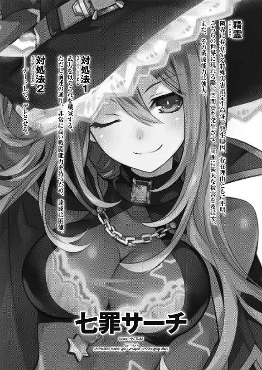
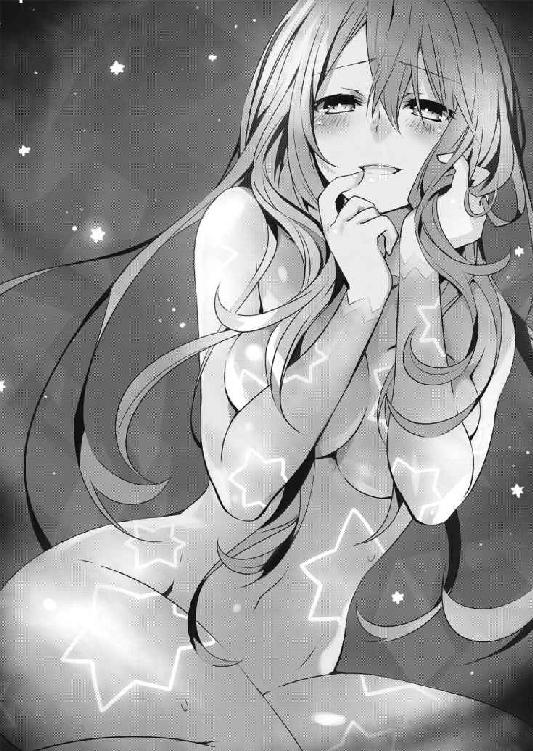

| デート・ア・ライブ 8 七罪サーチ <デート・ア・ライブ> (富士見ファンタジア文庫) | |
| 橘 公司 & つなこ | |
| Kadokawa / 富士見書房 (2013) | |
デート・ア・ライブ８
七罪サーチ
橘 公司

富士見ファンタジア文庫
本作品の全部または一部を無断で複製、転載、配信、送信したり、ホームページ上に転載することを禁止します。また、本作品の内容を無断で改変、改ざん等を行うことも禁止します。
本作品購入時にご承諾いただいた規約により、有償・無償にかかわらず本作品を第三者に譲渡することはできません。
本作品を示すサムネイルなどのイメージ画像は、再ダウンロード時に予告なく変更される場合があります。
本作品は縦書きでレイアウトされています。
また、ご覧になるリーディングシステムにより、表示の差が認められることがあります。
口絵・本文イラスト つなこ

序章 もう一人の士道
「な......っ」
学校の屋上で。
士道は、目の前に立つ少年を見つめながら、呆然と立ち尽くしていた。
理由は単純。その少年が、この上なく異様な姿をしていたからである。
とはいえ、別に怪物のように醜悪な顔をしているわけでも、おどろおどろしい面体をしているわけでもない。無関係の人間が見たならば、むしろ平々凡々な少年であるという印象しか持たなかったろう。
目にかかるくらいの長さの髪に、中性的な顔立ち。体格は中肉中背で、その身に纏っているのは、来禅高校の冬服だった。
さしておかしなところがあるわけでもない、ごくごく普通の少年。
しかし、士道は戦慄していた。ごくりと息を吞み、視線を鋭くする。
「おまえ......一体、何者だ？」
「......何者？ 何を言ってるんだ？」
士道が問うと、少年は肩をすくめながら返してきた。
そしてニッと唇の端を上げながら、続ける。
「──五河士道だよ。見ればわかるだろう？」
言って、少年は、愉快そうに笑った。
「............っ」
その異様さに、思わず眉をひそめる。
そう。士道の目の前に立った少年は──士道とまったく同じ顔をしていたのである。
頭頂から爪先まで、士道の記憶と寸分違わず、毎朝士道が鏡の中に見ているのと同じ少年が、そこに立っていたのだ。
士道と同じ顔をした少年は、そんな士道の様子を楽しげに眺めると、ふうと息を吐き、口を動かしてきた。
「──本当にわからないの？ 私のことが」
「......っ⁉」
少年が発した声に、士道は再び眉をひそめた。
なぜならその声が、士道のものではなく、女性のそれになっていたからだ。
否──それだけではない。士道はその声に、聞き覚えがあった。
「まさか......七罪......⁉」
士道が名を呼ぶと、少年はニィッと笑みを浮かべた。
「──ふふ、正解。ようやく気づいてくれたわね、士道くん」
「な、何なんだよその姿！ 一体何のために......」
士道が言いかけると、七罪は不意に表情を歪めた。
「何のために、ですって？ 言ったじゃあないの。──私の秘密を知った者は、ただじゃあ済まさないって。......覚悟なさい。あんたなんか、めっちゃくっちゃのぎったんぎったんのへっちょへちょにしてやるんだから......！」
七罪は憎々しげにそう言うと、ビッ！ と親指を下に向けた。
第一章 一〇月の魔女
「うふふー。ねぇ、だーりん。もっとこっちに来てもいいんですよぉ？ ほぉらぁ」
「や......あのな、美九」
「なんですかー？ あ、そうだ。この前美味しいイタリアンのお店を見つけたんですよぉ。今晩って何か予定ありますかぁ？ よかったら一緒に行きましょうよぉ」
「あ、いや、十香たちの晩飯作らないといけないし......」
「なぁんだー、じゃあ十香ちゃんたちも一緒に行きましょうよー。私はそこまで狭量な女じゃありませんよー？ もちろん私の奢りですから安心してくださいねぇ」
「いや、だからな、美九......」
無邪気な笑みを浮かべながらぐいぐいと身体を押しつけてくる少女に目をやりながら、五河士道は困り顔を作った。
絹糸のように艶やかな紫紺の髪に、手入れを欠かしたことのないであろう滑らかな肌。まごう事なき美少女である。
この誘宵美九という少女、学年では士道の一つ上のはずなのだが、日頃から先輩らしからぬ子供っぽい言動が見受けられるのだった。
だというのに身体の方はしっかり育っており、動くたびにその豊満なバストが士道に押しつけられるのだから、もうどうしたらいいのかわからない。士道は顔中に脂汗を浮かべながら、あちこちに目を泳がせる他なかった。
とはいえ、今士道を硬直させているのは、美九の無邪気なアプローチのみではなかった。
「............」
じとーっ、という視線が、士道の全身に絡みつく。
......そう。士道の妹・琴里が、士道と美九の目の前に座っているのだ。
黒いリボンで二つに括られた髪に、どんぐりのような丸っこい目、そして口にくわえたチュッパチャプスが特徴的な少女である。今は真紅のジャケットを肩掛けにしながら頰杖を突き、士道と美九のいちゃいちゃ（一方通行）を、機嫌悪そうに眺めてきていた。
士道たちがいるのは、空中艦〈フラクシナス〉内の一室だった。
意図的に照明が絞られているかのような、薄暗い空間である。中央に士道たちが座する椅子が置かれ、その周りを囲うように長机が並べられていた。まるで緊迫した面接会場か、さもなくば裁判所といった様相だ。......まあ、美九はあまり気にしていないようだったが。
「......そろそろいいかしら、美九」
「え？ そろそろって、何がですかぁ？」
美九が悪意のない顔でそう言うと、琴里はギリッと奥歯を嚙みしめて机を叩いた。
「だ・か・ら‼ 事情聴取だって言ってるでしょ！ あなたが『だーりんと一緒じゃなきゃ嫌ですぅー』とか言うから特別に同席を許してあげたんじゃない！」
「あぁ、そういえばそうでしたねー」
あははと笑って、美九が琴里に向き直る。が、手は士道の腕に絡みついたままだった。
琴里がはぁ、と大きなため息を吐いてから、手元に置かれた書類を捲る。
「......じゃあ、質問に移るわよ」
「はいはい、どうぞー遠慮なく」
美九がなんとも気安い調子で言う。琴里はもう一度吐息をこぼしてから言葉を続けた。
「あなたの能力について、天使について、聞きたいことはいろいろとあるけれど......それらはとりあえずあとに回しておくわ。まず確認しておかなければならないのは──」
言って、琴里が美九に指先を向ける。
「あなたを、精霊にした存在のことよ」
「............！」
琴里がそう言った瞬間、緩みきっていた美九の頰が、ぴくりと動いた。
「あなたは生粋の精霊ではなく、もとは人間だった。──それは間違いないわね？」
「............」
琴里の言葉に、美九が少しだけ眉をひそめ、苦しげな表情を作る。心なしか、呼吸も速くなっている気がした。
一瞬、琴里の質問に答えられない事情があるのでは......と思ったが、すぐに思い直す。
美九が精霊になったとき。それは、美九が人間に失望し、世界に絶望しきっていた頃だったという話だ。恐らくその頃のことを、自らの口から発するのが躊躇われたのだろう。
「大丈夫か、美九。辛いようなら少し休んでから──」
「......いえ、大丈夫ですよー」
士道が言うと、美九は首を横に振ってきた。
「私にはだーりんがいます。その過去も全部含めて、前に進むって決めたんですから」
「美九......」
士道が後押しをするように優しく背を叩くと、美九はこくりとうなずいた。
「......ええ。そうですよー。今から数ケ月前......みんなに裏切られて、心因性の失声症で声を失って、生きる希望をなくした私の前に──『神様』が現れたんですー」
美九が言うと、琴里が少しだけ、視線を鋭くした気がした。士道もまた、微かに眉根を寄せる。
だが美九は、そんな琴里と士道の様子に気づくふうもなく、話を続けた。
「『ねぇ、力が欲しくはない？ 世界を変えられるくらいの、大きな力が欲しくはなぁい？』。『神様』はそう言って私に、キラキラ光る紫色の宝石みたいなものを差し出してきました。そして、それを受け取ろうと手を伸ばしたら、その宝石が私の身体の中に溶け込むように入ってきて......次の瞬間には、私は、誰にでも言うことを聞かせることのできる、魔性の『声』を手に入れていたんですー」
「......なるほどね」
琴里が難しげな顔でうなり、くわえていたチュッパチャプスの棒をピンと立てる。
「その『神様』とやらのことを、わかる限り全て話してちょうだい」
「全て、と言われましてもぉ......」
美九が、困ったように眉を八の字にする。
「なんだか不思議な感じだったんですよねぇ。確かにそこにいるのに、ノイズがかかったように姿が認識できなかったり、確かに声を聞いて、その内容を理解しているのに、どんな声だったかまったくわからなかったり。──なんていうか、存在そのものにモザイクがかかってるような感じだったんですー......」
「......そう」
琴里が小さく息を吐きながらそう言う。とはいえ、そこまで落胆しているようには見えなかった。恐らく、美九の反応はだいたい予想していたのだろう。
「じゃあ、質問を変えるわ。あなたは精霊の力を手に入れてから、破壊衝動に襲われたり、自我を侵食されたりしたことはある？」
「破壊衝動......ですかぁ。いえ、あまり思い当たる節はありませんけどぉ......」
「ふぅん......」
琴里が眉を歪めながら、手元の書類に何かを書き込む。
「琴里、それは......」
士道が言うと、琴里は「ええ」と首肯してみせた。
「もしかしたら私のケースと同じことが美九にも起きてるのかも、と思って。──でも、どういうことかしらね。霊力の種類によって性質が違うのか、個人の適性の問題なのか......もしくは、〈ファントム〉が私のときに、人間に霊力を与えるコツを摑んだとか？ はっ、もしそうなら、実験台にされたこっちとしてはたまったものじゃあないけれど」
肩をすくめ、忌々しげに言う。士道もまた、ギリと奥歯を嚙みしめ、拳を握った。
〈ファントム〉。美九に、そして琴里に霊力を与え、精霊に変化させた存在。
精霊なのか、人間なのか、それともまた別の生物なのか。なぜ人間を精霊にすることができるのか、何のためにそんなことをしているのか──一切が謎に包まれた、文字通り幻影のような『何か』である。
「むー......」
と、士道が思案を巡らせていると、不意に腕がぐいと引かれた。見やると、美九がぷくーっと頰を膨らませていることがわかる。
「私を無視して二人だけで考え込まないでくださいよぉ」
「ああ......悪い悪い」
士道が苦笑すると、琴里も思い直すようにコホンと咳払いをした。
「ごめんなさいね。でも安心して。事情聴取はまだ始まったばかりよ。これからしっかり詳細な話を聞いてあげる。〈ファントム〉に記憶操作をされてる可能性も捨てきれないから、ちょっと脳波を見るために頭に電極も貼りましょうねー？」
琴里がニコッと微笑む。するとそれと対照的に、美九が嫌そうな顔で頰に汗を垂らした。
──結局美九が琴里から解放されたのは、辺りが夕日に染まってからだった。
〈フラクシナス〉の転送装置で五河家の前に転送された美九が、へろへろとよろめくように士道にもたれ掛かってくる。
「お、おいおい、大丈夫か？」
「つ、疲れましたぁ......」
言って、美九が大きなため息を吐く。
「......なんかもう、今日はまっすぐおうちに帰ってお布団にダイブしたい気分ですー......だーりん、ごめんなさいなんですけど、例のお店は、また今度でもいいですかぁ？」
「え？ ああ、そりゃ構わないけど......」
士道が言うと、美九は胸元で手を組んで、ぱぁぁっ、と顔を明るくした。
「んー、もうっ、だーりんてば本当に優しいんですからぁっ」
そしてその姿勢のまま、さらにぎゅっと身体を押しつけてくる。
「おっ、おい、仮にもアイドルが、ヤバいんじゃないのか、こういうの......」
士道が顔を赤くしながら目を逸らすと、美九が一瞬キョトンとした顔を作った。
そう。今無邪気に士道に抱きついている少女・誘宵美九は、奇跡の歌声を持つアイドルとして、かなり名の知れた人物なのである。
長らく正体を隠して歌手活動をしていたため、あまり顔は知られていなかったのだが......先月からテレビ出演を解禁したこともあって、今や彼女の顔は日本全国に知れ渡っているのだ。こんな無防備な姿を晒していては、一瞬でスキャンダル写真を撮られてしまうだろう。
しかし美九は、士道の思考を見透かしたように、ニッと唇の端を上げた。
「ふふ、いいんですよー、そんなの。もしパパラッチが潜んでるなら、目線とピースくらいサービスしてあげます。フライデーでもサンデーでもドンと来いってんですー」
「......いや、サンデーは大丈夫だと思うけど......」
士道が苦笑すると、美九は「ふふっ」と微笑んでみせた。
「だーりん、言いましたよねー？ もし誰も私の歌を聴いてくれなくなっても、だーりんだけはファンでいてくれるって。だから......大丈夫なんですー。だーりんさえいてくれれば、私は、何があっても」
「ああ......そうだな」
士道は美九の目を見つめ返すと、小さく首を前に倒した。
美九はそんな士道の反応を見てか、満面の笑みを作り、士道から身体を離した。
「じゃあ、今日はそろそろ失礼しますー。また会えるのを楽しみにしてますね、だーりん」
「ああ、またな」
「はいー。じゃあ......」
と、美九が不意に、士道の首に両手を巻き付け、「んー」と唇を突き出してきた。
「な......っ⁉ なななな何してんだ、美九......⁉」
「ええ？ 何って......さよならのちゅーですけど......」
「い、いや、いくらスキャンダルが怖くないからって、おかしいだろ、それは」
「うぅん、もう、恥ずかしがり屋さんなんですからぁ。大丈夫ですよー。ほぉらぁ」
「お、おい、ちょっと......」
美九がぐいと両手に力を入れてくる。士道はされるがままに顔を引き寄せられ──
「あーっ！ 何をしているのだ二人ともっ！」
不意に右方から響いた大声に、ビクッと肩を震わせた。
士道と美九が、同時に声のした方向に顔を向ける。そこには、わなわなと手を震わせながら目を見開いた少女が立っていた。
肩に背に煙る長い夜色の髪に、美しい水晶の瞳。一度目にしたなら決して忘れ得ないであろう、絶世の美少女である。
夜刀神十香。士道のクラスメートにしてお隣さん。そして──美九と同じように、かつて士道が霊力を封印した精霊だ。そろそろ夕食時のため、五河家にやってきたのだろう。
「と、十香！」
「あらー、十香さん。お久しぶりですねぇ」
美九が朗らかな調子で言う。すると十香がのしのしと歩いてきて、士道と美九をぐいと引きはがした。そして、士道を守るように、バッと手を広げて二人の間に立つ。
「大事ないか、シドー！ おのれ美九め、改心したと聞いていたが、一体何のつもりだ⁉」
と、十香がキッと視線を鋭くすると、十香がやってきた方向から、さらに新たな足音が三つ、聞こえてきた。
「ふん、我と夕弦の共有財産である士道を毒牙にかけようとは、いい度胸だ。よかろう、御主に八舞の恐ろしさ、篤と教えてやろうではないか！」
「警告。士道に接触する際は、所有権を有する夕弦と耶俱矢にその旨を記して申請書類を提出してください」
言って瓜二つの双子が、美九に向かってバッと構えを取る。
結い上げられた髪に勝ち気そうな顔が特徴的な耶俱矢と、長い三つ編みとぼうっとした表情が印象的な夕弦の二人である。実際首から上は、髪型と表情の違いくらいでしか二人を見分けることはできなかった。......まあ、少し視線を下にずらすだけで、絶望的な体型の違いを認識できるのであるが。
次いでその後ろから、小さな声が聞こえてくる。
「み、道の真ん中でそんな......いけないと思います......」
そう言って、帽子を目深に被った小柄な少女──四糸乃が頰を赤くする。それと同時に、彼女の左手に装着されたウサギのパペット『よしのん』が、パクパクと口を動かした。
『ねー、駄目だよー。まだそのパターンは四糸乃も試してないんだからー。横取り禁止ー』
「よ、よしのん......っ！」
四糸乃が慌てた様子で『よしのん』の口を塞ぐ。『よしのん』が苦しげに両手をくねくねと動かした。
そういえば、しばらく〈フラクシナス〉の隔離スペースで生活をしていた四糸乃もまた、少しずつ普通の生活に慣れさせるためにと、数日前からマンションの一室に住居を移していたのだった。
八舞姉妹に四糸乃。彼女らもまた十香と同じく精霊であり──美九とも因縁浅からぬ間柄であった。
そう。先月、天使を顕現させた美九によって心身を操られてしまった経験があるのである。そのためか、未だ彼女らには美九に微かな警戒心があるようだった。
しかし当の美九はさして気にするふうもなく、「まあっ」と目を輝かせた。
「久しぶりですねー、四糸乃ちゃんに耶俱矢さん、夕弦さん。あのときはすいませんでしたぁ。一度ちゃんと謝りたかったんですよー」
そう言って、ぺこりと頭を下げる。そんな反応に戸惑ったのか、三人が困惑した様子で顔を見合わせた。
だが、十香はそんな美九の行動を見ても警戒を解かず、士道の前に立ち続けていた。
「それで、一体どういう了見だ。今シドーに何をしようとしていたのだ！」
「え？ さよならのちゅーですよ？ 十香さんはいつもしてないんですか？」
「さ、さよならの......ちゅー？」
十香は困惑気味に眉をひそめ、士道の方に振り向いてきた。
「......普通、するものなのか？」
十香が怪訝そうに問うてくる。ここで勘違いされてはたまらない。士道はブンブンと首を横に振った。
「！ う、噓ではないか！ さよならのときにキスをするだなんて、そんなこと──」
「えぇー、素敵じゃないですかぁ。十香さんもしてみたらどうですかー？」
『な......っ⁉』
あっけらかんとした美九の言葉に、士道、十香、のみならず四糸乃や八舞姉妹までもが息を詰まらせた。
だが、美九はそんな反応こそ意外といった様子でキョトンとした顔を作り、すぐに何かを思いついたようにパンと手を打ち合わせた。
「そうだ！ いいことを考えましたー。まず私がだーりんとキスをするんですよ。そうしてから、だーりんとキスをした私が、十香さんとキスをするんです。どうですかー？ 一挙両得！ 画期的じゃないですかー⁉」
「な、なぜ私がおまえとキスをせねばならんのだ⁉」
「え？ だってぇ、私は直前にだーりんとキスしてるわけじゃないですかぁ」
「む......うむ」
「ってことはぁ、十香さんがだーりんとキスをしてるようなものじゃないですかー？」
「むう......な、なるほど......」
「いやなるほどじゃなくて」
説き伏せられそうになった十香を止めるように言うと、十香はハッと肩を震わせた。
「お、おのれ美九め！ 私をたばかろうとしたな！」
「そんなこと考えてませんよぉ。......あ！ じゃあこうしましょう。まず私と十香さんがキスしてから、私とだーりんがキスするんですー。十香さんの熱い思い、私がしっかとだーりんに伝えてみせますよー」
「な......⁉」
「んー」
美九が胸元で祈りを捧げるように手を組み、目を伏せて十香に唇を突き出す。十香は焦ったように顔を左右に動かし、その場から逃げ出した。
「あぁん、なんで逃げるんですかー。待ってくださいよぉー」
「つ、ついてくるなっ！」
悲鳴のような声で言い、十香が四糸乃たちの方に走っていく。
「きゃ......っ」
「ば、馬鹿者！ こちらへ来るでない！」
「戦慄。逃げますよ、耶俱矢」
口々に言って、皆が美九から逃げ出す。
「あぁっ、もう、こうなったらみんなみんな任せてくださいー！」
『わぁぁぁぁぁぁぁぁぁっ！』
「は、はは......」
心底楽しそうな顔をして皆を追いかける美九を見て、士道は力なく苦笑した。
なんというか、彼女は確執やら因縁やらを飛び越えて、わりと簡単に皆と打ち解けてしまう気がしたのだった。
◇
「ふむ......」
士道と美九を地上に帰したあと。〈フラクシナス〉内の執務室で先ほどの美九の話をまとめながら、琴里はあごに手を当てた。
目の前に展開された画面には、録音した美九の音声を文書データに起こしたものが表示されている。それを再度チェックしながら、項目別に編集し、円卓会議への提出資料を作成しているのである。
本来ならこのような仕事は、他の機関員に任せておくべき雑務である。だが謎多き〈ファントム〉の件に関してだけは、直接〈ファントム〉と対面したことのある琴里が手がけねばならないのだった。
何しろ美九は、士道と琴里を除けば、唯一〈ファントム〉に遭遇したことのある少女なのである。彼女の発した言葉の端々に、〈ファントム〉の正体に迫る情報が潜んでいるやもしれない以上、他の機関員に任せるわけにはいかなかった。
「美九に与えられた紫色の霊結晶......、〈ファントム〉は一体幾つの霊結晶を持っているのかしら。......もし無尽蔵にそれを創り出せるとしたら──」
文面を目で追いながらコンソールを弄り、ぶつぶつと独り言を呟く。
と、その瞬間、
「ひゃっ⁉」
不意に頰に冷たいものが押し当てられ、琴里は甲高い声を発した。
「な、何よ、一体......！」
驚いて顔を上げると、いつの間にそこに現れたのだろうか、琴里と同い年くらいの少女が、缶コーヒーを差し出しながら立っているのが見て取れた。
一つに括られた髪に、左目の下にある泣き黒子が印象的な少女である。どことなく士道に似た雰囲気があった。
「熱心なのはいーですけど、ちょっとばかし根を詰め過ぎじゃねーですか？」
言って、少女──崇宮真那がニッと微笑んでくる。
「......言われなくてもわかってるわよ」
憮然とした調子でそう返し、差し出されたコーヒーを受け取る。よく冷えた缶の口を開け、中の液体を一気にのどに流し込むと、ほろ苦い大人の味が舌に広がった。
「それで、どうだったんですか？ 何か進展は？」
「......残念ながら。五年前、私たちの前に現れた〈ファントム〉と、美九に接触してきた『何か』が、恐らく同一の存在だろうってことがわかっただけで──」
言葉の途中で、琴里はぴくりと眉を動かした。
「......って、なんでこんなところにいるのかしら、あなたは」
「へ？」
琴里が半眼を作りながら言うと、真那は不思議そうに首を傾げた。
「なんでって、普通に正面の入口から入ってきましたよ。ほら、それにさえ気づかねーなんて、疲れてやがる証拠ですよ。少し休んで──」
「そうじゃなくて！ あなた、安静にしてるように言われたでしょ！ ただでさえ身体がボロボロなのに、あんなに無茶して......！」
琴里はテーブルをバンと叩きながら叫んだ。
そう。崇宮真那は今でこそ〈ラタトスク〉の庇護下にあるものの、かつてはＤＥＭインダストリーの第二執行部に所属する魔術師であった。そしてその際、全身に魔術処理を施され、強大な力を得た代わりに、その身に深刻な代償を刻まれていたのである。
「言ったでしょう。すぐに〈ラタトスク〉の専門機関で処置を受ければ、少しでも命を長らえられるかもしれないって！ なのに......！」
「い、いやまあ、そーなんですけどね。あ、あはは......じゃあ、私はそろそろ......」
真那がばつの悪そうな笑みを浮かべ、そそくさと退散しようとする。琴里は椅子から立ち上がると、その進行を止めるように真那の身体を押さえつけた。
──正確に言うならば、真那の背に顔を埋めるように、ぎゅっと抱きついた。
「こ、琴里さん？」
「......ありがとう。あのときあなたが〈フラクシナス〉にいてくれなかったら、どうなっていたかわからない」
「............」
真那は静かに振り返ると、ポンポン、と優しく琴里の頭を撫でてきた。
「それはお互い様ですよ。──私だって、あなたに助けられたんです。むしろ早めに恩返しができてホッとしてるくらいです」
言って、真那がニッと唇の端を上げてくる。
琴里は滲みかけていた涙を軽く拭うと、ふふっと肩をすくめた。
「......なんていうか、本当にあなたって士道の妹よね。ちょっと妬けちゃうわ」
「へ？」
「なんでもないわ。──けど」
琴里は眉根を寄せると、ぐっと両腕に力を入れ、真那の身体をがっちりホールドした。
「あなたの行動には感謝してる。でも、それとこれとは話が別よ。ちゃんと専門機関に行って、しっかり処置を受けてもらうからね」
「い、いやでもほら、私は〈ナイトメア〉を追わねーと。私以外にあいつの相手は......」
「確かに狂三の調査は急務だけど、それ以上にあなたの方が大変でしょ......！」
「あ、あの、琴里さん？ 可愛いお顔が大変恐ろしいことになっていやがるんですが......」
真那が引きつった笑みを浮かべながら少し身体を反らす。琴里は真那を逃さぬようさらに両手に力を込めた。
と、そのとき。琴里の執務机の上に展開されたディスプレイにウインドウが表示されたかと思うと、スピーカーから音声が響いてきた。
『──五河司令。本部より通信が入っていま──す......っ⁉』
ウインドウの中に現れた〈フラクシナス〉クルー・椎崎が、ハッと肩を揺らす。まるで、見てはいけないものを見てしまったかのように。
そこで、琴里は「あ」と声を発した。椎崎の顔がこちらに見えているように、こちらの様子も椎崎に見えているはずだ。そして今、琴里は真那と情熱的な抱擁を交わしている最中だったのである。いきなりこのシチュエーションだけを見せられたら、いろいろと誤解されかねない光景だった。
琴里は慌てて真那から離れると、画面に向き直った。
「勘違いしないでよね！ 今のは真那が逃げようとしたから捕まえただけで──」
「じゃ、私は〈ナイトメア〉追跡の任に入ります！ 結果は追って連絡しますので！」
琴里の拘束から解き放たれた真那が、脱兎の如く駆け出す。琴里が再度襟首を摑もうと手を伸ばすも──遅い。真那は素晴らしい身のこなしで琴里の手をすり抜けると、執務室から出ていってしまった。
「あっ、この......！ 戻ってきたらちゃんと処置を受けてもらうからね！」
「考えておきまーす！」
真那が手を振りながら言う。それと同時に、執務室の自動ドアが音を立てて閉じた。
「ったく、あの子は......」
琴里はくしゃくしゃと頭をかくと、椅子に腰掛けて画面に向き直った。
「......それで、何？ 本部から？」
『あ、は、はい。秘匿回線を使って司令に通信が入っています。繫いでよろしいですか？』
「ええ、お願い」
『了解』
そう言って椎崎が、コンソールを操作する。すると画面から椎崎の顔が消え、代わりに別の人物の姿が映し出された。何度か顔を合わせたことがある、〈ラタトスク〉円卓会議議長、エリオット・ウッドマンの秘書官の一人だ。
『お忙しいところ失礼します、五河司令』
「それは構わないけれど、どうしたの、急に」
『その、実は、ウッドマン卿が──』
秘書官は少し気まずげな顔を作りながら、続けてきた。
◇
一〇月一五日、日曜日。街の装飾がハロウィンムードに染まりきった頃。士道と十香は夕食の買い物をしに商店街へ足を運んでいた。
「おお......シドー、あれはなんだ？」
言いながら、十香が雑貨屋の軒先に飾ってある巨大なカボチャのお化けを指差す。
「ああ、ジャック・オー・ランタンだな。カボチャをくり抜いて作るんだ。まあ、あれは本物のカボチャじゃなくてプラスチックだろうけど」
「カボチャ？ あのお化けはオレンジ色だぞ？ カボチャは緑ではないのか？」
「ああ、日本のは大体緑だけど、外国にはああいうカボチャがあるらしいんだ」
「なんと......あんなに大きいと、煮物と天ぷらとスープにしてもまだ余りそうだな」
十香が感心したように目を丸くしながらうんうんとうなずく。
まあ、ジャック・オー・ランタンに使われる品種のパンプキンは、基本観賞用であまり食べないと聞いた気がするが......別に十香の夢を壊す必要もないだろう。
「んー、じゃあせっかくだから、今日の晩飯用にカボチャでも買って帰るか。確か挽肉が余ってたし、そぼろ煮かコロッケにでもしよう」
「おお！」
十香が目をキラキラさせながら、ブンブンと手を振る。
「うむ、それはとてもいいと思うぞ！ しかし、そぼろ煮はわかるがコロッケ......？ コロッケはジャガイモで作るのではないのか？」
「普通はそうなんだけどな。カボチャで作っても甘くて美味しいんだぞ」
言うと、十香は味を想像するように数秒間目を閉じたのち、ごくっと生唾を飲み込んだ。
「......うむ、今日はコロッケにしよう！ さあ、そうと決まれば行くぞシドー！」
言って、十香が八百屋の方を指差し、歩幅を大きくして歩いていく。
「あ、おい、前見て歩かないと危な──」
と、士道が言いかけたところで、十香は道の脇から出てきた人影にぶつかって、その場に尻餅を突いてしまった。
「うぬっ！」
「おっと......」
「ああもう、いわんこっちゃない。ほら、大丈夫か？」
「む......うむ」
十香を立ち上がらせてから、今し方十香がぶつかってしまった人影の方に向き直る。
そこにいたのは、車椅子に座った五〇代くらいの外国人男性と、それを押す二〇代半ばくらいの眼鏡をかけた女性だった。
「すいません、不注意で。怪我はありませんか？ ほら、十香も」
「む......すまん。前を見ていなかった」
十香がすまなそうに頭を下げる。すると男性は柔和そうな微笑を浮かべて首を振り、顔に似合わぬ流暢な日本語を発してきた。
「いや、こちらこそすまなかったね。大丈夫かい、お嬢さん」
「うむ、大事ないぞ」
「それは何より。君のような可愛らしいお嬢さんに怪我をさせたとあっては、私は地獄に落ちてしまうところだった」
おどけるような調子で男性が言う。すんなりとそんな台詞が出るあたり、昔はさぞプレイボーイだったに違いない。見習わなければなあ、と密かに思う士道だった。......まあ、当の十香は頰を染めるでもなくキョトンとしていたのだが。
と、士道がそんなことを考えていると、男性が何かを思い出したように手を打った。
「そういえば、一つ聞きたいことがあるんだ。君たち、市民病院の場所を知らないかい？」
「病院......ですか。ああ、それなら、商店街を真っ直ぐ行って、道路に出たところを左、三番目の信号を右に曲がってずっと行けば見えてきますよ」
士道が言うと、男性はううむと首を捻った。
「よくわからないな......すまないが、そこまで案内してくれないかい？」
士道はぽりぽりと頰をかいた。士道たちもこれから買い物があるのだが......まあ、そう遠い場所でもないし、それくらいは構わないだろう。
「いいですよ。こっちです」
言って、商店街を突っ切るように歩いていく。
「すまないね。日本人は本当に親切だな。感動してしまうよ」
「いえ、これくらい。ええと──」
「ああ、ボールドウィンとでも呼んでくれ。こちらはカレン」
言いながら、男性──ボールドウィンが、車椅子を押して歩く女性を親指で示す。するとカレンと呼ばれた女性は「どうも」とだけ言って再び無言に戻った。
淡いノルディックブロンドに、碧眼。なぜだろうか、間違いなく初対面であるはずなのに、士道はこのカレンという女性をどこかで見たことがある気がした。
「どうかしたかね？」
「あ、いえ......俺は五河士道です」
「私は夜刀神十香だ」
士道と十香が言うと、ボールドウィンは機嫌良さそうにうなずいた。
「うむ、異国の地で素晴らしいカップルに出会えたことを神に感謝せねばならないな」
「ぶ......ッ！」
「ぬ......？」
その言葉に、士道は思わず噴き出した。ボールドウィンの言葉の意味がわからなかったのか、士道のリアクションを怪訝に思ったのか、十香が首を傾げる。
「どうかしたかね士道くん」
「べ、別にカップルってわけじゃ......」
「おや、違ったかね。これは失敬」
ボールドウィンが肩をすくめる。士道は額に滲んだ汗を拭った。
が、そんな士道の背を、十香がちょんちょん、とつついてくる。
「シドー。カップルとはなんだ？」
「え......ッ⁉ いや、それはだな......」
士道が困っていると、ボールドウィンが面白がるように十香に視線を向けた。
「十香さん。君は、士道くんと出会ってからどれくらいになるんだい？」
「む？ そうだな......大体半年くらいだ」
「なるほど。ということは四月くらいか。日本ではちょうど入学式や始業式が行われる辺りだね。そこで出会ったのかい？」
「いや。私とシドーは空間震のときに──」
「わーっ！」
士道は、十香の素直すぎる言葉を遮るように大声を上げた。
十香もそこで気づいたらしい。ハッと目を丸くし、誤魔化すように言葉を続ける。
「ち、違うぞ。空間震は空間震でも、あれだ、私が原因のあれではなくてだな、その......」
「く、空間震のときに、シェルターで会ったんだよな！」
「！ う、うむ！ それだ！」
士道が言うと、十香は賛同するように首肯してきた。
少しわざとらしかったが、まあ一応筋は通ってるはずである。士道は恐る恐るボールドウィンの方に目をやった。
ボールドウィンは怪訝そうな顔をするでもなく、ただ微笑ましげに二人のやりとりを眺めていた。どうやら、上手く誤魔化せたらしい。士道は胸を撫で下ろした。
だが、何というのだろうか、ボールドウィンの表情には、こちらの事情を全て察しているかのような気味の悪さがあった。
「そうか。それは運命的だ」
ボールドウィンがゆっくりと、何やら感慨深そうに息を吐いてから、言葉を続ける。
「──十香さん。今、君は幸せかい？」
「ぬ？」
急な質問に、十香が目を丸くする。しかし十香は別段怪訝そうな顔もせず、大きく首を前に倒した。
「うむ、とても幸せだぞ！」
「そうかい」
ボールドウィンはそう言って、優しげに微笑んだ。
と──その瞬間。
──ウウウウウウウウウウウウウウウゥゥゥゥゥゥゥゥゥゥ────────
不意に。
商店街の各所に設えられた街頭スピーカーから、けたたましいサイレンが鳴り響いた。
「警報......っ！」
士道が叫ぶと同時、スピーカーから避難を促すアナウンスが流れ始め、辺りにいた買い物客たちが、慌ただしく最寄りのシェルターへと向かっていった。
だが、士道は皆とともにシェルターに避難するわけにはいかなかった。
空間震警報が鳴ったということはすなわち──精霊が出現するということである。今すぐ〈フラクシナス〉と連絡を取り、転送装置で回収してもらわねばならない。
「あ、あのっ！ ボールドウィンさん！ ここは危険です。すぐ避難してください！」
「ああ、そうするとしよう。君は？」
「えっ？ お、俺は、その、ちょっとやることがあるので......」
士道がしどろもどろになりながら答えると、ボールドウィンは肩をすくめながら笑った。
「いや、意地の悪い問いだったね。また会える幸運を願っているよ。──頑張ってくれ。精霊を、よろしく頼む」
「え......？」
ボールドウィンの言葉に、士道は眉をひそめてのどを絞った。
しかし彼は何も返さず、カレンに命じてもと来た道を戻っていった。
「シドー、何をしているのだ？」
「あ、ああ......」
十香に言われて、士道はボールドウィンとカレンの背から視線を外すと、〈フラクシナス〉と通信を取るためにポケットに潜ませていたインカムを右耳に装着した。
「これから、いかが致しますか。──五河司令から何度か連絡が入っているようですが」
五河士道、夜刀神十香と別れてすぐ、車椅子を押すカレンが問いかけてくる。ボールドウィンはそちらを一瞥するように視線をやってから前方に向き直った。
「はは、心配をかけてしまったかな。とはいえ......空間震となると〈フラクシナス〉も忙しかろう。とりあえずは大人しく避難しておくさ。──ああ、それと、確か〈ベルセルク〉の折に捕らえたＤＥＭ社員がいるという話だったね。せっかく日本まで来たんだ。少し話させてもらおうじゃないか」
「わかりました。手配しておきます」
淡々とした調子でカレンが言ってくる。ボールドウィンは小さく首肯した。
「──それで、彼らに異常は？」
「見る限り、今のところは問題ないかと。非常に安定しています」
「そうか。それは何よりだ」
言って、ふうと息を吐く。
先月。『反転』したという精霊に、複数の天使を顕現させたという少年、五河士道。
無論、検査結果の報告は受けていたが、やはり直接会ってみなければ懸念は拭いきれなかったのである。
だが、それも杞憂のようだった。今し方耳にした十香の弾むような声を思い起こし、唇の端を緩める。
「──日本に来てよかった。彼女は、本当に幸せそうだったね」
そう言って、彼──エリオット・ボールドウィン・ウッドマンは、小さく微笑んだ。
◇
「こりゃ......なんというか、不気味だな......」
〈フラクシナス〉から空間震の発生現場に転送された士道は、辺りに広がる光景を見て、思わず頰に汗を垂らした。
直径一キロメートルに及ぼうかという広大な範囲が、綺麗に整地されたかのように円状に削り取られている。空間震。空間の地震と称される突発性災害の特徴だ。
だが、今士道が見ていたのは、そんな災害の爪痕ではなかった。
空間震の消失痕の外縁南側。そこに、なんとも異様な建造物が建ち並んでいたのである。
空中の半ばで途切れたジェットコースターのレールや、馬の首がなくなったメリーゴーラウンド。ヒビ割れたコーヒーカップに、半壊状態になったミラーハウス。
いずれも錆び付き苔生しており、先ほどの空間震でこうなったとは思えなかった。
そう。士道が転送装置で送られたのは、天宮市の外れに位置する遊園地の跡地だったのである。
正式な名前はわからない。近隣住民の間でも「おばけランド」としか呼ばれていなかった。三〇年前の南関東大空災をギリギリ免れた幸運な施設だったらしいが、当然ながら災害後は来客数が激減──というか、ほぼ皆無になり、瞬く間に廃園となったという話だ。
その上直接的な空間震被害が出ていたわけでもなかったため、再開発の補助金が宛てがわれることもなく、次々と整備されていく天宮市内を眺めながら現在に至る、という、なんとも哀れな場所だった。
今回の空間震においても、あくまで被害範囲に遊園地の敷地が重なっていただけで、錆び付いたアトラクション等はそのまま残っていた。
それが夕暮れ時という時間帯とも相まって、何とも不気味な光景を作り出しているのである。まるで、遊園地では脇役に過ぎないおばけ屋敷が、施設全域を侵食し、その版図を拡大したかのような有様だった。
「ちょっと雰囲気出過ぎだろ、これ......」
『文句ばっか言ってるんじゃないの』
と、士道が渋い顔をしながら呟いていると、右耳に装着したインカムから、琴里の声が聞こえてきた。
『出現した精霊は既に空間震発生ポイントから西に移動しているわ。すぐにＡＳＴも現場に到着するはず。余計な茶々を入れられる前に接触してちょうだい』
「了解......っ」
士道は小さくうなずくと、南──廃墟と化した遊園地の方へと爪先を向けた。
正直あまり気は進まないが、そんなことを言っている場合ではない。いくら先手を打てているとはいえ、ＡＳＴ──対精霊部隊もすぐにこの場に向かってくるだろう。そうなる前に精霊と少しでも会話をしておかねばならないのだ。
が──廃墟を走っていた士道は、不意に足を止めた。
「......は？」
呆然と声を発し、その場に立ち尽くす。
『ちょっと？ 何してるの？ 精霊の反応はもっと先──』
怪訝そうに言っていた琴里もまた、言葉を途中で止める。恐らく、自律カメラで士道が見ているのと同じ光景を目の当たりにしたのだろう。
そう。ある一定の地点から、廃墟と化した遊園地が、ディフォルメされたゴシック建築や、十字の墓標が並ぶ、なんとも悪趣味な空間に変貌していたのである。
「な、なんだ......これ」
最新のＣＧを駆使して制作されたコメディホラー映画か、さもなくばヴィジュアル系バンドのＰＶにでも迷い込んだかのような奇妙な感覚に、士道は思わず頰をつねっていた。無論......士道の頰には鋭い痛みが走ったのだが。
「遊園地のアトラクションが生きてた......わけはないよな......」
『──ええ。微弱ながら、周囲に霊波反応があるわ。詳しいことはわからないけれど、恐らく精霊の能力に関係しているんでしょう』
落ち着きを取り戻したらしい琴里が言ってくる。士道は辺りに広がる異様な風景を眺めながらごくりとのどを鳴らした。
──と。
「あらぁん？」
士道が困惑して立ち尽くしていると、上方からそんな声が聞こえてきた。
弾かれるように顔を上げる。すると目の前に聳えていた教会の屋根の上に、変わったシルエットが見受けられた。
オレンジ色の夕日を背にしながら、十字架の上に一人の女性が腰掛けている。
逆光のためその表情までは詳しく見えなかったが──彼女が特徴的な帽子を被っていることははっきりと見て取れた。
つばの広い、先端の折れた円錐。
そう。それはまるで──おとぎ話の中に出てくる『魔女』を思わせた。
「うふふ、珍しいわね、こちらに引っ張られたときに、ＡＳＴ以外の人間に会うだなんて」
精霊がくすくすと笑い、ぴょんと十字架から飛び降りる。
そしてそのままふわふわと空中を漂いながら、士道の目の前に降り立った。
夕焼けのような橙色と、夜空のような黒で構成された霊装を纏った、長身の女性である。見たところ、歳の頃は二〇を少し過ぎたくらいだろうか。すらりと伸びた手足に豊満なバスト。グラビアモデルが裸足で逃げ出すような、完璧なプロポーションだ。
世の女性の理想を総結集したような、ある種作り物じみた美女である。広い帽子のつばの下からは艶やかな長い髪が広がり、その合間から、翠玉とも見まごう双眸が、興味深げに士道を見つめていた。
「ふぅん......？」
精霊が、士道を値踏みするように顔を近づけてくる。不意を突かれた士道は、思わず身体をビクッと震わせてしまった。
そんな士道の反応を面白がるように、精霊が再びくすくすと笑う。
「ふふっ、別にそんなに怖がらなくても、取って食べたりしないわよ」
「あ、あの、俺は──」
士道が言葉を返そうとすると、精霊が片手を伸ばし、くいと士道の顎を持ち上げてきた。
「へぇ......なかなかカワイイじゃない。どうしたの、僕？ 確か私が現界するときって、こっちの世界には警報が鳴ってるんじゃあなかったっけ？」
「そ、それは......」
と、完全にペースを握られた士道が言葉を返そうとすると、右耳に琴里の声が響いた。
『士道、選択肢よ！』
士道と、魔女のような姿をした精霊が映し出された〈フラクシナス〉艦橋のメインモニタに、ウインドウが展開される。
〈フラクシナス〉に搭載されたＡＩが、その場に応じた選択肢を表示させたのである。
①「理由は一つです。あなたに、会いに来たんです」
②「ぼ、僕、何もわからないですぅ......逃げ遅れて、気づいたら、ここにいて......」
③「とりあえずおっぱい揉ませてもらってよろしいですか」
「総員──選択！」
艦長席から琴里が叫ぶと、艦橋下段に居並んだクルーたちが、一斉に手元のコンソールを操作し始めた。
そしてすぐに、画面上に集計結果が表示される。
①と②が拮抗しており──③には票が入っていない。
「まあ......順当なところかしらね」
琴里がチュッパチャプスの棒をピコピコ動かしながら言うと、艦橋下段の中津川がパチンと指を鳴らしてきた。
「ここは①でしょう。まだ相手の気性がわからない以上、奇を衒うのは危険なハズです」
しかしそれに反論するように、今度は箕輪が声を上げる。
「いえ、ここは絶対②で行くべきです。中津川くんは男だからわからないかもしれませんけど、士道くんは意外と母性本能をくすぐるタイプなんですよ！ 見たところ、今度の精霊はお姉さん！ 今こそその武器を最大限生かすべきです！」
箕輪が熱弁を振るうと、椎崎が「あー......」と賛同を示すように小さな声を上げた。
「なるほど、わからないでもないわ。......でも意外ね、③に一票も入っていないなんて。てっきり神無月あたりがまた悪ふざけをするものかと思っていたのだけれど」
琴里は足を組み替えながら振り向き、艦長席の後ろに目をやる。すると、鼻梁の整った長身の男が、至極真面目な顔で立っているのが見て取れた。
「そんなまさか。私はいつでも真剣です」
「本音は？」
「胸は膨らみかけが至高ですので、あのようなだらしないおっぱいに興味はありません」
「............」
「選択肢が、『膝の裏を舐めさせてください』だったら少し悩みました」
「............」
琴里は無言でちょいちょい、と指を曲げ、神無月に膝を折らせると、その目に向けて舐め終わったチュッパチャプスの棒をプッ、と噴き出した。
「ノォォォォォォッ⁉」
神無月が目元を押さえて後方に倒れ込む。
琴里は飴玉ホルダーから新たなチュッパチャプスを取り出しながら、士道のインカムに繫がるマイクのスイッチを入れた。
「──士道、②よ。できるだけ目を潤ませながら、上目遣いで」
「......え、えぇぇ......」
右耳に聞こえてきた指示に、士道は嫌そうに眉をひそめた。士道だってもう高校生なのである。いくらなんでも、そんな子供のような真似はしたくなかった。
「？ どうしたのかしら？」
が、急に嫌そうな顔をした士道を不思議に思ってか、精霊が首を傾げてくる。あまり間を開けすぎて不審がられるのは避けたかった。仕方なく琴里の指示通り、軽く上目遣いになりながら唇を開く。
「あ、あの......僕......何もわからないですぅ。逃げ遅れて、気づいたら、ここにいて......」
「............！」
目を潤ませながら士道がそう言うと、精霊が目をカッと見開いた。
そしてほんのりと頰を染めながら、ニッと唇の端を上げてくる。
「ふぅん......そうなの。お名前は？」
「え、ええと......五河士道です」
「士道くんね。うふふ、可愛い名前」
「あ、あの、あなたは......」
士道が言うと、精霊はふふっと可愛らしく微笑んでみせた。
「私は七罪。まあ──あなたたちには〈ウィッチ〉って呼ばれているみたいだけど」
「七罪......さん」
「ふふっ、七罪でいいわよ。敬語もいらないわ。堅苦しいのは好きじゃないの」
「え、ええと......じゃあ、七罪」
士道が頰をかきながら名を呼ぶと、精霊──七罪は満足げにうなずいた。
そして、「ああ」と、何かを思い出したようにポンと手を打つ。
「そうだ。ふふふ、今度人に会ったら聞いておこうと思ってたんだ」
そしてその場でくるりと回ってみせたかと思うと、踵でカッ、と軽快な音を立てながらポーズを取り、再び士道に視線を向けてくる。
「ねえ、士道くん。お姉さん、聞きたいことがあるんだけど、一つ質問してもいいかなぁ？」
「え？ は、はあ......どうぞ」
困惑しながら士道がうなずくと、七罪は片手で色っぽく自分の唇を撫でながら微笑んできた。
「士道くん、私のこと......綺麗だと思う？」
「へ？」
士道は、予想外の質問に目を丸くした。
そりゃあ、綺麗かどうかと言われれば、一瞬の逡巡もなく首肯できた。疑いようがない。
だが、七罪がなぜいきなりそんなことを問うてくるのか......それがわからなかった。もしかしたら何か裏や意図があるのでは......？ そう考え始めてしまうと、軽々に返事をするのが躊躇われるのだった。
『士道、何してるのよ。あんまり時間をかけると、七罪の機嫌を損ねるかもしれないわ』
悩む士道の耳に、琴里の声が飛んでくる。
確かに、琴里の言うとおりである。士道は意を決すると、七罪に向かって唇を開いた。
「あ、ああ......すごく、綺麗だと思う」
「！ やっぱりぃ⁉」
すると七罪はパァッと表情を明るくし、頰に手を当てて嬉しそうに身体をくねらせた。
「ねぇ、ねぇ、士道くん。具体的には？ お姉さんのどんなところが綺麗？」
「え？ ええと......その、目が切れ長で、鼻筋がスッと通ってるところとか......」
「うんうん！」
「あと、スラッと背が高くて、スタイルがいいところとか」
「あとはあとは⁉」
「それに、髪もつやつやしてて綺麗だし......」
「そう！ わかってる！ 士道くんわかってる‼」
七罪はそう叫ぶと、士道をがっしりハグしてきた。ボリュームのある胸が身体に押しつけられ、思わず頰を赤くしてしまう。
七罪はそれに気づかない様子で、士道を抱きしめたまま、楽しげに鼻歌を歌っていた。
が──不意に、上機嫌そうな鼻歌が止まったかと思うと、なぜだろうか、七罪がふっと寂しそうな顔をして、小さく口を開いた。
「......やっぱり、この私が......綺麗よね......」
「え？」
士道は眉根を寄せた。一体それは、どういうことだろうか。
だが、士道がそんな疑問を発するより早く、七罪が後方を振り向いた。
「あらぁ......？」
「......？」
士道は七罪の視線を追って顔を上にやり──すぐにその理由に気づいた。
夕焼けに染まる赤い空。そこに、機械の鎧を纏った無骨な影が幾つも確認できたからだ。
「ＡＳＴ......！」
そう。陸上自衛隊対精霊部隊。精霊を倒すことを目的とする、〈ラタトスク〉とは正反対の組織である。
だが。士道は小さく眉をひそめた。空にＶ字型に展開したＡＳＴの編隊。その中に、いつも先陣を切る折紙の姿が見当たらなかったのだ。
「士道くん、ＡＳＴを知っているの？」
「！ あ──」
七罪に言われて、士道はハッと肩を揺らした。もしかしたら、余計なことを言ってしまったかもしれない。
だが七罪はさして気にした風もなく、幼子を褒めるように士道の頭を撫でた。
「物知りさんね。偉い偉い」
「は、はあ......どうも」
何となく調子の狂う精霊である。士道は苦笑しながらそう返した。
しかし、いつまでものんびりとしてはいられない。ＡＳＴが到着したということは──
『士道！ 逃げなさい！』
「......！」
琴里の叫び声が右耳の鼓膜を震わせると同時、空がキラッと瞬いたかと思うと、夥しい数のミサイルが、士道と七罪目がけて降り注いできた。
「う、うわ......っ！」
思わず叫び、身を竦ませる。だが、そんな士道に反して、七罪は落ち着いた様子でふふっと微笑み、右手を高く掲げてのどを震わせた。
「──さあ、仕事よ、〈贋造魔女〉」
七罪がそう言った瞬間、虚空から一本の箒のようなものが現れ、七罪の右手に収まった。箒のような形状をしているものの、先端部が、金属か宝石でもちりばめられているかのように幻想的にキラキラと輝いている。
恐らく──天使。精霊が持つ、絶対の武器である。
七罪がその箒をくるりと一回転させ、柄尻を地面に突き立てる。すると箒の先端部がぶわっと展開し、まるで夕日を反射するかのように目映い光を放った。
次の瞬間──
ポンッ！ というコミカルな音を立てて、士道と七罪のもとに迫っていた何発ものミサイルが、全てディフォルメされたニンジンのような形に変貌した。
「は......？」
何が起こったのか理解できず、士道が目を点にしていると、ニンジン型のミサイルが地面に着弾し、ＢＯＭＢ！ と、まるでギャグ漫画のようなコミカルな爆音を上げる。
「い、今のは一体......」
「ちょっと待っててね、士道くん」
七罪はそう言うと、呆気に取られる士道の前で箒に腰掛けると、そのままアクロバティックな軌跡を描きながら空を飛んでいった。
「......！ 来たわよ！ 撃て！」
それに反応したＡＳＴの隊長が指示を発する。空に展開した魔術師たちが一斉に引き金を絞り、七罪目がけて夥しい量の弾薬をばら撒いた。
しかし七罪は別段慌てた様子もなく、箒に乗ったまま空を縦横無尽に駆け巡ると、再び箒の先端部分を展開させ、目映い輝きを放った。放射状に広がった光が、放たれたミサイルやＡＳＴ隊員たちを包み込んでいく。
すると、次の瞬間。
「な......何よこれ......っ⁉」
今度はミサイルだけではなく、光に包まれたＡＳＴ隊員たちの姿までもが、一瞬前とはまったく違うものに様変わりしていた。ウサギや犬やパンダなどの、可愛らしいキャラクターに変身させられていたのである。
「うふふっ、みんな、そっちの方がカワイイわよ？」
七罪はそう言って笑うと、空中で旋回して士道のもとに舞い戻ってきた。空には未だ、随分とコミカルな姿になったＡＳＴ隊員たちが残っているのだが、皆突然の事態に混乱し、一時的に統率が取れなくなっているらしかった。
「さ、一丁上がり。今のうちにあの人たちのいないところまで逃げちゃおうと思うけど......士道くんも一緒に来る？」
「え......いいのか？」
「もちろん。──もっとお姉さんを褒めてくれるならね」
言って、七罪が可愛らしい仕草でウインクをしてみせる。
が──そのとき。上空から、誰かが放ったニンジン型のミサイルが二人のもとに迫り来て、先ほどと同じようにコミカルな音を立てて着弾した。
「うわ......っ！」
本来のミサイルとは比べるべくもない小さな威力である。だが至近距離で爆発したためか、辺りに凄まじい砂埃が巻き起こった。目に砂粒が入り、しばしの間目が見えなくなる。
と。
「ふ......ふ、ふえっくしょん！」
その砂埃に鼻がくすぐられたのだろう、七罪が大きなくしゃみをする。
すると、士道は閉じられた瞼越しに、前方がパァッと光り輝くのを感じた。そう──まるで、七罪が光を放っているかのように。
そして光が収まったかと思うと、すぐにもう一度、瞼越しの視界が明るく染まった。
「ん......」
士道が目を擦り、どうにか瞼を開ける。
と、それと同時に、右耳につけていたインカムから、緊急事態通告を示すアラームが鳴り響いた。
『士道！ 気を付けなさい！ 七罪の機嫌数値が急降下しているわ！』
「──え？」
士道は琴里の言葉に眉をひそめた。すると、そこで辺りを覆っていた砂煙が晴れ、七罪の姿が再度見えるようになる。
──なぜか顔を真っ赤に染め、憎々しげに士道の方を睨み付けてくる七罪の姿が。
「......見たわね？」
七罪が士道に鋭い眼光を送りながら、今までのものとは違う、低い声でうめくように言ってくる。
先ほどまでの朗らかな七罪からの突然の変貌に、士道は困惑気味に眉根を寄せた。
「み、見たって、何を......」
「惚けないで！ 今、私の──私、の......！」
七罪は言葉の途中でギリッと奥歯を嚙みしめると、手にした箒に跨り、そのまま宙に浮いた。
「見られた以上、ただで済ますわけにはいかない......！ 覚えてなさい。あんたの人生、おしまいにしてやるんだから......！」
そうしてビッと士道に指を突き付け──七罪は、凄まじいスピードで空の彼方に消えていった。
「！ 逃げたわよ！ 追いなさい！」
空中から、ＡＳＴ隊長の声が響く。見やると、ＡＳＴ隊員たちは、先ほどまでのコミカルな格好から、元の姿に戻っていた。機械の翼を広げ、編隊を組んで、空に消えた七罪を追っていく。
「な......なんなんだ、一体......」
あとに一人取り残された士道は、呆然と空を見上げるしかなかった。
第二章 一二枚の写真
一〇月一六日、月曜日。
学校に登校した鳶一折紙は、自分の席に腰掛けながら、小さく息を吐いた。
「............」
肩口をくすぐるくらいの髪。華奢な体軀。そして、表情の見取れない人形のような顔。
しかし彼女と親しい一部の人間であれば、今折紙の顔に、微かに陰鬱そうな色が浮かんでいることに気づいたかもしれなかった。
理由は単純なものである。
昨日の夕方。天宮市近郊に空間震の予兆が観測され、辺りに避難警報が発令された。
即ち──精霊の現界。ＡＳＴ隊員は速やかに出動し、精霊を攻撃した。
しかしＡＳＴ隊員の実戦部隊に数えられるはずの折紙は、警報に従って皆と一緒にシェルターに避難し、ただ精霊の脅威が去るのを待っていることしかできなかったのである。
焦燥。引き金を引くだけの力を持っているにもかかわらず、それが許されない苛立ち。
それが、いつも平坦な折紙の感情を、微かに波立たせている原因だった。
とはいえ、それも仕方のないことではあった。
先月、折紙は格納庫に安置されていた討滅兵装〈ホワイト・リコリス〉を無断使用して友軍を攻撃した挙げ句、非正規の装備を纏ってＤＥＭの魔術師に牙を剝いたのである。
その結果、処分が決定するまでの間、折紙は軽い謹慎状態となり、ＡＳＴのあらゆる装備の使用が禁じられていたのである。
無論、本来であれば問答無用で懲戒の上、いくつもの刑事罰が言い渡される事態であった。だが、今回の件に関してはＤＥＭの理不尽な行動が裏側にあったということで、自衛隊内にも折紙を擁護する声が少なくなかったため、処分決定までの協議が長引いているのだ。そういった面では折紙は、まだ幸運に恵まれているとも言える。
しかしそれで折紙の意気が晴れるかといえば、そんなことはなかった。
先の理由とは別に、もう一つ。折紙の気持ちをざわつかせる事象が起こっていたのだ。
「士道......」
折紙は誰にも聞こえないくらいの小さな声でその名を呟き、右方に目をやった。
そう。折紙の右隣の席が、まだ空いたままだったのである。
折紙の最愛の人、五河士道の席が。
まだ朝のホームルームまでは時間がある。別に士道が欠席と決まったわけではない。
だが......折紙には一つ懸案事項があった。
無言で席を立ち、士道の席──のさらに右隣の席の前に立つ。
「ぬ？」
すると、そこに座っていた少女が折紙の存在に気づいたのだろう、訝しげな声を発しながら、不快そうに目を向けてきた。
「......なんだ貴様、何か用か？」
少女──夜刀神十香が、折紙を睨むように視線を寄越しながら言ってくる。
折紙の懸案事項とはこの少女の存在だった。何とも不愉快なことにこの女、住まいが士道の家の近くであるため、一緒に登校してくることが多いのである。
「士道は、まだ来ていないの？」
折紙が問うと、十香は「むっ」と表情を歪めたのち、「つーん！」とそっぽを向いた。
「ふん！ 士道は今日用事があるから少し遅れてくるだなんて、貴様には教えてやらん！」
「............」
どうやら、士道は今日用事があるから少し遅れてくるらしい。
そうとわかれば、長居は無用である。折紙は無言で自分の席に戻った。もとより、必要に迫られていないのに夜刀神十香と会話をする理由もない。
そんな折紙の態度にムッとしたのか、十香が「べーっ」と舌を出してくる。そんな一連の様子を、クラスの面々がやれやれといった調子で見ていた。
と、そのとき。
教室の扉がガラッと開いたかと思うと、一人の少年が入ってきた。
中性的な顔立ちに、優しそうな双眸。そう。折紙の恋人・五河士道だ。
「！ おお、シドー！」
折紙に不機嫌そうな目を向けていた十香が表情を一変させ、弾んだ声を上げてその場に立ち上がる。
すると士道はそれに気づいたように眉をぴくりと動かすと、十香の方に足を向けた。
「早かったではないか！ 用事は終わったのか？」
「ああ、おかげさまでな。それより、ちょっといいか？」
「ぬ？ なんだ？」
十香が首を傾げる。すると士道はにっこりと優しげに微笑むと、手にしていた鞄を床に放り、自由になった両手で、むぎゅう、と十香の乳房を鷲摑みにした。
「む......？ ん......」
十香は一瞬何が起こったのかわからないといった様子でポカンとし──
「なッ、なななななななななな......何をしているのだーっ！」
一拍遅れて顔を真っ赤に染め、十香が拳を士道の顔目がけて放つ。
「おっと」
しかし士道は華麗な身のこなしで十香の一撃を避けると、今し方堪能した胸の感触を反芻するように手をわきわきと動かした。
「いやー、見事な胸だな。天然物は揉み心地が違う」
「な、な......！」
「今度は一発、生で揉ませてもらってもいいか？ 優しくするからさぁ」
「な、何を言っているのだ！ ふざけているのか⁉」
頰をトマトのように赤くした十香が、両手で胸元を押さえながら困惑したように言う。
すると、その騒ぎを聞きつけたのか、近くの机で世間話をしていた女子三人組が、士道を取り囲み、鋭い視線を向けた。
山吹亜衣、葉桜麻衣、藤袴美衣。十香と仲のいい、二年四組の名物三人娘である。
「ちょっと五河くん、いきなり何考えてんの⁉」
「フツーに犯罪なんですけど！」
「貴様のフルーツをもぎ取ってやろぉかぁ！」
口々に、士道に非難の言葉を並べたてる。
だが士道は気にする様子もなく肩をすくめると、優雅な所作で以て手近な亜衣の手を取り、その背を壁に押しつけた。そしてそのまま片手でクイ、と亜衣の顎を持ち上げる。
「構って欲しいのはわかるけど、ピーピー喚くなよ。その口、塞いじまうぜ？」
「ええ......っ⁉」
突然の士道の反撃に、亜衣が目を剝いて身体を硬直させる。麻衣と美衣も、予想外の事態に驚いてか、士道を止めることすら忘れて啞然としていた。
士道がふふっと口元を不敵に歪め、亜衣の顔を上げさせたまま、唇を近づけていく。
「やっ、やぁ......っ！ 私には岸和田くんが......！」
亜衣が抵抗を試みるも、士道は止まらなかった。徐々に二人の距離が詰まっていき──亜衣が身を強ばらせながらきゅっと目を閉じる。
すると士道は悪戯っぽく微笑み、そのまま亜衣の耳元に唇を近づけると、ふっ、と小さく息を吹きかけた。
「は、はにゃぁ......」
膝がガクガクと揺れ、亜衣がその場にくずおれる。
そこでようやく我に返ったように、麻衣と美衣がハッと肩を揺らした。
「あ、亜衣っ！」
「おのれ、よくも亜衣を！」
言って、険しい表情を作りながら士道に向く。
しかしその瞬間、士道がふっと姿勢を低くしたかと思うと、右手と左手でそれぞれ麻衣と美衣のスカートの裾を摑み、そのままぶわっと捲り上げた。クラスの男子たちが『おおおおおおおおおおッ！』と色めき立ち、麻衣と美衣が慌ててスカートを押さえる。
「きゃぁぁぁぁぁぁっ⁉」
「な、なんばしよっとかー！」
「はははっ、二人とも、可愛い下着を穿いてるじゃないか。今度は是非、ベッドの上で鑑賞させてもらいたいね」
『な......っ！』
麻衣と美衣が、顔を真っ赤に染める。
士道はキザったらしい仕草で指を二本立て「アデュー」と言うと、そのまま軽やかな身のこなしで麻衣たちの合間をすり抜け、教室から出ていった。
「......士道？」
ざわめきを残す教室で、折紙は微かに眉をひそめた。
◇
「ふぁあ......」
大きなあくびをこぼしながら、士道は来禅高校の廊下を歩いていた。
既に四時間目の終了を示すチャイムが鳴っているらしく、辺りにはお弁当を持って移動する女子生徒や、購買にダッシュする男子生徒などが見受けられる。士道はぽりぽりと頭を搔きながら、ぼやくように独り言を呟いた。
「もう昼休みか......随分遅れちまったな」
そう。昨日は〈フラクシナス〉で緊急対策会議が開かれ、士道もそれに出席させられていたのである。通常であれば深夜には終わる類の会議だったのだが、今回は七罪の能力、意図が今ひとつ摑めなかったことと、去り際に、士道に何らかの危害を加える旨の発言を残していたため、いつもよりも時間がかかってしまったのだった。
一応仮眠は取ったものの、完全に眠気が取れているわけではなかった。しょぼしょぼする目を手の甲で擦りながら、もう一度あくびをする。
が──階段を上がり、自分の教室の扉を開けた瞬間、士道の眠気は完全に覚めた。
『............ッ‼』
何しろ、士道が教室に入るなり、生徒たちが一斉に視線を向けてきたのである。
士道はビクッと肩を震わせ、困惑気味に周囲を見回した。
「え......？ な、何だ？ どうしたんだよ、みんな......」
わけがわからず士道が頰に汗を滲ませていると、教室の端に集まっていた亜衣麻衣美衣が目をギラッと光らせ、素早い身のこなしで士道の方に迫ってきた。
「よくもおめおめと戻ってこれたな五河士道ォォォ！」
「自分が何したかわかってんでしょうね！」
「痛覚を持って生まれたことを後悔させてくれるッ！」
口々に言って士道を取り囲み、「ぐるるるる......」と狼のようにのどを鳴らす。
士道は思わず身を竦ませた。この三人に怒鳴られるのは初めてではないが、今日は何も思い当たることがない。というか彼女らの口振りは、まるで士道が少し前までこの教室にいて、何か悪さをしたとでも言っているようだった。
「ちょ、ちょっと待ってくれ！ 一体何をそんなに怒ってるんだよ！」
士道がいきり立つ亜衣麻衣美衣を宥めるように手を広げながら言うと、一体何が気に入らなかったのか、彼女らはさらに語気を強めて士道に迫ってきた。
「シラを切ろうったってそうはいかないんだからね！」
「そうよ！ 証人はたくさんいるんだから！」
「この桜吹雪、忘れたとは言わせねぇぜ！」
亜衣が右手で、女の子らしからぬハンドサインをし、麻衣が教室の皆を示すように手を広げ、美衣が肩を露出させるような仕草をし──結局止める。
しかしそんなことを言われても、心当たりがないものはないのである。眉を八の字にしながら、助けを求めるように辺りを見回す。
するとそれに応えるように、亜衣麻衣美衣の後方から、聞き慣れた声が聞こえてきた。
「三人とも、少しいいだろうか」
「！ 十香！」
士道は表情を明るくし、声の主の名を呼んだ。
十香が口をへの字にしながら亜衣と麻衣の合間を通り抜け、士道の前までやってくる。士道はほうと安堵の息を吐くと、十香に向いて口を開いた。
「助かったよ、十香。一体こいつらどうしたんだ？ 俺は今登校してきたのに──」
だが。十香は頰を赤らめると、ぽす、と士道のお腹にグーを当ててきた。
「......なぜいきなりあんなことをしたのだ。その、なんだ......驚くではないか」
「へ......？ な、何言ってるんだ、十香......？ 俺は何も──」
「......何？」
士道が素直に答えると、十香は眉根を寄せて表情を険しくしていき──目に涙を溜めながらぽすぽすと連続して士道の胸を叩いてきた。
「わっ、な、なんだよ十香、痛いだろ......」
「うるさいっ！ 見損なったぞシドー！ 百歩譲ってあれは許すにしても、自分のやったことを認めないとは何事だ！」
「いや、だからあれって何だよ⁉」
「......っ！ そ、それは......その、あれだ、わ、私の......」
十香は口ごもると、赤い顔をさらに真っ赤にしてうつむいてしまった。
そんな十香を、亜衣麻衣美衣たちが、はしっ！ と抱きしめる。
「いいのよ！ いいのよ十香ちゃん！」
「自分の罪を否認した挙げ句、被害者にフラッシュバックさせようだなんて！」
「貴様には落ちる地獄すらありはしない！」
「いや、だから！ 何のことなんだよ⁉」
たまらず士道が叫びを上げる。
と、その瞬間、士道の右手首がガッ、と摑まれた。
「え？」
そこには、いつの間に現れたのか、鳶一折紙嬢が立っていた。落ち着いた、しかしその奥に確かな意思の光を感じさせる眼差しで、士道をジッと見つめてくる。
「お、折紙？ まさかおまえも俺に何かされたっていうのか......？」
士道が恐る恐る訊ねると、折紙は目を伏せ、ふるふると首を横に振った。
「何も」
「そ、そうか......」
折紙の回答に、士道は緊張させていた右手から力を抜き、息を吐いた。
が、折紙は無言のまま手を引くと、あらかじめボタンの外されていた自分のブラウスの中に士道の手を突っ込み、胸に押し当てた。
「ぁぐぁゃッ⁉」
突然の感触に、士道は自分ののどから、発したことのないような音が出るのを感じた。
慌てて手を引こうとするも、手首はがっちりとホールドされており、動かない！ むしろ抵抗を試みるほどに、鋭敏な手の平と指先に、温かく柔らかい感触が伝わってきて、士道の頭を激しく混乱させた。
「な、何をしているかーっ！」
と、そこで顔をうつむけていた十香が復活し、折紙の手から士道の手を剝がした。
士道はようやく自由になった右手を慌てて引くと、激しいビートを刻んでいた心臓を落ち着かせるように大きく息を吸った。......が、その際まだ折紙の体温と感触が残る右手から微かにいい匂いがしてきて、さらに顔が赤くなってしまう。
「お、折紙......？ おまえは俺に何もされなかったんじゃなかったのか......？」
士道が困惑気味に問うと、折紙はこくりとうなずいた。
「そう。だから、今からしてもらう」
「は......はぁっ⁉」
「さあ、皆にしたことを私にもして。壁際に押しつけて顎を持ち上げて。耳に甘い息を吹きかけて。おもむろにスカートを捲って」
「な......っ⁉」
いやに具体的な指示に士道が目を見開くと、亜衣麻衣美衣が恥ずかしそうに頰を染めた。
折紙が構わず、捲し立ててくる。
「そして濃厚なディープキスを交わし、服を引き裂き、乙女の純潔を奪い、一生消えない士道の痕跡を身体に刻み込んで」
「えっ、ええッ？」
「鳶一折紙！ シドーはそんなことはしていないだろう！」
士道が悲鳴じみた声を上げると、十香がたまらずといった調子で叫びを上げた。
しかし折紙は構わず、ずずいと士道に詰め寄ってくる。
「さあ、士道。さあ」
「ちょ......いや、あの......」
「さあ」
「ご、ごめんなさぁぁぁぁぁぁぁいっ！」
士道はなぜか謝りながら、その場から逃げ出した。
無論折紙はそんな士道を逃がすまいと素早く反応してきたのだが、十香に道を阻まれ、何やら揉め始めたようだった。
士道はその隙に廊下を駆けると、すぐには追いつかれない場所にまで逃げ延びた。
滲んだ汗を拭いながら、荒くなった呼吸を整える。
「みんな一体何を言ってたんだ？ 俺は今登校してきたばっかりだっていうのに......」
言って、眉をひそめる。まるで皆、ついさっき士道が悪さをしたかのような口振りだったのだ。
「ん......？」
と、士道があごに手を当てながらそんなことを考えていると、前方から、見知った顔の少女が二人、歩いてきた。隣のクラスに在籍している、八舞耶俱矢・夕弦姉妹だ。
「おう、耶俱矢、夕弦......って──」
言いかけて。士道は奇妙なことに気づいた。なぜか二人は来禅の制服ではなく、学校指定の水着──スクール水着を着ていたのである。
「......うん？」
「発見。士道です」
と、耶俱矢と夕弦が士道に気づいたように、同時に眉をぴくりと動かす。
そしてすぐさま視線を鋭くしたかと思うと、二人同時にバッ！ と、士道を威嚇するかのように手を広げてきた。
「ようやく見つけたぞ士道......！ 未だ逃げず校舎内に留まっておったか！ ふん、その度胸だけは褒めてやろう！」
「警戒。もう油断はしません。この落とし前はきっちりとつけてもらいます」
「な......！」
二人の反応に、士道は身体を緊張させ、後ずさった。もしやとは思うが、これは......
「も、もしかして、おまえらも俺に何かされた......とか言うんじゃないだろうな？」
士道が震える声で問うと、耶俱矢と夕弦は怪訝そうに眉をひそめた。
「おのれ士道、惚けるつもりか！ いいから先刻奪い取った我のパンツを返すがいい！」
「憤慨。『俺、実は透けブラフェチなんだ』と、夕弦に水をかけたのはどこの誰ですか」
「い、いぃっ⁉」
またも身に覚えのない罪を告げられて、士道は目を剝いた。
「何を考えているのかは知らぬが、油断も隙もない奴め」
「首肯。着替えの体操服がなくて焦りましたが、プールバッグを置きっぱなしにしていたのは僥倖でした」
「お、俺はそんなこと──」
「しらばっくれるつもりか⁉ しかし無駄だ！ あれは確かに士道であった！ 我らが士道の顔を見間違えるものか！」
「首肯。その通りです。士道好き好き耶俱矢が見間違えるはずがありません」
「何言ってんの夕弦⁉ そんなこと言ったらあんただって......！」
「無視。何のことかわかりません」
八舞姉妹はそれから少しの間何かを言い合っていたが、すぐに思い直すように首を振って、再び士道に向いてきた。
「とにかく！ やられたままでは済まさぬ！ この八舞を舐めた罪、その身で贖ってもらうぞ！ 具体的には士道！ 御主のパンツを脱がす！」
「呼応。その上で夕弦が、士道の全身を霧吹きでしっとりさせてあげます」
言って、八舞姉妹がじりじりと距離を詰めてくる。
「じょ、冗談じゃねえ......っ！」
身に覚えのない罪で報復を受けてはたまらない。士道は踵を返して逃げ出そうとした。
しかし、そこで逃げ道となる背後から、またも聞き知った声が聞こえてくる。
「五河くん......！」
小柄な、眼鏡をかけた女性である。年若くは見えるものの、制服を着ていないことから、生徒ではないことがわかる。士道のクラスの担任・岡峰珠恵。通称タマちゃんである。
「た、タマちゃん......じゃなくて、岡峰先生」
思わず口から出てしまった愛称を訂正し、士道が名を呼ぶと、タマちゃん先生はのっしのっしと士道のもとに歩いてきて、そのままガッと士道のシャツの裾を摑んだ。
「ど、どうしたんですか、先生......」
いやーな予感を感じながら士道が問うと、タマちゃん先生は今にも泣き出しそうな顔を作り、訴えかけるように声を発してきた。
「あ、あんなことをしておいて、何を言ってるんですかぁ......！ も、もう私、お嫁に行けません......、ちゃんと責任を取ってもらいますからね！」
「え、えぇッ⁉」
ある程度は覚悟していたが、さすがに一足飛び過ぎた。肩を震わせ、一歩後ずさる。
すると今度は、廊下の曲がり角から一人の少年が現れ──士道の姿を見るなり「ひッ」と怯えたような声を発した。
士道の友人、殿町宏人である。ワックスで固められた髪に、精悍そうな顔つき。体格も士道より恵まれている。それなのに、なぜか乙女のような仕草で肩を抱きながら、カタカタと歯の根を鳴らしていた。
「と、殿町......？」
士道が訝しげに声をかけると、殿町がチワワのように全身を震わせた。
「五河......くん、あの、な......俺、よく冗談飛ばしてたし、誤解させてたかもしれないけど......そういう趣味、ないから......」
「おまえは一体何されたんだよ⁉」
たまらず叫ぶと、その大声に驚いたのか、殿町は亀の如く頭を引っ込めた。
「く......！」
何が何だかわからないが、何を弁明しても聞く耳を持ってもらえそうになかった。とにかく、ここにいてはまずい。士道は逃げ道を探るように右に左に視線をやった。
と──
「え......？」
廊下の先に目を向けた瞬間。士道は全身にぞわっと鳥肌が立つのを感じた。
窓から光が差し込む丁字路。そこに、一人の少年が立っていたのである。
細身の体軀に、どこか中性的な顔。一瞬、どこかで見たことがあるような、ないような、不思議な感覚が士道を襲った。
だが、すぐに。
それが、毎朝鏡の中で目にしている人物であることに気づく。
そう。まことに信じがたいことであるが......五河士道が、そこにいたのである。
「............」
『もう一人の士道』は、士道の方を一瞥するなり、ニッと唇の端を歪めて小さく手を振りながら、廊下を歩いていった。
まるで、士道を挑発するかのように。
「ま、待て......っ！ 何なんだおまえは......！」
士道は叫びを上げると、『もう一人の士道』を追おうと足に力を入れた。
だが、八舞姉妹の瞬発力には敵わなかった。右手を耶俱矢に、左手を夕弦に取られ、足を止められてしまう。
「くく、逃がすと思うてか？ 観念するがいい士道よ！ 己が罪を悔いるのだな！」
「拘束。逃がしません。さあ、念入りにしっとりさせてあげます」
「ちょ......っ！ 待ってくれ！ 今廊下の向こうに俺が......！」
こうしていては、『もう一人の士道』を見失ってしまう。士道は意を決すると、ぐっと両腕に力を込めた。
「あー！ わかったよ！ 大人しくするって！」
半ば自棄になって叫ぶと、士道の両腕を押さえていた八舞姉妹は満足げにうなずいた。
「くく、そう、それでよいのだ。我ら八舞に斯様な屈辱を与えたのだ。然るべき制裁は受けてもらうぞ」
「首肯。最初からそうしていればいいのです」
耶俱矢と夕弦が士道の腕を離す。士道の言葉を素直に信じてくれたというのもあるだろうが──もし仮に逃げようとも、また簡単に捕らえることができると思っているのだろう。
実際、それは正しかった。力を封印されているとはいえ、八舞姉妹は元々風を操る精霊なのである。その瞬発力は士道の比ではない。彼女らから逃げることは非常に困難だろう。
そう......よほど上手く隙を衝かなければ。
「ああ、観念したよ。パンツだったな⁉ 脱げばいいんだな⁉」
士道はそう言うと、自由になった両手でカチャカチャと自分のベルトを弄り始めた。
『......っ⁉』
突然の士道の行動に、耶俱矢と夕弦、それにタマちゃん先生がビクッと身体を震わせ、半ば反射的に手で顔を覆う。ちなみに殿町は、顔を青ざめさせて壁伝いに逃げていた。
ともあれ、好機である。士道は皆が顔を覆っている隙に、『もう一人の士道』を追って駆け出した。
廊下を奥へと走り、『もう一人の士道』が消えた方向に曲がる。するとその先に、先ほど見た『もう一人の士道』の後ろ姿が確認できた。
「！ あいつ......！」
士道はぐっと奥歯を嚙むと、その背を追ってさらに走る速度を上げた。
そうして、どれくらい走っただろうか。
士道は『もう一人の士道』に導かれるように校内を駆け回り──最終的に、屋上の扉の前までやってきていた。
「はぁっ、はぁ......っ、もう......っ、逃げ......場は......ない、はず......」
荒くなった呼吸を整えるように胸元に手を置き、大きく深呼吸。
そうしてから士道はノブに手を掛け、一気に扉を開け放った。薄暗かった視界が、一瞬にして開放感のある青空に侵食される。
だが今は、そんなことに気を取られている場合ではなかった。屋上に足を踏み出し、フェンスに囲われたエリアをくまなく探るように視線を巡らせる。
「よう、意外と早かったな」
「......っ！」
と、背後からそんな声が聞こえてきて、士道は身を強ばらせた。
慌てて振り向き、声のした方向に目を向ける。すると、今し方士道の出てきた塔屋の上に、士道とまったく同じ顔をした少年が、悠然と腰掛けているのが見て取れた。
「おまえ......やっぱり、俺......⁉」
士道は眉をひそめ、渋面を作って『もう一人の士道』を睨み付けた。
至近距離で見ると、もう見間違いという言葉では済まされない。まるで鏡の世界から抜け出てきたかのような、士道と瓜二つの人間がそこにいた。
「ふふ......」
『もう一人の士道』はくすくすと笑うと、ひょいと塔屋の上から跳び、士道の目の前に着地した。
改めてその姿を目にし、士道は混乱と同時に一つの確信を得ていた。
そう。先ほどから十香や三人娘、折紙、八舞姉妹にタマちゃん先生、殿町と、何人もの人間が口を揃えて証言していた、全く身に覚えのない士道の悪行。
恐らくそれらは全て、今士道の目の前にいる『もう一人の士道』の仕業だったのだ。
「お察しの通り。おまえがいない間に、いろいろと楽しませてもらったよ」
士道の表情からその思考を察したのか、『もう一人の士道』が唇を歪める。声、仕草に至るまで、完璧に士道そのものだった。彼が一言言葉を発するたび、得体の知れない気持ち悪さが、士道の腹の底に蟠る。
「おまえ......一体何者だ？ なんで俺と同じ顔をしてるんだよ。それに、何の目的があってそんなことを......！」
士道が油断なく睨み付けながら言うと、『もう一人の士道』は、おかしくてたまらないといった調子でくつくつとのどを鳴らした。
「な、何がおかしいんだよ！」
「ふふ......そりゃ、おかしいさ。──だって、まだ気づかないんだもん、士道くんったら」
「な......」
士道は息を詰まらせ、目を見開いた。
『もう一人の士道』の発した言葉。その後半部分が、士道のそれとはまったく違う、女の声になっていたのである。
どこかで......しかも、つい最近聞いたことのある、声に。
「今の声......まさか──七罪......？」
そう。その声は間違いなく、昨日士道が遭遇した精霊・七罪のものだったのである。
すると『もう一人の士道』は妖しい笑みを浮かべ、片手の指で丸を作ってみせた。
「ぴんぽーん！ 正解。よくできました。偉い偉い」
「な、何だよ、その姿......」
問いながらも、士道の頭の中には、昨日目にした光景がはっきりと浮かび上がっていた。
七罪が顕現させた天使〈贋造魔女〉。その先端部から発された光を浴びたミサイルやＡＳＴ隊員は、皆別の姿に変身させられていた。
──物体を、別の何かに変化させる能力。もしそれを己の身体にも応用できると考えれば、今の彼女の姿にも納得がいく。
しかしそれが理解できてなお、わからないことがある。士道は険しい顔をしながら言葉を続けた。
「一体、何が目的だ？ 俺そっくりに化けて、みんなに悪さをして......！」
士道が言うと、楽しげに笑っていた『もう一人の士道』──七罪が、ふっと表情をなくし、ギロリと士道を睨み返してきた。
「......わからないの？ 本当に？」
「な、何、が......」
七罪の鋭い眼光に射貫かれ、士道は心臓が締め付けられるかのような錯覚を覚えた。
そして同時に、昨日七罪が去り際に残していった言葉が頭の中に蘇ってくる。
（──見られた以上、タダで済ますわけにはいかない......！ 覚えてなさい。あんたの人生、おしまいにしてやるんだから......！）
「あ──」
士道は、ハッと肩を揺らしてごくりと唾液を飲み下した。
「ま、まさか、俺の人生をおしまいにって......」
「──二〇点」
戦慄した調子で士道が言うと、七罪が半眼を作りながら返してきた。
「へ......？」
「言ったでしょう？ 私の秘密を知ったからには、ただでは済まさないって。こんな嫌がらせ程度で許してもらえるとでも思ってるのかしら？ ふざけるんじゃないわ。もっとめっちゃくっちゃのぎったんぎったんのへっちょへちょにしてやるんだから......！」
「ちょ、ちょっと待った。そもそも七罪の秘密って、俺は何も──」
士道が半眼を作りながら言おうとすると、七罪がその言葉を止めるようにダン！ と屋上に踵を叩きつけた。
「──ほぅら、ね。だから危険なのよ。私の秘密を知る者は、この世に存在してはいけないんだから」
「......っ⁉」
七罪の鬼気迫る表情と異様な迫力に気圧されて、士道は思わず一歩後ずさってしまった。
しかし七罪は構わず、凄絶な笑みを浮かべながら士道を指差してくる。
「でも安心。だってほら、ここには士道くんが、二人もいるんだもの。ねぇ？ 同じ人間が二人もいるなんて、おかしいわよねぇ？ 一人にしないと、駄目よねぇ？」
「一人に......って、まさか......⁉」
士道が顔を戦慄に染めると、七罪は顔に笑みを張り付けたまま悠然とうなずいた。
「今日から私が、士道くんになってあげる。今日から私が、士道くんを演じてあげる。何も心配いらないわ。私の観察眼は完璧よ。あなたと、あなたの周りの人との関係。いろいろと調べさせてもらったわ。さっきみたいなお遊びはもうしない。あなたがいなくなっても、きっと誰も気づかない。あなたがいなくなっても、世界は変わらず動き続けるわ」
まるで歌劇でも演ずるように身振りをつけながら、七罪が続ける。
「──ふふ、安心して？ 別に士道くんを殺しはしないわ。ただ、私の邪魔ができないように、こことは違う場所に行ってもらうだけよ」
「ふ、ふざけるな！ そんなこと──」
と。士道がたまらず声を荒らげようとしたところで。
バタン！ と勢いよく屋上に至る扉が開かれ、そこから二人の少女が顔を出した。
──十香と、折紙だ。
「この、貴様は別のところに行くがいい！ シドーは私が見つけだすのだ！」
「それはこちらの台詞。あなたになど任せておけない。早く教室に戻るべき」
どうやら二人して士道を探していたらしい。互いに睨み合い、押し合うようにしながら屋上へと出てくる。
が、そこで二人は、屋上にいた先客たちを発見したのだろう。二人同時にピタッと身体の動きを止め、信じられないものを見たような顔をして目を丸くした。
「し、シドーが......二人？」
「......どういうこと？」
怪訝そうに眉をひそめながら十香と折紙が言い、士道と七罪の顔を交互に見てくる。まあ、それも当然だろう。何しろ同じ顔の人間が二人もいるというのである。
しかし、これはある意味チャンスでもあった。士道が二人いるという決定的な現場を見た以上、皆に悪さをしたのが本物の士道でないことはわかってもらえるだろう。
「十香、折紙！ 聞いてくれ、こいつは──」
「こいつは偽物なんだ！ 俺に化けて、みんなに悪戯をしたのはこいつだったんだよ！」
が、士道の言葉を遮るように、七罪が大きな声を発した。
無論──先ほどまでとは違う、完璧な士道の声で。
「な......！ だ、騙されないでくれ、二人とも！ 本物は俺だ！」
「何言ってやがる！ 俺が本物だ！」
士道と七罪が同じ声、同じ口振りで言うと、十香と折紙は微かに眉をひそめた。どうやら、どちらが本物の士道かわからず困惑しているらしい。
だが、士道にできるのは必死に訴えかけることのみだった。二人に向かって、さらに声を上げる。
「十香、折紙、信じてくれ......！ 俺が本物の五河士道なんだ！」
「騙されちゃ駄目だ！ 頼む──信じてくれ！」
七罪も必死に声を発する。その様は、士道から見ても本物の士道にしか見えなかった。
「むう......これは、どちらかが偽物というわけか。ならば──」
「不可解な状況。しかし──」
十香と折紙はしばしの間士道と七罪を見比べると、それぞれ人差し指を立て──
「おまえが、偽物だ」
「あなたが、偽物」
まったく同時に、ビッと指を突き付けた。──七罪が化けた、士道の偽物の方に。
「な......⁉」
七罪の顔が驚愕に染まる。まさか、こんなにも迷いなく真贋を見定められるだなんて思っていなかったのだろう。
「な、何言ってるんだ、二人とも。俺は──」
七罪が往生際悪く言葉を続けるも、十香と折紙に考えを変えるつもりはないようだった。ふるふると首を振り、二人で士道の方に寄ってくる。
そこでようやく七罪は観念したらしかった。憎々しげな視線で士道と十香、折紙を睨み付けてくる。
「......なんで、わかったんだ？ 変身は完璧だったはず。当てずっぽうだとしても五分と五分。なんでそんなに自信を持って俺を指させたんだ？」
七罪がそう問うと、十香と折紙は一瞬視線を合わせてから順に口を開いた。
「なんでと言われてもな......なんとなくだ。確かにシドーそっくりだが、本物と並び立つと、何か匂いが違うような気がした。それだけだ」
「あなた一人しかこの場にいなかったのなら、騙されていたかもしれない。実際、先ほどまで私はあなたを士道だと思っていた。しかし、二人士道がいて、どちらかが本物であるという条件下での問いならば話は別。あなたは本物の士道よりも瞬きが〇・〇五秒ほど速く、また、身体の重心が士道よりも〇・二度ほど左に傾いている。間違えようがない」
十香がぼやっと、折紙が捲し立てるように言うと、士道に化けた七罪は信じられないものを見るような顔を作って二人に目をやった。
「な、何なの......何なのよ、この子たち！ どうかしてるわ......！」
「......いや、それは、まあ......」
七罪が戦きながら言うのに、士道は曖昧に返した。
素早く偽物を当ててくれたのだ。当然二人には感謝して然るべきなのだろうが......七罪が驚く気持ちもわからなくはなかったのである。
七罪は忌々しげに歯嚙みすると、バッと右手を高く掲げた。
すると虚空から箒型の天使が現れ、その手に握られたかと思うと、箒の先端が放射状に開き、太陽の光を反射するように輝きを放った。
次の瞬間、七罪が淡く発光し──その姿が、昨日士道が見た長身の美女へと変貌する。
「な......っ！」
「............！」
十香と折紙が驚愕に目を見開き、士道を守るように腰を低くしながら片足を引く。
しかし七罪は、そんな二人の反応など気に留めていない様子で、ギリギリと悔しそうに歯をすり合わせ、ガリガリを頭をかいていた。
「あり得ない......あり得ない......あり得ないィィィッ！」
「な......」
「秘密を知られた挙げ句、私の完璧な変身まで見抜かれたっていうの......？ 噓よ......こんなの噓！ 絶対......絶対認めないんだから......ッ！」
七罪は憎々しげに叫ぶと、ビッ！ と士道たちに指を向けてきた。
「このままじゃ済まさない......！ 絶対に一泡吹かせてやるんだから......！」
そして士道たちに敵意剝き出しの視線を向けながらそう言い、軽やかな動作で箒の柄に腰掛けると、そのままトン、と屋上を蹴って、空に飛んでいく。
「あ──お、おい！」
慌てて声を上げ、追いすがるも──遅い。士道を一瞥もすることなく、七罪のシルエットは小さくなっていった。
「く......」
七罪の好感度を上げ、霊力を封印せねばならないというのに、結局何も進展がないまま終わってしまったのである。
とはいえ、想定外の出来事ではあった。いきなり先方が士道の姿をして現れ、士道に成り代わろうとしてきたというのである。イレギュラーにもほどがあるだろう。今後のことも含めて、また琴里に報告をしておかねばなるまい。
しかし、今はそれより先にやらねばならないことがあるようだった。
「シドー」
「士道」
七罪の姿が完全に消えるまで、油断なく上方に視線をやっていた十香と折紙が、同時に士道の名を呼び、振り向いてくる。
「な、なんだ、二人とも」
士道は、何となく次に二人が発する言葉を察しながら、上擦った声で返した。
「あやつは一体何者なのだ⁉」
「あの女は誰。どういう関係なの」
ほぼ予想通りの言葉を、二人が発してくる。
士道は顔を引きつらせ、どうにか七罪のことをぼかして状況を説明できる方法がないものか、思考を巡らせた。
◇
ＤＥＭインダストリー、英国本社ビル。
その二〇階に位置する会議室には今、幾人もの男たちが勢揃いしていた。
全員が、このＤＥＭ社の取締役たちである。皆巨大な楕円形のテーブルに着き、手元に置かれた書類を繰りながら、一様に難しげな顔を作っている。
とはいえそれも無理からぬことだろう。
皆既に、方々から報告は受けているはずである。そして手元に並べられた資料にも、ことの詳細が事細かに記されていた。
──ＤＥＭ社業務執行取締役、アイザック・ウェストコットが、日本で不当に権力を振りかざした挙げ句、ＤＥＭ日本支社と、それに併設された各施設を半壊状態にまで追い込んでしまったというのである。
しかも貴重な魔術師を幾人も死傷させた上、秘匿技術である顕現装置を惜しげもなく衆目に晒したというおまけ付きだ。この一連の報告書を見てぴくりとも表情を変えない者がいたなら、今すぐ会社など辞めてギャンブラーにでも転向するべきである。
とはいえ無論、全員が全員そんな顔を作っていたわけではない。
部屋の最奥に位置する椅子。そこに一人の男が、悠然と腰掛けていた。
漆黒のスーツに身を包んだ、三〇代半ばくらいの若い男である。鈍色の前髪の合間から、会議室を見渡すように、闇を湛えたような不気味な瞳が覗いていた。
サー・アイザック・レイ・ペラム・ウェストコット。まさに今、皆の議題に上っているＤＥＭ社のＭＤである。
「一体......何を考えているのですか！ ミスター・ウェストコット！」
わなわなと手を震わせていた取締役の一人が、手元に置かれた書類をテーブルに叩きつけ、声を荒らげる。眼鏡をかけた、初老の男である。取締役会の中では若手であったが、それでもウェストコットよりは年上に見えた。
ＭＤに対する乱暴な態度を諫める者は、今この場にはいなかった。程度の差こそあれ、皆同じことを思っていたのだ。
しかしそんな様を眺めながら、部屋の最奥に位置する椅子に腰掛けていた当のウェストコットは、別段狼狽えた様子もなく、小さく肩をすくめただけだった。
「君の質問の意図がわからないな、マードック」
「惚けないでいただきたい！」
ウェストコットが言うと、マードックは今し方テーブルに放った資料を乱暴に手に取り、目の前に掲げて見せた。
「自衛隊への不当な干渉に、魔術師及び装備の私的利用、一般人に被害が及ぶような襲撃作戦を指示し、あまつさえオフィス街の一角を丸々戦場に......⁉ 被害額は軽く見積もっても一〇億ポンド以上......！ 日本政府にも大きな弱みを握られることになってしまった！ 一体この事態をどう収めるつもりですか⁉」
「問題はない。それに見合うだけの収穫はあった」
「収穫......？ 一体それは」
マードックが言うと、ウェストコットが唇の端を上げた。
「──喜びたまえ。〈プリンセス〉を、反転させることに成功した」
「............！」
満足げなウェストコットの言葉に、マードックは、そして取締役会の面々は、驚いたように目を丸くした。
「ふざけているのですか......ッ‼ 状況を理解していただきたい！ 下手を打てば、ＤＥＭ社の存続に関わる事態に発展するやもしれないのですよ⁉ 精霊が、何ですって⁉ 一体精霊が、我が社の窮地をどう救ってくれるというんですか！ あなたのお遊びと自己満足に付き合っている暇はもうないんだ！」
「......ほう？」
マードックが顔を怒りに染めて叫びを上げる。すると、今まで無機的な微笑を浮かべていたウェストコットの眉が、ほんの少しだけぴくりと動いた。
だが、マードックはそれに気づかぬ様子で、会議室に居並んだ取締役たちに目を向けた。
「あなた方にも問いたい！ 彼にこれ以上勝手な真似を許していいのか⁉ こんなことを続けていれば、そう遠くない未来、ＤＥＭインダストリーは崩壊してしまう！ そうなる前に、然るべき処置を執るべきではないのか⁉」
「然るべき処置......とは？」
マードックの言葉に、向かいに座っていた男が声を上げる。マードックは芝居がかった調子で両手を広げながら、高らかに宣言するように言った。
「私は！ 今ここに、ウェストコットＭＤの解任を要求する！」
『──っ！』
マードックがそう言った瞬間、取締役会の面々が、ぴくりと眉を揺らした。あまりに突然の解任要求に驚きの表情を作る者もいたが──半数以上は、まるでこの筋書きを予め知っていたかのような様子である。
マードックはそんな様子を見ながら満足げにうなずくと、ウェストコットの隣に座っていた老人に目を向けた。
「さあ、ラッセル議長。決を」
言って、促すように首を前に倒す。
英国の会社では、業務執行取締役が取締役会長を兼任することが認められていない。つまり少なくとも名目上、取締役会にはウェストコット以外の代表が必要になるのである。それがこのチェアマン、ラッセル老だった。
「......よろしいのですか、ミスター」
ラッセルが難しげな顔で、ウェストコットに視線を送る。
しかしウェストコットは、何を気にする様子もなく、悠然とうなずいた。
「もちろん。それは取締役会に与えられた正当な権利だ」
「............」
ラッセルはウェストコットの言葉に目を伏せると、何かを察したようにふうと息を吐いてから声を上げた。
「では、決を取ります。──ウェストコットＭＤの解任に賛成の方は、挙手を」
ラッセルがそう言うと、マードックが右手を高々と上げた。
そしてそのあとに続くように、居並んだ取締役たちが続々と挙手をしていく。
若い役員を中心に、半数以上。
明らかに、異常な事態であった。
確かに今回、ウェストコットの行動は非常に大きな波紋を呼んだし、日頃から彼の傍若無人な振る舞いに不満を溜め込んでいる者も少なくはなかった。だが、こんな急な決議で過半数を超える人数がマードックに賛同するとは考えづらい。
ウェストコットがマードックを見やる。すると、マードックはフンと鼻を鳴らしながら嘲笑めいた笑みを浮かべた。恐らく──ウェストコットがイギリスに帰ってくる前に、既に手を回していたのだろう。
そんな様子を見ながら、ラッセルが挙手した役員の数を数えるように会議室内に視線を巡らせ、静かに言葉を発した。
「──挙手数ゼロにより、ウェストコットＭＤの解任要求は棄却とします」
「何だって？」
ラッセルの言葉に、マードックが眉をひそめる。
「こんなときに冗談はよしてくれ、ミスター・ラッセル。あなたにもチェアマンとしての矜持があるだろう。それとも、ついに挙がっている手の数が見えないくらいに目を悪くしてしまったのですか？」
「いえ。私は見たままの結果を答えただけですよ」
「......何？」
マードックは訝しげに言って視線を上方に向け──「ひっ」と息を詰まらせた。
それを追うようにして、挙手をしていた役員たちも、マードックと同じように顔を苦悶に歪めていく。
だがそれも当然のことだった。
何しろ、高々と上げられた彼らの手の肘から先が、なくなってしまっているのだから。
「う、あ、あ、ああああああああああああああああああああああああッ⁉」
それを見て初めて痛みを感じたかのように、マードックが絶叫を上げてその場にへたり込む。それに合わせるようにして、滑らかな切断面から夥しい量の鮮血が噴き出した。
──会議室が、一瞬にして阿鼻叫喚の地獄絵図と化す。
しかしそんな中、ウェストコットの後方から、落ち着き払った声音が響いた。
「──お遊び？ 自己満足？ アイクの作り上げたＤＥＭの名にあとから乗っただけの方が、知った風な口を利いてくれますね」
そう言って一歩前に進み出たのは、およそこの場に相応しいとは思えない、淡いノルディックブロンドをアップに纏めた少女だった。片手に小さな──それこそ、ペティナイフ程度の大きさのレイザーエッジを握っている。
ワイヤリングスーツなしでレイザーエッジに刃を保てること自体が異常だというのに、あまつさえその刃を糸のように細く長く変化させ、役員たちの腕を一瞬にして落としたとなれば──彼女の力量は容易く知れようというものだった。
エレン・Ｍ・メイザース。ＤＥＭの陰の実行力たる第二執行部の部長にして、世界最強の魔術師である。
「まあそう言うな、エレン。彼は至極真っ当に、自分の置かれた環境を利用し、自分に与えられた権利を行使しただけさ」
「ですが」
エレンが食い下がろうとすると、ウェストコットはそれを制し、ゆっくりと椅子から立ち上がった。
「医務室に医療用顕現装置を用意させてある。今すぐ接げば、数日後には元通りになっているだろう。──行きたまえ。君たちはＤＥＭの未来を担う優秀な人材だ。こんなことで片腕を失うのは馬鹿馬鹿しいとは思わないかね？」
「......ッ、貴様......！」
もはや敬語さえも使わず、マードックがウェストコットを睨み付ける。
だがウェストコットはそんな視線を気にする様子もなく、小さく肩をすくめた。
「心配せずとも、私のお遊びと自己満足が済めば、この会社は君たちにくれてやるさ。──なに、すぐだ。我々が今まで待ち続けた時間に比べればね」
そう言って、ウェストコットは静かに笑った。
◇
「あー......」
士道はぼやくようにのどを震わせ、ソファの手すりに足を投げ出した。
一〇月二一日、土曜日。──七罪が士道に化けて学校に現れてから、早くも五日が経とうとしていた。
しかし、あれ以来七罪は一度も士道の前に姿を現してはいない。空間震も起きていなければ、〈フラクシナス〉の観測装置に引っかかった形跡もなかったのである。
「......こう何もないと、かえって気味が悪いな」
自宅リビングのソファに寝転がりながら、士道は額に手を置いて吐息した。
と、士道が天井を眺めながらそんなことを考えていると、不意にお腹の辺りに、ぎゅむ！ と重いものがのし掛かってくるのを感じた。
「うぐ......っ、な、なんだぁ......？」
突然の負荷に顔をしかめ、腹の方に視線を落とす。
するとそこに、妹の琴里が澄まし顔で腰掛けているのが見て取れた。
「......おい、琴里」
言うと、琴里はくわえていたチュッパチャプスの棒をピコピコ動かしながら不敵な笑みを浮かべ、士道の方に視線を寄越してきた。
「あら、あんまり精気がないものだから、珍しい人皮製のソファかと思ったわ」
「うちにそんなエド・ゲインみたいな趣味の家具はねえ」
半眼を作りながら士道が言うと、琴里はグッと反動をつけるように士道の腹に体重をかけてからその場に立ち上がった。
「くえっ！」
「あら、金のエンゼルでも当たったかしら」
琴里が笑いながら肩をすくめる。
「おまえなあ......」
士道は腹の辺りをさすりながらゆっくりと身を起こした。
「ふん、精霊に狙われてる状況だっていうのに、気を抜きまくってるからでしょ。何を仕掛けてくるかわからないのよ。もう少し気を張ってなさい」
「ぐ......」
そう言われると、何も言い返せなかった。唇を嚙んで黙り込む。
「あの精霊──七罪が何を考えているのかはわからないけど、このまま何もせずフェードアウトってことは考えづらいわ。きっと何らかの方法で士道に接触してくるはずよ。──そして、こちらからコンタクトを取る手段がない以上、私たちはそのタイミングで確実に七罪の好感度を上げなければならない。そこんとこちゃんとわかってるんでしょうね？」
「わ、わかってるよ」
「どうだか」
士道が答えると、琴里がやれやれといった調子で肩をすくめた。
だが、琴里の言うことはもっともだった。
士道や琴里たち〈ラタトスク〉の目的は、精霊を倒すことではなく、平和的にその能力を封印し、平穏な生活を送らせることにある。
だから今回のように、何らかの理由で精霊に敵意を持たれてしまうことは、本来であれば絶対に避けねばならないことだったのだ。
しかも七罪の場合、なぜ士道が目の敵にされているのかがわからないのだ。まずは七罪からの接触を逆手に取り、その原因を探らねばならないのである。問題は山積みだった。
士道の表情を見てか、琴里がフンと鼻を鳴らし、手にしていた封筒を掲げてみせた。
「ようやく顔に緊張感が出てきたわね。──ほら、これ。朝ポストに入ってたわ」
「え？」
不思議そうに首を捻りながらそれを受け取る。手に取ってみると、中に何が入っているのか、存外厚みと重量があることがわかった。
表に『五河士道様』とだけ書かれた、白い洋封筒である。他には住所も郵便番号もなく、切手も貼られていない。恐らく五河家のポストに直接投函したのだろう。
「これは......手紙？」
「ええ。ラブレターよ。──七罪からのね」
「な......っ⁉」
琴里の口から発された名に目を見開き、士道は慌てて封筒の裏を見た。
ご丁寧なことに蠟で封緘がされており、その下に、確かに『七罪』の名が記してあった。
士道は唾液でのどを濡らすと、封筒をテーブルの上に置いてソファに座り直した。
「あ、開けて大丈夫なのか......？」
「ええ。開けた瞬間にドン！ なんて可能性もなくはないから、一応〈フラクシナス〉で外部から調べさせてもらったわ。危険なものは入っていないはずよ。──もちろん、相手が精霊である以上、それが絶対の保証になるわけではないけれど」
「............」
琴里が肩をすくめながら言ってくる。士道は頰に汗を滲ませながら顔を引きつらせた。
だが、だからといってこの封筒を開けずに放っておくこともできなかった。意を決して頰を張り、気合を入れてから、印璽の押された封蠟を剝がして、中身を取り出した。
「これは......」
「......写真、みたいね」
士道の手元を覗き込んだ琴里が怪訝そうに言ってくる。
そう。封筒の中には、何枚もの写真が入っていたのである。
精霊が写真なんてものを送ってくるのに若干の違和感を覚えた士道だったが、よく考えてみれば、七罪が先日のような静粛現界を繰り返していれば、こちらの世界のことをいろいろと知っていてもおかしくはなかった。
それに、どちらかというと今問題なのは、その写真に写った被写体の方だった。
「......これ、もしかして私？」
琴里が眉をひそめながら、写真を一枚摘み上げる。
確かにその写真には、白いリボンで髪を括り、中学校の制服に身を包んだ琴里の姿が収められていた。
ただし目線は合っておらず、距離も遠い。まるで......というか、琴里の反応を見ても、間違いなく盗撮写真のようだった。
否、琴里だけではない。封筒に収められていた写真は全部で一二枚あったのだが、それら全てに、士道に近しい人物の全身像が写っていたのである。
十香。折紙。琴里。四糸乃。耶俱矢。夕弦。美九。亜衣。麻衣。美衣。タマちゃん先生。そして──殿町。
全て、本人に気づかれぬよう撮られた盗撮写真だった（ただ一人、折紙だけがカメラに気づいたようにこちらを向いていたが）。
「な、なんだ、この写真は......」
なんだか気味が悪くなって、士道は眉をひそめた。一体こんなものを送りつけて、七罪は士道に何を伝えたかったのだろうか。
「入っていたのは写真だけ？ 他には？」
「あ、ああ......」
封筒を探ると、中にもう一枚、カードのようなものが入っていることがわかった。
それを取り出し、テーブルの上に置く。そこには、短い文章が記されていた。
『この中に、私がいる。
誰が私か、当てられる？
誰も、いなくなる前に。
七罪』
第三章 午前零時
翌日、一〇月二二日の午前一〇時五九分。
士道は携帯電話の画面に表示された時計を見ながら、五河家の門の前に立っていた。
気持ちのいい秋晴れの日だが、さすがにもう半袖では肌寒い。時折ひんやりとした風が、赤く色づいた木々の葉を揺らし、士道の頰を撫でて空へと抜けていった。
「シドー！」
と、時計が一一時になると同時、五河家の隣に聳えるマンションの入口から、弾んだ声が聞こえてくる。
そちらに目をやると、秋物の服に身を包んだ十香が、無邪気に手を振りながら駆け寄ってくるのがわかった。その呼び声に応えるように小さく手を上げる。
「すまぬ、待たせたか？」
「いや、時間ピッタリだ。ていうかこっちこそ悪かったな、急に」
「気にするな！ それより、今日はどこへ買い物に行くのだ⁉」
首を傾げ、十香が目をキラキラさせながら問うてくる。
そう。昨日の夜、士道は十香に、買い物に付き合って欲しい旨を伝えていたのである。
「ああ──そうだな、とりあえず駅の方に行ってみるか」
「うむ！」
十香が元気よくうなずいてくる。なんというか、士道とお出かけするのが楽しくて仕方ないといった感である。士道は嬉しいやら恥ずかしいやら微笑ましいやら、様々な感情がない交ぜになって、頭をかきながら苦笑してしまった。
『......シン、今日の目的を忘れずにね』
不意に右耳の鼓膜を震わせた令音の声に、士道はビクッと肩を揺らした。
「......は、はい」
士道は小さな声でそう答えると、隣を並び歩く十香の横顔をちらと見やった。
いつもの十香の、いつもの顔である。何もおかしなところなどありはしない。
──だが、もしかしたら。
「............」
士道はごくりと唾液を飲み下した。
数日前学校に現れた、『もう一人の士道』の姿が脳裏を過ぎる。
そう。この十香は、もしかしたら七罪が化けている偽物かもしれないのである。
士道は無言で十香の顔を見つめながら、昨日琴里と交わした会話を思い起こしていた。
「──『この中に、私がいる。誰が私か、当てられる？』......」
士道が十香と買い物に出かける前日。琴里が写真と一緒に封筒に入れられていたカードを見ながら、難しげな表情をして呟いた。
「ど、どういう......ことだ？」
「......額面通りに受け取るなら」
士道の声に答えたのは、琴里ではなく令音だった。今し方、琴里によって〈フラクシナス〉から呼び出されていたのである。
令音が、テーブルの上に一二枚の写真を並べていく。
「......七罪が、この一二人のうちの誰かに化けている......ということになるだろうね」
「......っ」
令音の言葉に声を詰まらせる。だが......士道にもなんとなく察しは付いてしまっていた。
先日目にした七罪の能力。士道と寸分違わぬ容姿を再現する天使の力。あれを用いれば、他の誰かそっくりに化けることも可能だろう。
「そして、俺に、自分が化けているのが誰かを当ててみせろ......ってことか」
「そういうことになるでしょうね。......最後の『誰も、いなくなる前に』っていうのが少し引っかかるけれど」
琴里が腕組みしながら言う。士道はごくりとのどを鳴らした。
「要は......タイムリミットってことか？」
「そういうこと......なのかしらね。正直、判断するには情報が少なすぎるわ」
「......とにかく、一刻も早く動き出さねばならないだろう」
令音が、写真を見ながら難しげにうなって口元に手を置く。
「動き出すって言ったって、一体どうするんですか？」
士道が言うと、琴里はくわえていたチュッパチャプスの棒をピンと立てた。
「そうね......まずは〈ラタトスク〉で、この写真に写ってる全員に霊波観測をかけてみるわ。相手は十全の力を保有した精霊。僅かな霊力の漏れでも見つけられれば話は早い」
「なるほどな......」
「......しかし」
と、令音が琴里の言葉を継ぐように口を開く。
「......霊波を観測できる可能性は極めて低いと考えた方がいい。だから、それと並行して、シン、君にも動いてもらうことになるだろう」
「はい......何をすればいいんですか？」
士道は拳を握りながらうなずいた。原因が未だにわかっていないとはいえ、元はといえば、ファーストコンタクトで士道が七罪の機嫌を損ねてしまったことが全ての発端なのである。それに皆が巻き込まれてしまっているのだ。黙って見ていることなどできなかった。
だが。
「......そうだね。さしあたって、デートしたい順番でも決めておいてくれたまえ」
「............は？」
令音の言葉に、士道は間の抜けた声を発した。
「デー......ト？ ど、どういうことですか？」
士道が眉根を寄せながら問うと、今度は琴里があっけらかんと返してきた。
「そのままの意味よ。明日から士道には、この写真に写ってる一二人全員と、一人ずつデートしてもらうことになるわ。そして──そのデート相手に、何か違和感を覚えないかどうかをチェックしてもらう」
「......！ そ、そうか！」
七罪がいくら変身能力を持ち、姿形や声などの外的要素を再現できるとはいえ、会話をしていれば、いつもと違う点に気づくことができるかもしれない。
しかし、問題がないわけではなかった。
「......でも、写真に写ってる全員と......だよな」
士道が頰に汗を滲ませながら言うと、令音が「......ああ」と返してきた。
「......もちろん一日で全員済ませろというわけじゃあない。急ぐにしても──一日三、四人くらいが限界だろう」
「いや、そうじゃなくてですね。......十香たちはまあ、いいにしても、山吹に葉桜に藤袴、タマちゃん先生に......殿町までデートに誘わなきゃならないんですよね......？」
士道の言葉に、琴里がやれやれと肩をすくめる。
「はぁ......そんなこと言ってる場合じゃないでしょ。むしろそんな士道の思考こそ、七罪の思うつぼかもしれないのよ」
窘めるような口調で琴里に言われ、士道は「う......」と口ごもった。
「......そ、そうだよな」
士道が言うと、令音が小さくうなずいた。
「......もちろん、こちらでできるサポートは最大限させてもらう。あくまで七罪の目に触れない範囲で......だがね」
「はい......じゃあ今回もサポート頼むぜ、琴里」
だが琴里は、難しげに眉をひそめた。
士道がそんな琴里の反応に首を捻っていると、令音が声を上げてくる。
「......ああ、悪いが、琴里は今回サポートには参加できないよ」
「え？ そうなんですか？」
「そりゃあそうでしょうよ。......私だって、容疑者の一人なんだから」
琴里がフンと鼻を鳴らしながら言ってくる。士道は「あ」と目を見開いた。
「......そういうことだ。今回、サポート役は私が務めよう。琴里には申し訳ないが、七罪が誰か確定するまで、琴里を〈フラクシナス〉に入れるわけにはいかない」
「ええ、必要な措置だもの。仕方ないわ」
琴里は存外あっけらかんとした様子で肩をすくめた。自分の写真が七罪の寄越した封筒に入っていた時点で、それは想定済みだったのだろう。
確かに道理だ。今まで話した中で琴里に違和感を感じるポイントはなかったが、〇・一パーセントでも七罪である可能性がある以上、〈ラタトスク〉の中枢たる〈フラクシナス〉に入れるわけにはいくまい。艦橋にいきなり、こちらに敵意を持った精霊が現れるだなんて、考えただけでも怖気をふるう。そう考えると、容疑者に入っていない令音にサポート役を任せるのが適当だろう。
「でも......なんで令音さんは入ってないんですかね。タマちゃん先生や山吹たちまで入ってるのに」
「......ん、これは完全な推測になるが、七罪が容疑者を選定したときに、君の周りにいなかったからだろう。私はここのところ、七罪の解析と調査で〈フラクシナス〉に籠もっていたからね」
「ああ......なるほど」
「......まあ無論、私が七罪のお眼鏡に適わなかっただけ、という可能性もあるが」
自嘲気味に肩をすくめながら令音が言う。なんとも反応に困る冗談である。士道は力なく苦笑した。
琴里が、話を戻すように咳払いをしてくる。
「とにかく。私たちの勝利条件は、あくまで七罪をデレさせて、その霊力を封印することよ。くれぐれも細心の注意を払ってちょうだい」
言葉の途中で。琴里は忌々しげに顔を歪め、ギリと歯嚙みした。
「──もしこれ以上七罪の機嫌を損ねてしまったら、七罪の封印どころか、人質の処遇さえ危うくなるかもしれないしね」
「............⁉」
琴里の放った言葉に、士道は心臓が引き絞られるのを感じた。
「ちょ、ちょっと待て。人質ってなんだよ」
「......考えてもみなさい。七罪は、この中から自分を捜してみろって言ってるのよ。──同じ顔の人間が二人いたら、それだけで選択肢が二分の一になるでしょう」
「......！ それ、は......」
士道は顔を戦慄に染めた。
確かに、その通りである。七罪が士道に化けていたときだって、本物の士道と並んでいたからこそ、十香と折紙に真贋を見分けてもらうことができたのだ。
それによって一度痛い目を見ている七罪ならば、同じ轍は踏まないだろう。
ならばどうするか。答えは非常にシンプルなものだった。
「......自分が化けた相手を、どこかに監禁しておく」
「そうなるでしょうね」
苦々しげに士道が言うと、琴里が渋面を作りながらうなずいた。
「猶予はないわ。一二人を三日に分けて調査し、何としても七罪を見つけだすのよ」
「ああ......絶対に、見つけだしてやる」
士道は拳を握り直し、力強く首を前に倒した。
──そして、現在に至る。
士道は十香と並んで歩きながら、ちらちらとその様子を窺っていた。
「ぬ？ どうかしたのか、シドー」
「！ いや、別に......」
不意に十香と目が合い、士道は不自然に視線を逸らした。ぽりぽりと頰をかきながら、少しだけ歩調を速める。
顔、身体、声はもとより、首を傾げる動作や、小動物のような仕草など、全てが完璧なまでに、士道の記憶の中にある十香のものだった。少なくとも、偽物には見えない。
だがその完璧さが逆に怪しくもあり、士道の頭をぐるぐると混乱させるのだった。
と、そんな士道の混乱を察してか、インカムから令音の声が聞こえてくる。
『......落ち着きたまえ。仮に七罪が十香に化けていたとしても、普通にしていればボロは出さないだろうさ。少し、こちらから揺さぶりをかけてみてもいいかもしれないな』
「揺さぶり......ですか」
士道は小声で答えると、ふうむと考えを巡らせ──再び十香の方に視線をやった。
「な、なあ、十香。こうして二人で出かけるのって、いつ以来だっけ？」
「む？ どうしたのだ急に」
十香が不思議そうな視線を返してくる。士道は誤魔化すように手を振った。
「いや、何となくさ。最近あんまり二人でってのはなかったな、と思って」
「む......そうだったか？ 数日前にも一緒に買い物に来た気がするのだが......」
「ああ、そうだっけ？」
言いながら、士道は心中でふうむとうなった。士道と十香は、七罪に会った日にも買い物に来ている。きちんと覚えているようだった。
そんな士道の無言をどう受け取ったのか、十香が慌てるように付け足してくる。
「だがあれだぞ、別にお出かけは何度あってもいいと思うぞ。うむ、今日はとても嬉しいし、楽しいぞ」
言って、屈託のない笑みを浮かべてくる。その可愛らしい表情に、士道は思わず顔を熱くしてしまった。
だが、今はそんなことをしている場合ではない。士道は唇の端を歪め、不敵な笑みの形を作ってみせた。
そして、ごくりと息を吞んでから、口を開く。
「本当に、見事だな。十香そのものだ。──なあ、七罪」
「............！」
士道が声をかけると、十香がピクッと肩を揺らし、その場に足を止めた。
そんな十香の反応に小さく息を詰まらせ、士道もまた、歩みを止める。
別に何の確証があったわけでもない、ただ鎌をかけてみただけの何気ない一言である。正直、仮にこの十香が七罪の化けた偽物であったとしても、何も反応を示さないかもしれないとさえ思っていた。
しかし、十香のこのリアクションは、まさか──
士道が緊張に身を固くしていると、十香がゆっくりと士道の方を向き、鋭い目を向けてきた。その視線は、いつもの十香とは思えないくらい敵意に満ちている。
士道はグッと拳に力を込めた。
「まさか、本当に、おまえが......？」
だが、
「......シドー。七罪とはどこの女だ。今私を、誰と呼び間違えたのだ？」
「へっ？」
十香が不機嫌そうに言うのを聞いて、士道は固めた拳から力が抜けるのを感じた。
十香の様子は、正体を当てられて狼狽えているというよりも、ただ単純に不機嫌になっているように見えたのである。
『......シン。今は仮にもデート中だ。他の女性と名を呼び間違えられたなら、不機嫌になるのは当然だと思うよ』
「あ......そ、それも......そうですね」
士道は頰に汗を滲ませながら呟くと、訝しげな視線を向けてくる十香を宥めるように手のひらを広げた。
「わ、悪い悪い。ほら、あれだ、『ナツーミ』って聞いたことないか？ もともとはドミニカ共和国あたりの挨拶で、最近流行ってて......」
「そうなのか......？」
もちろん出任せである。士道はドミニカの人に心中で謝りながら首肯した。
「ふむ、どういう意味なのだ？」
「え、えーと......あなたが大好きです、とか......」
「むっ......」
士道が適当な意味を答えると、十香は頰をほんのり赤く染めた。
「む......そうか。ふふ......」
そう言って、頰を緩める。どうやら窮地は脱せたらしい。士道はほうと息を吐いた。
だがそこで、十香がまたも何かに気づいたようにピクリと眉を揺らす。
「ならば、その前の、『十香そのものだ』というのはなんだ？」
「え？ あ、ええと、それは......」
上手い言い訳が思いつかず、しどろもどろになる。十香の顔がますます訝しげになっていくのが感じ取れた。
『......まずいな。十香を不機嫌にしてしまっては元も子もない。なんとかして機嫌を取れないかい？』
「機嫌をって......そう簡単には──」
士道は眉を八の字にしながら辺りを見回し──「あ」と小さな声を上げた。
「な、なあ、十香。昼まだだよな？ 少し早いけど、ちょっと食べていかないか？」
そう言って、通りの向こうにあるレストランを指差す。店名を示す看板の下に『ランチタイムバイキング開催中！』のポスターが貼ってあった。
「ぬ？ 昼餉か。まあ......構わんが」
十香がムスッとした顔のまま言ってくる。いつもなら目をキラキラと輝かせて声を弾ませてくるのだが......まあ、仕方あるまい。
士道は難しげな顔をした十香を引き連れながらレストランに入っていく。
昼時だけあってかなり繁盛しているようだったが、幸い待つこともなくすぐに席を確保することができた。鞄を椅子の下のカゴに放り、おしぼりで手を拭きながら向かいに座った十香に目を向ける。
「さ、十香。ここはバイキング形式らしいぞ。先に料理取ってこいよ」
「む......」
士道の言葉に、十香は一瞬顔を綻ばせかけ──しかし何かを思いだしたようにふるふると首を振った。
「私はあとでいい。シドーから先に取ってきてくれ」
「え？ なんでまた」
「なんでもだ。さあ、早くするのだ」
「お、おう......」
頑として譲らない十香に促され、士道は席を立った。
「どうしたんですかね、十香のやつ」
『......わからない。が、ここは彼女の希望通りにしておくのが無難だろう』
令音が言ってくる。士道は「そうですね」と短く答えてから、様々な料理の並んでいるコーナーに歩いていった。
そして皿を手に取り、適当に料理を盛りつけて席に戻る。
とはいえ、七罪を見つけねばならない緊張感のためか、あまり食欲があるわけでもない。士道が持って帰ったのは、少量のサラダに鶏肉のグリルが数切れだった。
「さ、じゃあ十香、持ってこいよ」
「............む」
士道が言うと、十香は、士道が持ってきた料理をジッと眺めてから席を立った。
小さく首を傾げながら、十香の背を見送る。先ほどのことをまだ考えているのかとも思ったが......どうも感じが違う。あの十香が食事時にあんな難しげな顔をしているだなんて、一体どうしたというのだろうか。
なんてことを考えていると、存外早く十香が戻ってきた。手にしていた食器をテーブルに置き、椅子に腰掛ける。
「さあ、では食べようではないか」
「ああ、そうだな......って」
十香につられていただきますと手を合わせようとしたところで、士道は眉をひそめた。
理由は単純。十香が持ってきた料理の量が、極端に少なかったのである。それこそ、食欲のない士道のそれよりも、だ。
「十香......？ おまえ、それで足りるのか？」
「ぬ......うむ、足りるぞ。これだけあればお腹はぽんぽんだ」
「............ッ⁉」
その言葉に、士道は戦慄に目を見開いた。
──あり得ない。十香の目の前に盛られた料理はごく少量。小食の女子高生でもなければ、間違いなく満腹にはならない量である。まして十香は、士道が知っている中でも群を抜いた健啖家なのだ。あのような量で、夕飯まで保つはずがなかった。
緊急事態を伝えるようにインカムを小突く。が、士道が知らせるまでもなく〈フラクシナス〉にも動揺が走っているらしかった。
『そんな......十香ちゃんが、あんな量で......⁉』
『まさか、体調が⁉』
『馬鹿な！ あのハングリー・モンスターが⁉』
クルーたちのざわめきや、せわしなくコンソールを操作する音などが、右耳の鼓膜を細かく震わせてくる。錯乱しているのか、若干失礼な呼称が聞こえてきた気もしたが、とりあえず士道は聞かなかったことにした。
なぜなら、十香らしからぬその行動は、一つの可能性を示唆していたからだ。
すなわち──この十香が、本物ではない、という可能性を。
「令音さん......！」
『......落ち着きたまえ。とりあえず、様子を見よう』
令音が静かな声で言ってくる。士道はいつの間にか激しくなっていた心臓の鼓動を落ち着かせるように胸に手を置き、十香に向き直った。
「十香......どうしたんだ？ 体調でも悪いのか？」
「そんなことはないぞ。なぜだ？」
「なぜって......そりゃあ」
士道がちらと十香の皿に目をやるも、十香はその視線に気づいているのかいないのか、ぱん！ と手を合わせた。
「とにかく、いただきますだ！」
「あ、ああ......いただきます」
つられるように士道も手を合わせ、皿に盛った料理に手をつけ始める。すると、
「ごちそうさまだ......」
「はっ⁉」
すぐに向かいから十香の沈んだ声が聞こえてきて、士道は目を丸くした。見やると、既に十香の皿の上には料理がなくなっていることがわかる。
「も、もう食べたのか......？」
「......うむ。美味しかったぞ」
言いながら十香が手を合わせ、ごちそうさまをする。だが明らかに満足がいっていない様子だった。
「十香......もしかして足りないんじゃないのか？」
「！ そ、そんなことはないぞ！」
十香が慌てた様子で首を振る。
だがその瞬間、十香のお腹から「くぅー」という、子犬の鳴き声のような音が響いた。
「......えっと、今の」
「わ、私はこれだけで十分だ」
きゅー、ころころころ。
「......十香？」
「だ、大丈夫だと言っているだろう！」
ぎゅー、ぐるぐるぐるぐるぐる。
「う、うぬぅ......」
一際派手にお腹の音が響き、十香が顔をうつむかせる。士道は訝しげに眉根を寄せた。
「ほら......やっぱり足りてないんじゃないか。どうしたんだよ、今日は」
士道が問うと、十香はしばしの間うなってから、観念したように顔を上げてきた。
「......昨日見たテレビで、『男よりもたくさん食べる女の子にドン引き！』というのをやっていてだな......」
「へ......？」
「それで......シドーに『どんびき』というのをされたくなくて、だな......」
十香が恥ずかしそうに肩をすぼませる。士道は気が抜けたようにはあと息を吐いた。
「俺は、元気にいっぱい食べてくれる女の子の方が好きだけどなあ」
「！ ほ、本当か⁉」
「ああ。むしろ、ご飯を残されたら悲しくなるよ」
士道が言うと、十香はハッとした様子で息を吞むと、すぐに力強く首肯して席を立った。
そして、食べ物の並べられているエリアに歩いていくと、大皿に美味しそうな料理を満載して帰ってきた。辺りの客やホールスタッフたちが、驚いた様子で視線を寄越している。
「いただきますだ！」
だが十香はさして気にしたふうもなく、美味しそうに料理を食べ始めた。
◇
「いつもの十香......だったよな」
一五時一五分。自宅に戻ってきた士道は、携帯電話の画面に表示された時刻を確認しながら十香の言動を思い起こし、独り言のように呟いた。
昼食のあと、士道は街を歩いていろいろと買い物を済ませ、その間ずっと十香と会話をしていたのだが──おかしな点は見受けられなかったのである。
無論令音の言うとおり、いろいろと鎌をかけてみたり、十香しか知り得ないであろうことを聞いてみたりもした。だが十香は、平然とそれらの質問に答えてみせたのだ。普通に考えれば、七罪が化けているとは思えなかった。
「やっぱり、別の誰かなんですかね？」
士道がインカムに向けて言うと、右耳に令音の声が返ってきた。
『......まだ何とも言えないな。とにかく、今は七罪の変身能力に綻びがあることを信じて、行動を続ける他ない。そろそろ時間だ。二人目の調査に入ってもらうよ』
「──はい。次は誰ですか？ 俺はどこに行けば......」
『......ん、シンはそこにいてくれればいい』
「え？」
『......タイミングよく、本人からの希望が重なってね。せっかくなので同時に消化してしまうことにしたんだ。もうすぐ着く頃だと思うが──』
と、令音の言葉の途中で、ピンポーン、と家のチャイムが鳴った。
「ん？ 誰だ？」
インターホンの画面を見やるも、誰も映っていない。士道は首を傾げながら廊下に出ると、玄関の方に歩いていき、ドアを開けた。
「はい、どちらさま──」
『バァっ！』
「うわっ⁉」
ドアノブを捻った瞬間、ドアの隙間から目の前に何かが飛び出してきて、士道は思わず身体を仰け反らせた。
その際、持っていた携帯電話が手からすっぽ抜け、玄関から顔を出した『それ』目がけて飛んでいってしまう。だが『それ』は華麗な身のこなしで携帯電話をかわすと、小さな腕を器用に組みながらぷりぷりと怒りだした。
『もー、士道くんたら。危ないなー』
よくよく見ると、それがウサギを模したパペットであることがわかる。四糸乃の友だち『よしのん』だ。
しかしその姿は、士道の知る『よしのん』とは少し様相が異なっていた。
何しろ顔中に縫い傷があり、頭部には巨大なボルトが刺さっているのだ。まるで人造人間といった有様である。
「よ、よしのん......だよな？」
『ハーイ。みんなのアイドルよしのんだよー？』
なんて言って、おどけてみせる。士道はほうと息を吐いた。いやにおどろおどろしい格好をしているものの、中身はいつもの『よしのん』らしい。
と、士道が地面に落ちてしまった携帯電話を拾い上げていると、そこでゆっくりとドアが開き、その隙間から恐る恐るといった様子で、少女がこちらを覗き込んできた。──四糸乃だ。士道が驚いてドアノブから手を離してしまったため、左手の『よしのん』だけがこちらに入ってきてしまったらしい。
「おう、四糸乃も。悪いな。ちょっと驚いてドアを......」
と、開きかけたドアを大きく開き──士道はまたもビクッと肩を震わせた。
ドアの前に立っていた四糸乃の格好が、『よしのん』と同じくいつもと違うものだったのである。
つばの広い黒のとんがり帽子に、これまた真っ黒いローブ。右手には小さな箒まで握っている。そう──まるで士道が今捜している七罪の霊装そっくりの、魔女のような格好だった。
「よ、四糸乃......それは......」
士道が問うと、『よしのん』が発破をかけるように四糸乃の頰をつついた。
『ほらほら、四ー糸乃』
「う、うん......！」
四糸乃はこくりとうなずくと、意を決したように士道の方を見上げ、唇を動かしてきた。
「と、トリック・オア・トリート......っ」
「へ？」
士道は四糸乃の言葉に一瞬ポカンとなり、すぐにその意味を理解してポンと手を打った。
「あ、そうか。ハロウィンの仮装か、それ」
確かにそんな時期である。士道は得心がいったようにうなずいた。
「ってことは......よしのんのそれって」
『うふふ、フランケンシュタインの怪物だよー』
がーっ！ と両手を上げ、『よしのん』が凄んでくる。とはいえまあ、つぶらな瞳と柔らかそうな肉球を向けられても、今ひとつ迫力はなかったのだが。
「......令音さん、もしかして本人の希望って」
『......ああ。テレビを見ていた四糸乃が、一度やってみたいと言ってね』
「なるほど......」
令音からの返答に、士道は頰をかいた。正確に言えばハロウィンは一〇月三一日なのだが、まあ雰囲気を味わうだけならば今でも十分だろう。
一瞬シルエットが七罪のそれに見えたため驚きはしたものの、可愛らしい魔女ルックは小柄な四糸乃によく似合っていた。
「ん、可愛いぞ、四糸乃」
「............っ」
士道が言うと、四糸乃が息を詰まらせ、恥ずかしそうに顔を俯かせた。
と、ちょんちょん、と『よしのん』が腕をつついてくる。
『ねえねえ。四糸乃を褒めてくれるのは嬉しいんだけどさぁ。何か忘れてなぁい？』
「何か......って、あ、お菓子か。ちょっと待ってな」
そういえば、肝心なことを忘れていた。キッチンに歩いていき、いつもお菓子を保管してある戸棚の中を探ってみる。
だが、タイミングの悪いことに、お菓子の類が全てなくなってしまっていた。琴里の部屋に行けばチュッパチャプスのストックくらいはありそうなものだったが、それに手を出そうものなら、あとでどんな報復が待っているかわからなかった。
「あー......すまん。今ちょっとお菓子がないみたいなんだ」
玄関に戻り、申し訳なさそうに頭を下げると、四糸乃がしょんぼりと肩を落とした。
「そう......ですか」
「本当にごめんな。今度はちゃんと用意しておくから......」
が、士道が言いかけたところで、『フランケンよしのん』が顔をずいと寄せてくる。
『おーっとぉ？ そいつぁ困りますなぁオニーサーン。こっちも遊びでやってるんじゃないんだよねぇ。──四糸乃！ ほら、やっちゃいな！』
「え......えっ？」
『もー。だから、トリック・オア・トリートだよ、お菓子をくれなきゃいたずらするぞ』
「あ......」
四糸乃が思い出したように声を発し、くりくりの目で士道を見上げてくる。
「お、おい......？」
『いやー、お菓子がないなら仕方ないよねえ。士道くんには、四糸乃のいたずらをたーっぷり味わってもらおうかなぁ』
「い、いたずらって......何する気だ？」
士道が一歩後ずさりながら問うと、『よしのん』が不気味な含み笑いを浮かべた。
『それは......ねえ』
そして意味ありげに、四糸乃に目配せをする。すると四糸乃が頰をかぁっと染めて視線を逸らした。
「いや、ホントに何するつもりだよ⁉」
士道は叫び──そこで、「あ」と短く声を発した。
「そうだ。二人とも、ちょっとリビングで待っててくれるか？」
「............？」
『ほぇ？』
四糸乃と『よしのん』が不思議そうに顔を見合わせる。士道はそんな二人に手招きしながら、再びキッチンの方に向かっていった。
そして戸棚からホットケーキミックスを、冷蔵庫から牛乳と卵を取り出し、分量を量ってボウルに投入する。
『なになにー？ 何作ってるの士道くーん』
「できてからのお楽しみ。すぐできるからちょっと待ってな」
士道が言うと、二人がキョトンと目を丸くして首を傾げるのがわかった。
そんな様子に思わず微笑をこぼしながら、テフロン加工の施されたフライパンを熱してバターを溶かし、生地を流し入れて綺麗に焼き上げていく。
そして白い皿の上にホットケーキを二枚重ね、バターを乗せ、メープルシロップを垂らせば完成である。
「さ、できたぞ。熱いうちに食べな」
そう言って士道がテーブルの上に皿を置くと、四糸乃が驚いたように目と口を開き、ホットケーキを矯めつ眇めつ眺め始めた。
「これ......テレビで見たことがあります......！」
四糸乃がフォークを手に取ろうとし──ハッと思い出したように肩を揺らす。
「あの......いただきます」
「おう、召し上がれ」
士道が言うと、四糸乃は『よしのん』に手伝ってもらいながら、ホットケーキを一口大に切り分け、フォークに突き刺したそれをジッと眺めてから、パクッと口に放り込んだ。
「............！」
すると四糸乃は目をカッと見開き、バンバン、とテーブルを叩いてから、グッと士道に親指を立ててきた。前にも一度見たことがある、四糸乃が未知の味に感動したときのリアクションである。どうやら、お気に召したらしい。
「はは、美味かったか」
士道の言葉に、四糸乃がうんうんとうなずく。そんな様子に、士道は思わず頰を綻ばせてしまった。
『......シン』
と、和やかなムードの中、右耳に令音の声が聞こえてくる。
『......いい雰囲気のところ悪いが、どうだい？ 四糸乃に変わった様子はあるかな？』
「あ......いえ、見たところ、おかしな点はないと思いますけど......」
言いながら、士道は気を取り直すようにコホンと咳払いをした。
「そういえば、前にもこんなことあったよな。ほら、四糸乃が初めて家に来たとき。ええと、あのときは俺、何を作ったんだっけ？」
士道がそれとなく探りを入れると、四糸乃と『よしのん』は一度顔を見合わせてから士道の方を向いてきた。
「はい......あのときは確か......親子丼を、作ってもらいました」
言って、四糸乃がうっとりとした顔を作る。
士道はそんな四糸乃に苦笑しながらも、心中で「正解」と呟いた。
『えぇー、何それ士道くーん。よしのん知らないんですけどぉー』
と、顔中縫い傷だらけの『よしのん』が、不満そうに言ってくる。
「ん？ 覚えてないのか？」
問うと、『よしのん』は一瞬考え込むような仕草をしてから、ポンと手を打った。
『それってもしかして、よしのんが折紙ちゃん家にいたときのこと？』
「あ......そっか、あのときよしのんは四糸乃と一緒にいなかったんだっけ」
『そうだよー。......にしても、よしのんの隙を衝いて四糸乃と親子丼だなんて、士道くんのエッチー！ 四糸乃ったら、よしのんの見てないところで大人の階段上っちゃったシンデレラなのね......って、あれ？ 四糸乃が子として親は誰？』
「よ、よしのん......っ！」
首を傾げる『よしのん』の口を、顔を真っ赤にした四糸乃が押さえつける。『よしのん』がバタバタと手を動かした。
『んー！ んー！』
別に呼吸器が具わっているわけでもないのに、やたら苦しげに『よしのん』がもがく。なんだか可哀相になってきて、士道は四糸乃に声をかけた。
「な、なあ、よしのん苦しそうだぞ？」
「！ あ......ご、ごめん、よしのん......！」
『けほっ、けほっ......ふぃー......死ぬかと思ったよぉー......』
と、そこで『よしのん』が、不思議そうに首を傾げた。
「ん？ どうかしたか、よしのん」
士道が聞き返すと、『よしのん』は器用に腕を組み、むむむ......とうなったあと、顔を上げてきた。
『うーん、忘れちゃった。四糸乃に押さえつけられて酸欠になっちゃったからだねー。士道くんも四糸乃と喧嘩したときは気を付けた方がいいよー』
「そ、そんな......」
四糸乃は顔をかぁっと赤くすると、照れ隠しのようにパクパクと、残ったホットケーキを平らげていった。
と、どれくらい経った頃だろうか、『よしのん』がピクッと耳を動かし、何やら四糸乃に耳打ちをする。
『......ね、......だから、......でさ』
「え......で、でも......」
四糸乃が『よしのん』に促されるように士道に視線を向けてきたかと思うと、最後に残ったホットケーキをフォークで刺し、士道の方に手を伸ばしてきた。
「あ、あの......おすそわけ、です」
「いや、別にそれは俺があげたものだし......」
「............」
士道が言うと、四糸乃が悲しそうに眉を八の字に歪めた。
四糸乃にそんな顔をされては、断るわけにはいかない。士道は降参を示すように小さく両手を上げてから、差し出されたホットケーキにかぶりついた。......できるだけ、フォークに口を付けないよう注意しながら。
と、そんな士道を見ながら、『よしのん』が不敵な笑みを浮かべてくる。
『士道くーん。よしのんの記憶が正しければ、ホットケーキって、おやつの時間に食べる人もいるけど、朝ご飯なんかに食べる人もいるんだよねー？』
「え？ ああ、そりゃまあ、いるだろうな」
『だよねー。じゃあ、これを「お菓子」って呼ぶかは微妙なセンなんじゃなーい？』
「お、おいおい......」
しっかり食べきってからそう言われても困る。士道は困り顔を作って頰をかいた。
すると、そこで四糸乃が、おずおずと士道の顔を指差してくる。
「あの......士道さん。唇の端っこに、シロップが......ついてます」
「え？ ホントか？」
一口で頰張るにはサイズが大きかったのだろうか。士道は舌で唇を舐めた。
「もう少し、こっちです。あ......いいですか？」
言いながら、四糸乃は席を立つと、テーブルの上に置いてあったウェットティッシュを一枚手に取り、士道の方に近づいてきた。
「お、おう......」
気恥ずかしさはないではなかったが、せっかくの厚意である。士道は顔を熱くしながらも、目線を逸らすのみにとどめた。
が、四糸乃は士道の顔に手を伸ばすと──そのまま、自分の顔を近づけて、士道の唇とも頰ともつかない位置を、ぺろっと舐めた。
「うわッ⁉」
さすがにそれは予想外だった。ビクッと身体を震わせ、その場から飛び退く。
「よ、よよよよ四糸乃......っ⁉」
「あ、ああああの......」
なぜか士道に負けないくらい動揺した様子で、四糸乃がしどろもどろになりながらあたふたと手を動かす。
「こ、これは、その......ホットケーキは、ごはんとお菓子のまんなかくらいなので......」
四糸乃はぐるぐると目を泳がせながら続けた。
「いっ、『いたずら』です......っ！」
そうとだけ残し、パタパタと足音を鳴らして家を出ていってしまう。
一人残された士道は、しばし呆然としたのち、インカムに向かって声を発した。
「れ、令音さん......今の、本当に四糸乃......ですよね？」
『......さあ、どうだろうね』
返ってきたのは、なんとも判断に困る返答だった。
◇
「ええと......それで、次は誰ですか？」
四糸乃の調査が終わってから。士道はインカムに向かって問いかけた。すると数秒とおかず、令音が返答してくる。
『......ああ、次は殿町宏人だ』
「殿町ですか」
士道はほうと息を吐きながら返した。士道の昔からの友人であり、容疑者の中で唯一の男である。彼の調査はデートというより、遊びに誘うといった方が適当かもしれなかった。
『......随分と声が軽いね』
「あはは......まあ、殿町は男ですからね。気楽といえば気楽かもしれません」
『......ん、それは何よりだ。ならば手早く済ませてしまおう。──もう既に、彼には君の名を使ってメールを送信してある。今から一時間後に待ち合わせの予定だ』
「わかりました。どこで待ち合わせなんですか？」
『......ああ、それは──』
令音が言った待ち合わせ場所を聞いて、士道は頰をぴくりと動かした。
──それからおよそ一時間後。
士道と殿町は、二人並んでサウナのベンチに腰掛けていた。
そう。〈ラタトスク〉が指定してきた待ち合わせ場所は、近所にある健康ランド前だったのである。
「............」
「............」
先ほどから数分間、隣り合って座っているのだが、まったく会話がない。......遊び慣れている相手だというのに、女の子とデートをするときよりも緊張......というか気まずい空気が流れている気がした。
「な、なあ......殿町」
「......っ！ な、なんだ、五河......」
沈黙に耐えかねて士道が声をかけると、殿町がビクッと肩を揺らした。
「いや......なんか......すまん」
士道は小さく頭を下げると、殿町から顔を背けた。
「......令音さん。なんでこんなところ指定したんですか......⁉」
小さな声でインカムに訴えかける。〈ラタトスク〉謹製の高性能インカムは、高温多湿を極めるサウナでも、クリアーな音質で令音の眠たげな声を伝えてきた。
『......せっかくの男同士だ。裸の付き合いができた方がいいかと思ってね』
「何なんですかその超理論。......ていうか、タイミング悪すぎませんかこれ。詳しくは知りませんけど、七罪が俺に化けてたとき、何か殿町に言ったらしいじゃないですか。すっげぇよそよそしいというか、警戒されてる感じがするんですけど......」
『......もし本当に険悪な仲になっているなら、そもそも誘いに乗ってこないさ』
「いや、険悪というより、性癖を怪しまれてるというか、変に勘ぐられてるというか......」
言いながら、士道は殿町の方を一瞥した。頰が赤く染まっているのは、きっとサウナの温度が高いからだろう。そうに決まっている。
と、士道がそんなことを考えていると、令音が静かに続けてきた。
『......それに、この場所はちゃんと意味のある選定だよ。七罪も女性だ。いくら身体を変化させているとはいえ、男性の前で裸を晒すのには抵抗があるのではないかな』
「あ......なるほど」
確かに令音の言うとおりかもしれない。もしこの殿町が七罪だとしたなら、健康ランドに行こうなどという誘い、何か理由を付けて断ってくるだろう。
「じゃあ、ここにいるって時点で、殿町は七罪じゃないってことですか？」
『......その可能性は高いと思うよ。......まあ、七罪が自らの恥部を露出することにより興奮を覚える類の性癖を持っていた場合はその限りではないが』
「............」
士道は無言でぽりぽりと頰をかいた。まあ、確かにそういった場合は参考にならないかもしれない。
「......じゃあ、どうすればいいんですか？ やっぱり七罪が知らないような昔のことを聞いてみるってのが妥当ですかね」
『......ああ、それが基本だろう。それともう一つ、彼の反応と数値が見てみたい。──少し、彼に触れてみてもらえるかな？』
「は......？」
士道は目を点にした。だが令音は平然と続けてくる。
『......仮に今言ったように、七罪が裸体を晒すことに抵抗を覚えていなかったとしても、不意に触れられれば何らかの反応は出るはずだ』
「......は、はあ......」
士道は温度と緊張で渇いたのどを唾液で濡らすと、殿町の方に向き直った。
と、それと同時、殿町が口を開いてくる。
「な、なあ、五河。なんでまた今日はこんなところに誘ったんだ？」
「え？ や、そ、それはだな......」
『......シン、今だ』
士道がしどろもどろになっていると、令音からの指示が飛んだ。
士道は戸惑いながらも、その指示に従い、左手を伸ばして、殿町の肩を抱くように彼の肌に手を触れた。──瞬間、
「ひぃっ⁉」
身体をビクッと震わせ、殿町がざざざざっ、と逃げるように横に移動する。よく見ると、全身に鳥肌が立っていた。
「どっどどどどうどどどうどどどうしたんだ五河⁉」
「あ、いや......おう」
「............」
「............」
再び、気まずい沈黙が流れる。
士道は殿町から右耳を隠すようにしてインカムを小突いた。
「......で、どうだったんですか、殿町の反応は」
『......ん、相当に慌てたのだろう。シンが手を触れた瞬間、緊張値が跳ね上がった」
「え、それって......」
『......もう少しデータが欲しい。あと数回ほど彼に触れてみてくれ』
「は、はあ......」
思いっきり気は進まなかったが、これも七罪を特定するためである。士道は椅子から立ち上がると、殿町の隣に改めて腰掛けた。その際、またも殿町がぷるぷると肩を震わせる。
「い、五河......俺たち、友だち......だよな？ あくまで普通の」
「ん、ああ......そうだな」
「！ そうだよな！ は、はは......いやー、悪い悪い。俺ってば何か妙な勘ぐりして──」
「......とう」
そのとき。ぺたり、と士道は殿町の腿に手を置いた。
「ぎにゃぁぁぁぁぁぁっ⁉」
すると殿町は凄まじい絶叫を上げ、サウナを出ていってしまった。
◇
「はぁ......」
一人夜道を歩きながら、士道は小さくため息を吐いた。
せっかく風呂に入ったというのに、まったく疲れは取れていなかった。......否、むしろ入る前より疲労が増した気さえする。
だが、そんなことは言っていられなかった。まだ今日は一人、ノルマが残っているはずなのである。
「ええと、待ち合わせ場所は高台の公園でいいんですよね？」
『......ああ。少し遅れている。急いでくれたまえ』
「はい......！」
少し歩調を速めて坂を上り、待ち合わせ場所の公園へと急ぐ。日の落ちた街はひんやりと肌寒かったが、風呂で火照った身体にはちょうどいい気温だった。
ほどなくして、指定された公園に辿り着く。街灯に照らされたベンチの前には既に、一人の少女の姿があった。
淡い柄の入った長袖のブラウスに黒のフレアスカートを纏った、グラマラスな少女である。八舞姉妹の片割れ──八舞夕弦だ。
「憤慨。人を呼び出しておいて遅れるとはいい度胸です」
言って、夕弦が半眼を送ってくる。士道は慌てて夕弦の前まで走り寄ると、即座に手を合わせて頭を下げた。まあ、正確には彼女を呼びだしたのは士道ではなく、令音たち〈ラタトスク〉なのだが、そんなこと夕弦が知るはずもないだろう。
「すまん、夕弦。前の用事が長引いてよ」
「赦免。まあ、いいです。夕弦は心が広いので、五分くらいは誤差としてあげます」
言って、夕弦がふうと息を吐き、腕を組む。
そんな様を見ながら、士道は軽い違和感に頭をかいた。
夕弦の所作に問題があったわけではない。どちらかというと、いつも二人でいる八舞姉妹が一人しかいないことに対する物珍しさが影響しているのかもしれなかった。
一応事前に、調査一日目のラストを飾るのは夕弦である旨は聞いていたのだが、やはりこうして目にしてみると不思議な感じがする。士道が霊力を封印してからは、それこそトイレ以外は常に姉妹一緒だといっても過言ではなかったのである。
と、そんな士道の思考を視線から察したのか、夕弦がやれやれと肩をすくめた。
「溜息。夕弦一人ではもの足りませんか？」
「！ いや、そんなことはないよ。ちょっと珍しいなと思っただけで......」
「否定。別に無理にフォローする必要はありません。夕弦と耶俱矢は一心同体です。むしろその感想は、夕弦と耶俱矢の結びつきを保証するものになります」
夕弦がニッと唇の端を上げ、不敵に微笑む。なるほど、今日も今日とて、二人の八舞は仲良し姉妹のようだった。
「質問。一体どうしたのですか、こんな時間に呼び出すだなんて」
「あ、いや、ちょっと二人で話したいな、なんて思って......駄目かな？」
士道が言うと、夕弦は驚いたように目を丸くした。
「否定。別に、駄目ではありません。でも、そういうことなら──」
夕弦は目を細めると士道の腕を取り、そのままぴとっと身体を寄せてきた。彼女の豊満なバストが、ぎゅうと腕に押しつけられる。
「ゆ、夕弦？」
「独占。今夜だけは、士道は夕弦のものです。そして、今夜だけは、夕弦は士道のものです。──そうでしょう？」
言って、甘い吐息を首もとに吹きかけてくる。日頃耶俱矢と戯れているときからは想像もつかない妖艶な手管に、士道は思わず赤面してしまった。
「提案。──士道、少し歩きませんか？」
「え？」
士道が首を傾げると、夕弦は小さく微笑み、士道を引っ張った。
ゆっくりとした歩調で、公園の外縁部を歩いていく。
高台に位置するその場所からは、士道たちの住んでいる天宮市を一望することができた。真っ暗な街並みの中に、キラキラと星が瞬くように、電気の光が灯っている。
「感嘆。──綺麗、ですね」
「ああ......そうだな」
と、士道が素直に返すと、夕弦が半眼でジッと士道の顔を見つめてきた。
「な、なんだ？」
「指摘。女性が『綺麗ですね』と言ったら、男性は『君の方が綺麗だよ』と返すものと相場が決まっています」
「......そういうもんなのか？」
「首肯。そういうもんなのです」
どこでつけた知識なのだろうか。自信たっぷりといった調子で夕弦が言ってくる。士道は苦笑しながら口を動かした。
「き、君の方が......綺麗だよ」
「微笑。......ふふっ、本当ですか？」
士道が言うと、夕弦はほんのりと頰を染めて、小さな笑みを浮かべた。
日頃あまり見せない愛らしい表情に、思わずドキリとしてしまう。
なんというか......落ち着かない。
精霊は、霊力を封印したあとも、精神状態が不安定になるとその力が逆流してしまうことがある。それゆえ、士道はよく十香などのアフターケアに追われていた。
だが、耶俱矢と夕弦の八舞姉妹は、二人一緒にいさえすれば非常に状態が安定するため、あまり手のかからない精霊だったのである。実際、十香が士道と同じクラスに編入してきたのに対し、八舞姉妹は二人揃って隣のクラスに入っている。有り体に言ってしまえば、十香や四糸乃たちよりも、八舞姉妹は『友だち』といった感が強いのだ。
だが──否、だからこそ、こうして夕弦一人と話をするのはとても新鮮であり......士道の心を何やら妙にざわつかせるのだった。
「呼掛。──士道」
と、夕弦が、静かに声を発してくる。
「ん......なんだ？」
士道が答えると、夕弦はこくん、とのどを鳴らしてから、あとを続けてきた。
「請願。正直に答えてください」
「あ、ああ......だから、なんだ？」
「質問。士道は──夕弦と耶俱矢、どちらの方が好きですか？」
「え......？」
予想外の質問に、目が点になる。士道は額に汗が滲み出るのを感じた。
「な、何をそんな......」
震える声を発するも、夕弦はジッと士道を見つめたまま視線を動かさない。その目は、冗談を言っていたり、茶化していたりするようには見えなかった。
「そ、そんなの、急に言われても選べねえよ。どっちも......大切だ」
士道が言うと、夕弦が呆れたように肩をすくめた。
「嘲笑。やれやれです。一番軟弱で情けない答えを選びましたね」
「う、うるせっ、そんなのいきなり聞かれたって答えられねえよ！」
「確認。なら、準備期間を差し上げればちゃんと答えてくれるのですか？」
「う......っ」
夕弦の言葉に口ごもってしまう。そんな士道に、夕弦はもう一度ため息をこぼした。
そんな夕弦に、士道は頭をかきながら言葉を返した。
「じゃあ、おまえはどっちを選んで欲しかったんだよ」
「思案。......そうですね」
夕弦は考えを巡らせるように、指を一本あごに当てた。そうしてから、再度士道に視線を向けてくる。
「回答。──耶俱矢を選んでくれていたら、えらいえらいと褒めてあげました。夕弦を選んでいたらぷんすかです」
言って、いたずらっぽく微笑んでみせる。
そういえば、耶俱矢と夕弦はこういう少女たちだった。自分よりも、互いの方が好きでたまらないのだ。ため息混じりに「......勉強になったよ」と言葉をこぼす。
「追加。でも、夕弦を選んでくれたら......嬉しかったです」
「え──」
だが、そのあとに続けられた夕弦の言葉に、士道は心臓の鼓動が激しくなるのを感じた。
こんなに密着されていては、それが夕弦に知られてしまうやもしれない。士道はブンブンと首を横に振ると、誤魔化すように言葉を続けた。
「け、結局どっちなんだよ」
「溜息。聞いての通りです。どちらでも、夕弦は構いませんでした。なのにあのチキンな回答。士道にはがっかりです。へっぽこぴーです」
「うぐ......」
そう言われると何も言い返せなかった。唇を嚙んでうめき声を発する。
しかし夕弦は気にするふうもなく、「ただ」と付け加える。
「請願。──もし。もし、です。耶俱矢が今の夕弦と同じような問いを士道に発したなら......そのときは、絶対に『耶俱矢』と答えてあげてください」
「え、それは......」
士道に言葉を継がせず、夕弦が続ける。
「予想。きっと耶俱矢は怒ります。なんで夕弦を選ばないのよ！ というふうに。......でも、心の中では、嬉しくてたまらないはずです」
「夕弦......」
「確信。耶俱矢は、普段あんなですが、士道のことが大好きですよ。夕弦が言うのだから間違いありません。夕弦と耶俱矢は元々一心同体。夕弦の嫌いなものは耶俱矢も嫌いです。同じように──夕弦の好きなものは、耶俱矢も大好きなんです」
「え、それって......」
士道が眉をぴくりと動かすと、夕弦が少し目を見開いた。そして口元を塞ぐように片手を当てながら、士道から身を離し、距離を取った。
「迂闊。余計な情報でした。これ以上いらないことを言う前に退散することにします」
「あ、おいっ、夕弦⁉」
士道が名を呼ぶと、夕弦はくるりと振り返り、笑みを浮かべてきた。
「請願。噓は言っていませんよ。耶俱矢は、士道のことをとても気に入っています。だから──耶俱矢のこと、よろしくお願いします」
夕弦はそう言うと、ぺこりと頭を下げ、そのまま夜闇の中に走り去ってしまった。
◇
「......で、そのまま一人で返しちゃったの？ はぁ......せめてちゃんとマンションまで送りなさいよね」
ソファにふんぞり返りながら、琴里がやれやれと息を吐く。
五河家のリビングには今、士道、琴里、令音の三人が揃っていた。士道がフローリングの上に正座させられ、その前のソファに琴里、そして二人を見据えるように、横のソファに令音が座っている。
一人公園に取り残された士道が、仕方なく自宅に戻ったところ、既にリビングには琴里と令音がスタンバイしており、すぐにお説教タイムが始まっていたのである。
「女の子に一人で夜道を歩かせるなんて、あまり感心できた選択肢じゃないわね」
「ぐ......すまん」
言われてみればその通りである。だが、士道が呆気に取られているうちに、夕弦は凄まじい速さで坂を駆け下りてしまっていたのだ。さすがは風の精霊。追いつけという方が無茶な話である。
「......まあ、あの場合は仕方ないさ。シンはよくやってくれたよ」
〈フラクシナス〉からそれを見ていた令音はその事情を知っているのだろう、横から助け船を出してくれた。
琴里が、フンと鼻を鳴らし、くわえていたチュッパチャプスの棒をピンと立てる。
「わかってるわよ。こっちだってハードスケジュールだってのは理解してるし」
言いながら、士道に視線を寄越してくる。
「──で、士道。今日一日四人と会話してみて、何かおかしなことに気づいた？ 十香、四糸乃、殿町、夕弦。この中に──七罪と思しき人物は、いる？」
「............」
問われて、士道は今日一日の出来事を思い起こし、考えを巡らせた。
正直、まだ容疑者の三分の一程度を調べた段階である。確かに疑おうと思えば疑える者はいたが、今犯人と思しき人物を断定はできなかった。
「......まだ、わからないな。とにかく、全員を見てみないと」
「ま......そうよね」
その回答は琴里も予想していたらしい。半眼を作りながらふうと息を吐いてくる。
「私も一応全ての音声をチェックしてるから、何かあったら伝えるわ」
「ああ......頼むよ」
「ま、とにかく。明日に備えて今日はもう休みなさい。明日寝不足で朝の予定が狂った、なんてことになったら承知しないんだから」
足を組み替えながら琴里が言ってくる。士道はその場に立ち上がり、こくりと首肯した。
「ああ、そうだな。そうさせてもらうよ。──令音さん、明日は何時からでしたっけ？」
「......ん、最初の予定は一〇時からだ。すまないが、学校は諦めてくれ」
「こんな状況ですし、仕方ないですよ。ええと、最初の相手は......」
「......琴里、だね」
「............っ！」
令音の言葉に、ソファにふんぞり返っていた琴里がビクッと肩を震わせた。そこで令音が、何かに気づいたようにポンと手を打つ。
「......ああ、そうか。やけに明日寝坊しないよう言うと思ったら──」
「──！ ばッ！ 別にそんなんじゃないわよ！ 私はただ司令として──」
そこで士道の視線に気づいたらしい。琴里がクッションを投げてくる。
「うわっ、おい、何するんだよ」
「うっさい！ さっさと寝ろっ！」
叫び、琴里が次のクッションに手をかける。
また攻撃を受けてはたまらない。士道はそそくさと自分の部屋に退散していった。
◇
──かちりと音を立てて、時計の長針と短針が同時に一二を指す。
午前〇時。一〇月二二日が終わり、二三日が始まる。
そう。つまり──ゲームの一日目が、終わる。
「ふふ......」
闇の中で。『誰か』そっくりに変身した七罪は、小さな小さな笑い声を発した。
一日目。士道は、七罪が誰に化けているかを言い当てることができなかった。
とはいえそれも仕方あるまい。容疑者は一〇名を超え、ルールも曖昧。程度の差こそあれ、一日目でできることなどたかが知れているだろう。
だが、どんな理由があるにせよ、ゲームは一日目を終えてしまった。
「──〈贋造魔女〉。時間よ」
七罪は誰にも聞こえないくらいの声で呟くと、指先をぴくりと動かした。
七罪がするのはそれだけでいい。あとは七罪の意思によって、〈贋造魔女〉が仕事をこなしてくれるだろう。
「さあ......まずは、一人。私をちゃんと当てられる？」
くす、くすと。
魔女が、嗤う。
「──誰も、いなくなる前に」
◇
「ん......」
朝。鼓膜を揺らす騒音に、士道はベッドの上で軽く伸びをし、目をごしごしとこすった。
大きなあくびをしながら枕元に手を伸ばし、目覚まし時計のスイッチを押す。が──それでも音は止まなかった。どうやら、先ほどから士道の安眠を妨害しているこの音は、目覚ましのそれではなかったらしい。
「あれ......？」
緩慢に身体を起こし、さらにあくびを一つ。徐々に意識が覚醒していくとともに、その音の正体が摑めてきた。そう、これは......チャイムの音だ。五河家のチャイムが、ひっきりなしにピンポンピンポンと鳴らされていたのである。
「なんだってんだよ、こんな朝っぱらから......」
士道はぼやきながらベッドを下りると、のたのたと階段を下り、廊下を渡っていく。その間も、チャイムはずっと鳴りっぱなしだった。
が、士道が玄関に辿り着いたあたりで、謎の訪問者は痺れを切らしたのか、門をくぐってドアノブをガチャガチャと鳴らし始めた。
「うお......っ⁉」
朝だからまだしも、深夜ならば軽いホラーである。士道は恐る恐る声を発した。
「ど、どちらさま......？」
『！ 士道！』
すると、扉の向こうから、興奮した少女の声が聞こえてくる。聞き覚えのある高音──耶俱矢のものだ。
「耶俱矢か？ 一体どうし──」
士道が玄関の鍵を開けると、額に汗をびっしり浮かばせた耶俱矢が飛び付いてきた。
「うわっ、おい、落ち着けって！ 何があったんだよ！」
「し、士道！ こっちに夕弦、来てない⁉」
いつもの高慢そうな口調さえ忘れた様子で、耶俱矢が叫ぶ。士道は訝しげに首を傾げた。
「夕弦......？ いや、来てないけど......どうかしたのか？」
「い、いないの......朝起きたら、夕弦がどこにもいないの！」
「なんだって......⁉」
耶俱矢の悲鳴じみた叫びに、士道は眉根を寄せながら、返した。
──思えばこのとき、ようやく七罪の『ゲーム』はスタートしたのかもしれない。
第四章 容疑者指名
「............」
「............」
公園のベンチに並んで座りながら、士道と琴里は無言で噴水を眺めていた。
否、正しく言うのなら別に眺めていたわけではない。ただ目の前に、噴水があっただけだ。士道は膝に肘を突き背を丸めながら、琴里は足を組み身体を背もたれに預けながら、静かに考えを巡らせていた。
時刻は午前一一時三〇分。平日だからか、公園にいるのは子供連れの主婦たちや、散歩に訪れた老人たちばかりである。そんな中ただ黙ってベンチに腰掛ける若い男女二人は目に付くのか、時折ちらちらとお母様方から視線が送られてくる気がした。
だが、今の士道と琴里に、そんな視線に構っているような余裕はなかった。
とはいえそれも当然の話である。何しろ──今朝、八舞夕弦が忽然と姿を消してしまったというのだから。
と、どれくらいそうしていただろうか、不意に琴里が声を発した。
「......ねえ。何か喋りなさいよ。......一応デートでしょ、これ」
「あ、ああ......そうだな」
琴里に言われて、士道は短く息を吐き、気を取り直すように頰を張った。
そう。士道と琴里は今、少し時間は遅れたものの、当初の予定通りデートに来ているのだった。──今は、それくらいしかできることがなかったのである。
「あー......っと......」
だが、何か気の利いたことを言おうとしても、すぐには言葉が出てこなかった。
すると、琴里が焦れたようにため息を吐く。
「上の空って感じね。......ま、無理もないけれど」
「......悪い」
士道はくしゃくしゃと頭をかくと、肺に蟠る焦燥と無力感を、吐息にして吐き出した。......無論、吐き出したところでそのどちらが晴れるわけでもなかったのだが。
士道は渋面を作りながら、先ほど〈フラクシナス〉で見た映像を思い起こした。
時刻は遡って午前一〇時。士道と琴里のいる五河家に、令音が訪ねてきていた。
なんでも、失踪した夕弦についてわかったことがあるらしい。だが耶俱矢には知らせない方がいいだろうとのことだったため、耶俱矢、そして十香と四糸乃は、隣のマンションの一室で待機してもらっている。
「それで......令音さん、夕弦は一体どこに消えたっていうんですか？」
士道が問うと、令音は小さくうなずいて唇を動かした。
「......順を追って話そう。まず耶俱矢の話では、昨晩夕弦がマンションの部屋に帰ってきたのは確認した。それは間違いないね？」
「はい。確かにそう言ってました」
先ほど耶俱矢に聞いた話を思い起こしながら、首肯する。
確かに昨晩、耶俱矢は外から帰ってきた夕弦を見たらしかった。疲れていたのかあまり会話はしなかったようだが、入浴をし、ベッドに入るのも見届けたという話だ。
つまり──夕弦が消えたのは、夜から朝にかけての数時間ということになる。
「......これを見てくれ」
言って、令音がテーブルの上に端末を展開させる。するとその小さなモニタに、マンションの一室と思しき映像が表示された。
見覚えのある光景。耶俱矢と夕弦が二人で住んでいる部屋の寝室だ。部屋の奥にベッドが二つ並んでおり、それぞれに、瓜二つの少女が眠っていた。
「こんなもの撮ってたんですか？」
「......ああ。八舞姉妹の部屋だけではない。七罪が化けている可能性のある容疑者全員の部屋に、自律カメラを飛ばしてある。もしかしたら、誰も見ていないところでなら、何か尻尾を出すのではないかと思ってね」
令音はそう言うと、再び端末を操作した。すると、画面に映し出されていた八舞姉妹の映像が、数倍速で再生され始めた。部屋に設置された時計の針がくるくると動き、それに伴って二人の寝相がめまぐるしく変わっていく。
「......そろそろだ」
言って、令音が手元のキーを押すと、再生速度が通常のそれに戻った。
ほどなくして、時計の針が午前〇時を指し示す。すると──
「な......」
「何よ、これ......」
士道と琴里の声が重なる。
メインモニタに表示された八舞姉妹の寝室。その中央がぐわん、と歪んだかと思うと、虚空から一本の箒のようなものが姿を現したのである。
「あれは──〈贋造魔女〉......？」
そう。それは、数日前目にした七罪の天使〈贋造魔女〉だった。
〈贋造魔女〉がゆっくりとその先端を開き、鏡面のような内部を晒していく。
そして、その鏡がキラッと輝いたかと思うと。
ベッドの上で眠っている夕弦の身体が淡く輝き、その鏡の中に吸い込まれていった。
「......！ 夕弦⁉」
無論それは、映像の中の出来事である。士道の叫びも空しく、夕弦の姿は影も形もなく消え去ってしまった。
そうして、夕弦を吸い込んだ〈贋造魔女〉は、ゆっくりとその先端を閉じると、虚空に溶け消えていった。
「......見ての通りだ」
令音が、椅子をくるりと回転させて士道に向いてくる。
「......夕弦は、七罪の天使〈贋造魔女〉によってさらわれてしまった。恐らく、七罪が化けた本物の『誰か』も、同じ方法で消されたのだろう」
「ゆ、夕弦は無事なんですか......⁉ それに、七罪に化けられた『誰か』も......！」
士道が言うと、令音は難しげに目を伏せた。
「......無事だと思いたいが、現状では何とも言えないな」
令音が静かな声で言ってくる。士道は頭の中で渦巻く焦燥や怒りをどこに発散させていいかわからず、頭をガリガリとかき毟った。
「俺は、一体、どうしたら......！」
「......君にできることは一つ。一刻も早く、容疑者の中から七罪を見つけだすことだ」
「そういうことよ」
令音の言葉に合わせるように、琴里が舐めていたチュッパチャプスを口から取り出し、士道にビッと向けてくる。
「猶予はないわ。──私たちの戦争を、始めましょう」
そうして、キッと視線を鋭くしながら、言った。
時は戻って、天宮東公園。
士道が〈フラクシナス〉であったことを思い起こしていると、隣に座っていた琴里がその場に立ち上がり、数歩歩いて、士道の視界と噴水を隔てるように仁王立ちした。
「琴里......？」
「とうっ！」
士道が顔を上げると、その脳天目がけて、琴里の鋭いチョップが飛んできた。
「いてっ！ な、何すんだよ琴里！」
「シケた顔晒してんじゃないわよ。悩んでたら夕弦が帰ってくるとでも思ってるの？」
「そ、そんなこと......！」
士道は声を上げかけ──思い直すように首を横に振った。
「......いや、確かにおまえの言うとおりだ、琴里。こんなことしてる場合じゃないよな」
士道が言うと、琴里はフンと鼻を鳴らしながら、くわえていたチュッパチャプスの棒をピンと立てた。
「わかればいいのよ。悩んでるだけじゃ何も解決しないわ。──こっちに断りもなく、勝手にルールが追加されてしまった今となっては、なおさらにね。いえ......追加された、というより、詳細が明かされた、といった方が適当かしら？」
忌々しげに、琴里が眉を歪める。
詳細が明かされたルール。それは間違いなく、昨晩夕弦に起きた現象のことだろう。
「『誰も、いなくなる前に』......カードに記されてた最後の文って、やっぱりこのことなんだろうな」
「でしょうね。──ここからは私の予想になるけれど......恐らく一日が経過するごとに一人、容疑者が〈贋造魔女〉によって消されていくんじゃないかしら。そして、七罪が化けた『誰か』を除く容疑者一一名全員が消えてしまったら、七罪の勝ち。それまでに七罪を探し当てることができたら、士道の勝ち」
琴里が指を一本立てながら、考えを並べていく。確かに、七罪の寄越してきたカードの文面をそのまま捉えるなら、そういうことになるだろう。
「......俺は本当に、七罪を見つけられるのかな」
「泣き言は聞きたくないわ。夕弦が消えたことによって、容疑者は私を含めてあと一一人。猶予はあと一〇日しかないのよ」
「ああ......そう、だな」
琴里の言葉に、士道は大きくうなずいた。
それからまたしばらく──無言になる。
すると琴里が、焦れたように声を発してきた。
「......それで、士道」
「ん？ どうした？」
「次のスケジュールまで、あと三〇分くらいしか猶予がないのだけれど」
「え？ あ、ああ......」
士道が曖昧に返事をすると、琴里が口をへの字に歪めた。
「だから、私を調べなくていいのかって言ってるのよ」
「あ......」
言われて、士道は目を見開いた。
そうだ。今の今まで失念していたが、今目の前にいる琴里もまた、七罪が化けた偽物かもしれなかったのである。
無論、今し方発破をかけて士道を励ましてくれた可愛い妹を疑いたくはない。だが〈ラタトスク〉の司令である琴里が偽物だった場合、その被害は他の誰であるよりも甚大なものになるだろう。ここは今後のためにも、琴里の潔白を証明しておかねばなるまい。
「そうだな、じゃあ、幾つか質問を......」
「......ここで？」
「え？」
「......調査って名目はついてるけど、これ、一応デートでしょ」
琴里の言葉に、士道は「......あ」と頰をかいた。
昨日の琴里と令音のやり取りが思い起こされる。
そうだ。夕弦が消えてしまったという異常事態に切羽詰まってしまっていたが、これはデートなのである。事情に通じている琴里だからといって、ただ事務的に質問をして終わりにしていいはずがない。
士道は小さく息を吐くと、ベンチから立ち上がり、琴里に手を差し伸べた。
「──そうだな。少し歩くか」
「......ん」
琴里は憮然とした様子で、しかしほんのりと頰を染めながら士道の手を取り、ベンチから立ち上がった。
そして、手を繫いだまま、公園の外縁部をゆっくりと歩いていく。
「なんか......こうやって二人で歩くのも久しぶりだな」
「ん......そうね」
「一応聞いておくけど、六月にデートした場所って覚えてるか？」
「当然でしょ。オーシャンパークよ」
「はは......正解」
士道が言うと、琴里がフンと鼻を鳴らした。
「でも、もし私が七罪だとしたら、こういう質問にあんまり意味はないかもね」
「え？ どういうことだよ」
「考えてもみなさい。〈フラクシナス〉への搭乗は禁止されているとはいえ、私はおおよその調査の方針を知ってるのよ。過去のことを調べておくのは当然じゃないかしら」
言って、琴里がニィッと唇の端を上げる。士道は頰に汗を滲ませた。
「お、おいおい、冗談はよしてくれよ」
「冗談ならいいけどね。──一応、あれよ、ほら......そういうのに左右されない方法で、調べておく必要もあるんじゃないの？」
なぜか琴里が視線を逸らしながら言ってくる。
「？ どんな方法だよ」
「たとえばだけど、反応を見るために、......してみるとか」
「してみる？ 何を？」
「そ、それは......ほら、あの、あれよ。......キ、......キ──」
「──あ」
士道は思い当たることがあって、眉を跳ね上げた。
幸いにして──士道は、その方法に心当たりがあったのである。
「──琴里、少し目を瞑ってくれるか？」
「！ あ......う、うん......」
士道が言うと、琴里が微かに頰を染めながら目を伏せた。
「......とうっ」
士道はその隙に両手を琴里の頭部に近づけ──その髪を括っている黒いリボンを奪い去った。
「ふ......ふぇ──っ⁉」
括られていた髪が肩を撫でる感触で異常に気づいたのか、琴里が素っ頓狂な声を発する。
そして慌てた様子で自分の頭をペタペタと触って、そこにリボンがないことがわかると──
「う、うわぁぁぁぁっ⁉」
と、涙目になりながらリボンを奪い去った士道に飛び付いてきた。
「お、おにーちゃん！ 何するのー！ 返して！ 返してったらー！」
琴里が涙声で叫びながら、士道の持つリボンを取り返そうとぴょんぴょん跳ねてくる。先ほどまでの高圧的な司令官殿とは、似ても似つかない様相だった。
琴里は常日頃から、自己に強力なマインドセットを施している。黒いリボンをつけているときは、『強い自分』を保つことができるのだ。逆に、リボンを外したり、白いリボンをつけていたりするときは、無邪気な可愛い妹モードに変貌するのである。
──つまりは、こんな風に。
「おにーちゃん！ おーにーちゃーん！」
「............」
既に確認は済んだのだが、最近白モードの琴里を見ていなかったためか、ウサギのように飛び跳ねる琴里が、妙に可愛くて仕方なかった。琴里の目の前にリボンをぶら下げ、琴里がジャンプするタイミングを見計らって手を上に持ち上げるのを何度も繰り返す。
「う......うぅ......」
最初は必死にリボンを取ろうとしていた琴里だったが、やがて顔をくしゃくしゃにしながら、ずずっと鼻を啜り始めた。
「わ、悪い悪い。ほら、琴里」
さすがにやりすぎたかもしれない。そう思って士道がリボンを手渡すと、琴里は凄まじい速さでそれをひったくり、髪を二つに括った。
そして、ゆらり......っ、と顔を上げ、鋭い眼光を士道に向けてくる。
「士道......あなたねぇ......」
「い、いやー！ よかったよかった。こ、琴里は本物みたいだな！」
今のはあくまで真贋を確かめるための手段だった、ということを強調するように声を張り上げる。──だが、琴里はまるで聞いていないようだった。
「こ、琴里？ 落ち着いて──」
「問答無用ォォォォッ！」
絶妙な捻りが加えられた琴里の右ストレートが、士道の顔面に突き刺さった。
◇
「......士道、なんだ御主、その顔は......」
琴里とのデートを終え、次の現場に向かうと、そこで待っていた耶俱矢が、士道の顔を見るなり怪訝そうに眉をひそめてきた。
とはいえそれも無理からぬことかもしれなかった。何しろ琴里の無慈悲な報復を受けた士道は、頰を真っ赤に腫らし、噴き出した鼻血を止めるために鼻に丸めたティッシュを突っ込んでいたのである。......少なくとも、デートに臨もうという顔ではなかった。
「いや......ちょっと来がけに辻ボクサーに襲われてな」
「そ、そうか......」
耶俱矢は明らかに信じていない顔だったが、なんとなく事情を察してくれたのか、それ以上は追及してこなかった。
ちなみに今耶俱矢がその身に纏っているのは、英字や十字架、髑髏などの意匠がちりばめられたシャツに、チェーンやベルトがたくさん付いたボトムスという、いわゆるゴシックパンクスタイルだった。なんでも、令音に連れられて日用品と服を買いに行った際、一目惚れして即購入を決めたという話である。
「ふん......しかしそれにしても、朝の一件は驚いたぞ。検査ならば検査と前もって申しておくが筋であろうに」
と、耶俱矢が無駄に格好いいポーズをとりながら、フッ、と前髪をかき上げる。その顔からは、今朝方目に涙さえ浮かべて焦っていた耶俱矢の面影はなかった。
というのも、あのあと耶俱矢は令音から、夕弦は検査のため、一時的に〈ラタトスク〉の本部に行ってもらっている、と説明を受けていたのである。
なかなかに苦しい言い訳ではあったが......どうやら信じてくれていたらしかった。
「なんか......思ったより元気そうですね、耶俱矢のやつ」
『......ならばいいのだが』
士道が息を吐きながら小声で言うと、インカムから令音の難しげな声が返ってきた。
「え？」
聞き返そうとするも──士道の言葉は、不満そうな耶俱矢の声にかき消された。
「おい、聞いておるのか士道。我が言葉を聞き漏らすは瀆神ぞ。そのような不心得者は全身を業火に灼かれ、深淵に堕ちると識れ」
「ああ......悪い悪い。今後気を付けてもらうように言っておくよ」
「応。そうするがよいぞ。──して、夕弦の検査とやらは一体いつまでかかるのだ？」
「え？ あ、あー......本部って話だからな、多分一〇日くらいは......」
士道は少しだけ考えを巡らせて、そう答えた。
一〇日。それは、現状考えられる七罪のゲームのタイムリミットだったのである。
思えばそれは、タイムリミットが来る前に何としてでも七罪を見つけ、夕弦を助け出す、という、無意識のうちの決意表明だったのかもしれなかった。
「......ふーん」
士道の返答に、耶俱矢はつまらなそうに顔を歪めると、小さな声でそう言った。
だがすぐに咳払いをすると、またもキメ角度で士道に視線を送ってくる。
「くく、それはまた随分と悠長なことだ。我が飽かぬよう、精々祈るがよいわ」
「おう......そうだな。できるだけ早く済ませるようにお願いしておくよ」
「うむ、大儀である。──して、士道よ」
耶俱矢はうなずくと、その場で華麗にターンをして、ビシッ！ と自分の背後に立っている建造物を指差した。大きな白い建物の屋上に、巨大なボウリングのピンがそびえ立っている。
そう。〈ラタトスク〉が耶俱矢とのデート場所に指定してきたのは、天宮駅から歩いて一五分ほどの場所にあるボウリング場だったのである。
「突然何かと思えば、我と勝負がしたいというではないか」
「いや、別に勝負がしたいわけじゃ......」
「くく、その度胸は買うが、些か蛮勇が過ぎるのではないか？ 我は颶風の御子・八舞耶俱矢！ 御主に勝ちの目なぞありはせぬぞ！」
士道が頰をかきながら言うも、耶俱矢は聞いていないらしかった。またも妙に格好いいポーズを取りながら言ってくる。夕弦相手でなくても、彼女の勝負好きは健在らしかった。
まあ、それで夕弦のいない寂しさが少しでも紛れるのなら構うまい。士道は小さく息を吐くと、耶俱矢とともにボウリング場に入っていった。
そしてカウンターでシューズとボールを借り、指定されたレーンに歩いていこうとする。
するとそこで、耶俱矢が士道の服の裾を引っ張ってきた。
「ま、待て士道よ。あれを見ろ」
耶俱矢が妙に目をキラキラと輝かせながら、カウンターの奥の方を指差す。士道は首を捻りながらその指の先に視線を向けた。
そこは、様々なボウリング用品が並んでいる販売コーナーだった。今し方士道たちがレンタルしたシューズやボール、そしてそれらを収納するバッグなどが、ショーケースの中に陳列されている。
一瞬、レンタルで十分だろう、という言葉が口から出かけるが──耶俱矢がそこを指差している理由はすぐにわかった。
ボールの隣に、よくプロボウラーが利き手に着けている、やたらと格好いいプロテクターが並べられていたのである。......しかもどうやら、レンタルはしていないらしい。
「......仕方ないな」
士道は小さくため息を吐くと、販売カウンターに足を向け、女性用プロテクターを購入して、耶俱矢に手渡してやった。
「ほら、着けてみな」
「う、うおお！」
耶俱矢は興奮気味に頰を紅潮させると、素早く利き手にプロテクターを装着してみせた。
「これが伝説の、煉獄手甲......！」
「伝説なのか......？」
「くく、よいのか士道？ 斯様な神具を我の手に捧げて。初めから見えた勝負が、さらに圧倒的な差を生んでしまうぞ？」
耶俱矢はそう言うと、プロテクターを着けた腕を構えてから、機嫌良さそうにシューズに履き替え、レーンの方に走っていった。やれやれと肩をすくめて、そのあとを追う。
「さあ、始めようではないか。特別に先手は譲ってくれる。くく、精々足搔くのだな！」
「はいはい......っと」
言って、士道がボールを手に取り、ピンのセットされたレーンに歩いていこうとすると、耶俱矢がその進行を止めるように声をかけてきた。
「待て！ そうだ、よいことを考えたぞ」
「ん......？ なんだ？」
「ただ勝負をしてもつまらぬ。ここは一つ、賭けをしようではないか。──勝負に負けた方は、勝った方の言うことを何でも一つ聞く、というのはどうだ？」
「ええー......何だよその条件」
士道が嫌そうな顔をすると、耶俱矢がプロテクターを着けた手で顔の半分を格好良く隠しながら、不敵な笑みを浮かべてきた。
「くく、なんだ？ 今になって急に敗北が怖くなったか？」
「いや、敗北ってよりは何要求されるかが......」
と、士道が頰に汗を垂らしながら言いかけたところで、右耳に令音の声が聞こえてきた。
『......まあ、大丈夫だろう。もし常軌を逸した要求だった場合は、こちらが止めるさ』
「............」
はぁ、と息を吐き、耶俱矢に向き直る。
「わかったよ。──その代わり、そんな条件をつけるなら俺だって本気でやらせてもらうからな」
士道が言うと、耶俱矢は嬉しそうにニッと唇の端を上げた。
「かかか！ 面白くなってきおったわ！ よかろう、御主の本気とやら、見せてみるがよい！ 我が軽くねじ伏せてくれる！」
「言ったな......見てろよ？」
士道はキッと視線を鋭くすると、綺麗なフォームでボールを投げた。
赤紫の一三ポンド球がレーンを真っ直ぐ転がり──Ｖ字に並んだピンの中央に炸裂する。ピンは小気味のいい音を立てて連鎖的に倒れていき、レーンの上部に設置された液晶画面に、ストライクを示すマークが表示された。
「おっし！ どうだ！」
「ほほう、なかなかやるではないか！ そうでなくては面白くないわ！」
「ふふん、ボウリングはたまに殿町たちと来るからな。そう簡単には負けてやらねえぞ」
言って、得意げに腕組みする。
しかし耶俱矢は微塵も狼狽えた様子を見せず、オレンジ色のボールを手に取ると、ゆっくりとレーンの前に歩いていった。
「くく、とくと見るがよい。颶風の御子の旋風を。そして識るがよい。己が如何に無力であるのかを......！」
耶俱矢はそう言ってボールを持った手をブンブンと振り回すと、
「絶技！ 翔乱闇黒旋風弾──ッ‼」
謎の技名を叫び、レーンにボールを力いっぱい叩きつけた。ゴッ！ という重い音が鳴り、周囲に微かな震動が伝わる。
「おいおい耶俱矢、おまえボウリングのやり方──」
と、やれやれと息を吐きながら言いかけた士道は、そこで言葉を止めた。
耶俱矢が床に叩きつけたボールが、ギャギャギャギャッ！ と、急発進した車のタイヤのような音を立て、凄まじい勢いで前方に進み始めたのである。どうやったのかはわからないが、相当な回転がかけられていたようである。
そして煙を上げながらレーンを爆走したボールは、先に並んでいたピンを軽々と吹き飛ばした。ついでに、宙を舞ったピンが、左右のレーンのピンをも全て倒してしまった。
三つのレーンの液晶画面に、同時にストライクのマークがつけられる。
「見たか！ 我が必殺の翔乱闇黒旋風弾！」
「噓だろおい⁉」
「かか、斯様な遊戯、とうに夕弦と勝負済みであるわ！ 極限まで練り上げた絶技、御主にとくと見せてくれよう！」
耶俱矢はくるりとターンして士道の方に視線を向けると、強気な笑みを浮かべた。
──それからおよそ一時間。士道は、完膚無きまでに敗北した。
隣のレーンのストライクまで計算に入れようとした耶俱矢を止めるのにはなんとか成功したものの、そんなものは気休めにしかならなかった。士道のスコアも決して悪くはなかったのだが、次々繰り出される耶俱矢の絶技に、もうゲームが半分過ぎた頃には、覆しようのない差がついてしまっていた。
「くく、我の勝ちのようだな！ まあ、よく戦ったと褒めてつかわそう！」
「......光栄だよ」
士道が降参を示すように両手を上げて言うと、耶俱矢は満足げにうなずき、不敵に笑って腕組みしてきた。
「さぁて、忘れてはおらぬだろうな。我らが聖戦の前に交わした契約を！」
「ちゃんと覚えてるよ。......んで？ 一体何させようっていうんだ？」
士道が言うと、耶俱矢はふっと真顔になり、辺りの様子をキョロキョロと窺い始めた。
「ん？ どうしたんだ？」
「......ここは地脈の関係で『氣』の流れが悪い。場所を移すぞ」
言って、耶俱矢が士道の手を取り、そのまま建物の奥の方へのしのしと歩いていく。
「お、おい、どこ行くんだよ」
「いいから黙って着いて来ぬか。──と、ちょうどいい。あそこにするか」
と、耶俱矢が指差したのは、自動販売機が並んだ休憩スペースだった。その最奥、自動販売機の陰になっていたベンチを指し示す。
「そこに座るがよい」
「あ、ああ......」
耶俱矢が何を考えているのかわからない不安はあったが、今の士道に拒否権はない。大人しく、言われたとおりベンチに腰掛ける。
すると耶俱矢は、何も言わず士道の隣に座ると、先ほどとは打って変わって真面目な顔をして、静かに唇を動かしてきた。
「......では、御主に命ずるぞ。心して聞くがよい」
「な、なんだ......？」
ただならぬ様子に、額に汗を滲ませながら眉をひそめる。すると耶俱矢は、士道の目をジッと見つめながら続けてきた。
「──今から一〇分間、我が何をしても決して驚かない、狼狽えない、そして一切拒まないと誓え。そして、その間起きたことを、決して誰にも口外せぬと誓え」
「え......？」
「誓えっ！」
耶俱矢が、口調を強めて言ってくる。その鬼気迫る迫力に、士道は思わずうなずいてしまっていた。
「わ、わかったよ......」
「よし」
耶俱矢は小さく首肯すると、しばらくの間何も喋らず──
不意に横に上体を倒したかと思うと、士道の腿の上に頭を載せてきた。
「......っ⁉」
突然の行動に声を発しそうになるが、すんでのところで堪える。今は、驚いても、狼狽えても──そして、拒んでもいけない約束である。
「くく、なかなかに寝心地がよいではないか。御主が泣いて頼むのであれば、我の専任枕として雇ってやらぬこともないぞ？」
「お、おまえなあ......」
「ほう？ 敗者が我に逆らうつもりか？」
「ぐ......」
士道が悔しそうに眉をひそめると、耶俱矢は機嫌良さそうにカラカラと笑った。
「かか、愉快愉快。どれ、ついでに頭でも撫でてもらおうか」
「......仰せのままに」
士道は諦めたように息を吐くと、耶俱矢の頭を撫で、そのまま手櫛で耶俱矢の髪を梳いてやった。耶俱矢がくすぐったそうに頰を緩め、身を捩る。
「がーっ！」
そして何を思ったのか、耶俱矢がゴロンと身体の向きをうつ伏せに変えると、両手を士道に回してぎゅうと力を込めてきた。
「ちょ......」
「......狼狽えるなと言っておろうに」
「う......」
そういえば、そうだった。そして、士道が頭の中だけで静かに混乱していると、耶俱矢はしばしの間その姿勢のままで動かなくなった。
「か、耶俱矢......？」
と、どれくらい時間が経った頃だろうか、士道が恐る恐る声をかけてみると。
「......っぅ、ぅぁ......っ」
耶俱矢が、小さな啜り泣きを漏らし始めた。
「耶、俱矢......？」
「......っく、ぅ、ぅ、......っ、............夕弦......、ゆづる......っ」
そして。耶俱矢の嗚咽に混じって聞こえた小さな名に、士道は、ハッと息を吞んだ。
「耶俱矢、おまえ、夕弦のこと──」
思わず士道が言うと、耶俱矢はずずっと鼻を啜ってから、震える声を発してきた。
「......夕弦、見つかってないんでしょ。......そんくらいわかるし。馬鹿にすんなし」
「そ、それは──」
でも、と耶俱矢が続ける。
「......私は、それを知らない方がいいんでしょ。......なら、信じる。あのとき、私と夕弦に、三つ目の選択肢をくれたのは、士道だから......」
「耶俱矢......」
「だから......お願い。夕弦を......夕弦、を──」
「............」
士道は、グッと奥歯を嚙みしめ、耶俱矢の頭に優しく手を置いた。
──それから、一〇分後。
最初の宣言通り、耶俱矢はちょうど時間通りにぴたりと泣き止み、自動販売機の陰から出てくるときには、完璧に先ほどの状態に戻っていた。
驚くべき自制心である。士道が頭を撫でながら「偉いな」というと、耶俱矢は頰を染めながら「......うるさいし」と答えた。
◇
ボウリングを終え、耶俱矢をマンションに送り届けると、それを見計らったように〈フラクシナス〉からの通信が入った。
『......ん、ご苦労だったね、シン』
「いえ......。それより、令音さん」
士道が先を促すように言うと、令音は『......ああ』と続けてくる。
『......早速で悪いが、時間がない。次のデートに取りかかってもらうよ』
「わかってます。絶対に......七罪を見つけだしてみせます。そして夕弦を、耶俱矢のもとに帰してみせます」
士道は決意を新たにするように、グッと拳を握った。
別に今まで気を抜いていたわけではない。だが、耶俱矢とのデートでその気持ちが強くなったのは事実だった。やはり、八舞姉妹は二人揃っていなくてはならない。たとえ何者であろうと、あの二人を引き離すだなんてことは許されないのだ。
『......結構。では次の目的地に向かってくれ。天宮駅東口前の喫茶店だ。ターゲットにはいつも通り、君の名前でデートのお誘いをかけてある。あと三〇分ほどで到着するはずだ』
「はい。次は誰なんですか？」
『......ああ、君のクラスの山吹亜衣だ』
令音の言葉に、士道はピクッと眉を揺らした。
山吹亜衣。士道のクラスの名物三人娘の一人である。そういえば、彼女らも容疑者の中に入っていた。
だが、どちらかというと彼女らと仲がいいのは士道ではなく十香であり、あまり単独で話したことはなかったのだった。
ついでに、どうやら七罪が士道に化けた際、三人娘にも色々とちょっかいを出した模様で、士道はとても警戒されていた。正直、殿町とは別の方向性で厄介な相手ではあった。
「......つかぬことを聞きますけど、どうやって誘ったんですか？」
『......ん？ まあ、十香や四糸乃たちと違って、私が君の代理で誘う、という手段は使えなかったからね。今日の日中、学校の下駄箱に手紙を入れておいた』
「て、手紙......？ どんな内容ですか？」
『......「山吹亜衣様。二人きりでお話ししたいことがあります。放課後、午後六時に、駅前の喫茶店で待っています。五河士道」』
「......うおお......」
令音が淡々と述べた文章に、士道は額を押さえてうめき声を上げた。
なんというか......完全に誤解を招きそうな内容だった。......いや、一応デートという形式を取っている以上、誤解とも言い切れなかったのだが。
『......どうかしたかね？』
「いえ。......なんでもありません」
士道はそう答えると、気を取り直すように首を振った。
そうだ。そんなことで気を削がれているような余裕はない。士道が今すべきことは、一刻も早く残りの容疑者全員を精査し、七罪を見つけだすことなのだ。軽く頰を張り、駅前の方に足を向ける。
......だが。士道はぽりぽりと頰をかいた。
士道と亜衣の関係性。士道に化けた七罪が起こした先日の騒動。そんなとき送られた、士道の名を使ったお誘いの手紙。......そして、女子の習性。
これらの要素から導き出される答え。それは──
「......やっぱり」
三〇分後。駅前の喫茶店で。
目の前に広がった予想通りの光景に、士道は頰に汗を滲ませた。
「何がやっぱりなのよー」
「何か文句あるのー」
「何だコノヤロー」
士道の向かいの席には、右から順に、亜衣、麻衣、美衣の三人が座っていた。......まさに、予想通りである。
ここに向かっている最中から、なんとなく嫌な予感はしていたのだ。あんな状況の中、あんな文面で士道からお誘いがあったなら、普通の女子であれば警戒するに決まっている。わざわざ馬鹿正直に一人で待ち合わせ場所に来ようとは思わないだろう。すっぽかされなかっただけまだ幸運だったかもしれなかった。
『......ふむ、容疑者が三人も揃ってしまったか。仕方ない。少し難易度は高いが、全員の調査をしてしまおう』
「......了解」
士道は小声で言うと、向かいの席の三人娘に向き直った。
一応、士道の奢りでお好みのケーキセットを頼んだため、最初よりは幾分か態度が軟化していた気がしたが、それでも不機嫌そうなことに変わりはない。士道はなんと話そうかと思案を巡らせた。
すると、士道が話を切り出すより早く、焦れたように三人が声を発してきた。
「......で、一体何の用なワケ？ こんな手紙で呼び出すなんて」
「これってアレ？ ラブレター？ 何、五河くん、亜衣のこと狙ってたの？」
「言われてみればほら、この前の件、私と麻衣にはスカート捲りだったけど、亜衣にだけは耳元に息吹きかけてたわよね」
「い、いや、そういうわけじゃ......」
なんだか話が変な方向に転がり始めている気がする。士道は慌てて否定したが、三人はあまり聞いていないようだった。
「え、マジ？ 五河くんが、私を？ え、ええー......いや、そりゃ、ありがたいけど、私は、ほら......」
「そうよ。亜衣には岸和田くんという心に決めた人がいるんだから！ 五河くんが入り込む隙なんてないんだからね！」
「そうそう！ 亜衣は今、超草食系文化系眼鏡男子で、遊びに誘ってもものっすごいナチュラルにスルーする岸和田くんに絶賛片思い中なんだから！」
「ちょッ、二人とも！ 何普通に喋ってんの⁉」
亜衣が顔を真っ赤にしながら叫ぶ。......まあ、別に士道は、そんなことを聞いても誰かに言いふらすつもりはなかったのだが。
「と、とにかく！ どういうつもりか知らないけど、十香ちゃんというものがありながら、こんな手紙を別の女子に出すなんて許せないわ！」
「そうよ！ 何、十香ちゃんみたいな超絶美少女に好かれてるだけじゃ満足できないって言うの⁉ 一夫多妻でも目指してるの⁉」
「あっ、そういえば五河くん、鳶一さんにも手出してたわよね。え、もしかして毎晩酒池肉林？ うっわー！ 不っ潔ー！」
三人は「きゃー！」と椅子を引くと、士道そっちのけでひそひそと話を続けた。
「そういえば転校生、時崎さんだっけ？ あの子にもちょっかいかけてたわよね五河くん」
「あー、あったあった！ ホント見境なしねー」
「あとほら、前に一回、五河くんのお弁当を届けに謎のロリっ子が来たことなかったっけ？」
「うっわ、あったわねー。さすが、ロリコンでマザコンでシスコンをカミングアウトしてる人は違うわー」
「え？ ロリコンのうえシスコンでマザコンなの？」
「うんうん、聞いたことある。ついでにほら、確かあれも五河くんじゃなかったっけ？ 公園で犬耳尻尾と首輪付けたスク水女子高生を連れ回してたって」
「マジで？ 私が聞いたことあるのは、女の子のスカートずり下ろし事件だけど」
「きゃー！ もう信じらんない！ 十香ちゃんはなんでこんな人がいいのかしら！」
「あ、そうそう、隣のクラスの子に聞いたんだけどさあ──」
「......お、おーい......」
士道が声を上げるも、三人の話はしばらく止まる様子がなかった。
◇
「......疲れた......」
その日の夜。全てのデートを終えた士道は、リビングのソファにうつ伏せになりながら低い声を発した。
亜衣麻衣美衣の長話はあのあとも延々と続き、解放されたときにはもう辺りは真っ暗になってしまっていた。一応なんとか話の合間に三人それぞれに探りを入れはしたものの、その頃には、士道の精神と肉体は異様に疲弊していたのである。
帰宅後、琴里が用意してくれていた夕食（スーパーのお総菜がメインだったが、帰ってきたとき既にご飯ができているという事実と、琴里の気持ちとで、士道は嬉しくて泣きそうになった）を食べ、ゆっくりと風呂に浸かったものの、まだ疲労は身体から抜けきっていなかった。
「まったく、情けない......とは言わないでおいてあげるわ。今日はね」
と、キッチンの方から琴里がゆっくりと歩いてきたかと思うと、不意にひんやりとしたものを士道の頰に触れさせた。
一瞬驚くが、すぐにそれが、冷蔵庫の中で冷やされていた炭酸飲料の缶であることに気づく。
「おう、ありがとよ」
士道が言うと、琴里は小さく「ええ」と答えて、ソファに腰掛けた。そしてもう片方の手に持っていた缶ジュースを開け、ぐいと呷る。
士道は身体を起こすと、それに倣うように缶の口を開け、炭酸飲料をのどに流し込んだ。冷たく、刺激的な液体が染み渡る感覚が、身体中に広がっていく。
「で、どうだったのよ、昨日、今日と調査をしてみて」
言って、琴里が視線を送ってくる。士道は小さく首を前に倒した。
「......ん、そうだな。疑おうと思えば疑わしい奴はいたけど......とにかく、全員を調べてみないことにはなんとも言えないな」
「ふうん......そ」
士道が言うと、琴里は存外あっさりとそう返してきた。
琴里は、士道と容疑者たちの会話は全てチェックしているという話である。もしかしたら琴里も、士道が覚えた違和感のようなものを感じ取っていたのかもしれなかった。
「明日で一応、写真に写っていた容疑者全ての調査が終わるわ。できるだけ早く寝て、少しでも疲れを取っておきなさい」
「ああ、そうだな。そうさせてもらうよ。でも──」
言いながら、士道はちらと壁にかけられた時計に目をやった。
「今ベッドにもぐっても......しばらく眠れそうにはないな」
「......でしょうね」
琴里は、士道の言葉に同調するように肩をすくめた。
理由は非常にシンプルなものだった。
五河家のリビングにかけられた時計。その針が、もうすぐ午前〇時を示そうとしていたのである。
そう。昨晩、夕弦を飲み込んだ天使〈贋造魔女〉が出現する時間だ。
本来であれば写真に写っていた全員の家にガードマンを置きたいところだったのだが、天使相手にそれがさして意味のあることでないことは明らかであったし......何より、人質が取られている現状で七罪の機嫌を損なう真似は得策とは言えなかった。
恐らく今日も──一人、誰かが、消える。
「............」
士道は無言で、〈フラクシナス〉で見た映像を、そして士道の膝に染みた耶俱矢の涙の温かい感触を思い出していた。無力感。もうこれ以上七罪の好きにさせるわけにはいかないと思っていながら、誰かが〈贋造魔女〉に飲み込まれてしまうのを止めることもできない焦燥が、胸の中を駆け巡っていく。
と──そのとき。
時計の長針と短針が一二を指した瞬間、五河家のリビングの中心にあたる空間が、ぐわんっ、と歪んだ。
そしてそこから、箒のような形をした天使が、姿を現す。
「な......ッ⁉」
士道は眉をひそめ、身体を緊張させた。なぜ、天使がここに......⁉
しかし、すぐにその可能性に思い当たる。そうだ。ここには琴里が──容疑者の一人がいるではないか。
「琴里！」
士道は叫びを上げると、飲みかけの炭酸飲料をその場に放り、琴里を守るようにバッと手を広げ、〈贋造魔女〉の前に立ちはだかった。それに合わせるように、〈贋造魔女〉の先端部がゆっくりと開き、鏡のような内側を晒す。
「！ 士道⁉ 危険よ！ 退いて！」
だが──いつまで経っても〈贋造魔女〉は、琴里を吸い込もうとはしなかった。
その代わり。
『──ふふっ』
〈贋造魔女〉から、そんな笑い声が聞こえてきた。
不審に思って見やると、〈贋造魔女〉の鏡部分に、七罪の顔が映っていることがわかる。
「七罪......ッ⁉」
『はぁい。久しぶりね、士道くん』
七罪は気安い調子でひらひらと手を振ると、唇の端を上げてみせた。
『ゲーム二日目終了よ。楽しんでもらえてるかしら？』
鏡の中の七罪が、首を傾げながら訊ねてくる。士道はぎりと奥歯を嚙んだ。
「......一体どういうつもりだ」
『どういうつもりって？』
「夕弦を──どこにやったんだ」
士道が問うと、七罪はふふっと笑って肩をすくめた。
『それは、ヒ・ミ・ツ。きちんと私を当てることができたら返してあげるわ。でも、もし最後まで私を当てることができなかったら──そのときは、彼女の「存在」は私のものよ』
「『存在』......？」
眉をひそめて問うと、七罪が悠然と首肯した。
『ええ。このゲームに私が勝利した場合、消えた容疑者はもう戻らないわ。その代わり、私がその顔で、声で、姿で、そちらの世界を楽しんであげる』
「............！」
七罪の言葉に、士道はごくりと息を吞んだ。
本物がいなくなった世界を、本物に限りなく近い偽物が闊歩する。
要は七罪は、本物の夕弦に、そしてこれから消えるであろう誰かに、完全に成り代わってしまうことができるのである。
「......ふざけるな。そうは、させない......っ！」
士道が視線を鋭くしながら言うと、七罪はさも可笑しそうにカラカラと笑った。
『なら方法は簡単よ。私を、当ててご覧なさい。──さあ、一体誰が私だと思う？ 回答時間は......そうね、一分もあれば十分かしら』
七罪の言葉に、士道と琴里はハッと目を見合わせた。
「回答......⁉ 今か⁉」
「どうやらそのようね......」
琴里が忌々しげに七罪を睨み付けながら言う。すると七罪は、肩をすくめながら笑った。
『ふふっ、だって、士道くんたらじれったいんだもの。一日目は結局誰も指定してくれなかったし。だから少し私がナビゲートしてあげなくちゃ......って思ったの』
「......ふん、よく言うわ」
言って、琴里がフンと鼻を鳴らす。だが、すぐにそんなことをしている場合ではないと悟ったのか、士道に視線を向けてきた。
「どうなの、士道。さっき、疑おうと思えば疑える人がいたって言ってたじゃない」
「ああ......そりゃそうなんだが、まだ確証は──」
「黙ってたら、今日も一人消されて終わりでしょ。駄目元でいいから言ってみなさいよ」
琴里が急かすように言ってくる。士道は数瞬の間考えを巡らせると、小さく首を前に倒した。
「......そうだな」
そして、〈贋造魔女〉の鏡に映った七罪に向き直り、口を開く。
「──七罪。おまえが化けてるのは......四糸乃だ」
「四糸乃？」
疑問を返してきたのは琴里だった。士道は視線を七罪に向けたまま、補足するように続ける。
「......ああ、昨日、今日と調べた中に限って言うなら、一番違和感があったのが四糸乃なんだ」
「一応聞くけれど、理由は？」
「......調べた中で一番、らしくない行動があったというか」
とはいえもちろん、決定的な証拠ではない。他の皆に比べて違和感があった、というだけだ。こんなことで犯人扱いしてしまうことに申し訳なさも覚える。だが、現時点で他に疑わしい者がいないこともまた、確かだったのである。
『ふうん......』
七罪は士道の回答を聞くと、そうとだけ言って、パチンと指を鳴らした。
すると〈贋造魔女〉がその先端部を閉じ、箒の状態に戻ったかと思うと、虚空に溶け消えていった。
「......消えた⁉ どういうこと？ 士道の回答は当たってたの？ 外れてたの......？」
琴里が怪訝そうに眉をひそめながら言う。
しかし、それに答えられる者は、誰もいなかった。
──そして、その日の夜。
二人の少女が、自宅のベッドから忽然と姿を消した。
◇
翌、一〇月二四日。
気持ちのいい天気に反して、士道の気分は最悪だった。
だがそれも当然のことだった。昨晩、二人の少女が〈贋造魔女〉によって消し去られてしまったと、〈ラタトスク〉から通達があったのである。
──四糸乃と、亜衣。その二人が。
「四糸乃に......山吹......、俺の、せいで──」
『......それは違う』
士道が独り言のようにうめいていると、右耳のインカムから令音の声が聞こえてきた。
『......君は限られた情報の中でよくやっている。決して、君のせいなどではない』
「でも......四糸乃は、俺が指名したから消えたんじゃ......ないんですか？」
そう。〈ラタトスク〉から、一昨日よりも多い二名の容疑者が消えてしまったことを伝えられたとき、士道と琴里がまず辿り着いた仮説がそれだった。
つまり、毎晩消える人数が一人と、士道の犯人指名が間違っていた際に、もう一人が消えてしまうのではないか、と。
『......その可能性は高い。だが、シン。それは──』
「......大丈夫です。わかってますよ。それとこれとは話が別です。俺がうじうじしてても、七罪が名乗りを上げてくれるわけじゃない。それに......いつまでもしょぼくれた顔してちゃ、せっかく俺のために貴重な時間を割いてくれた多忙なアイドルに悪いですから」
言って士道は頰を張ると、ニッと笑顔を作ってみせた。
そう。今日の第一デート相手は、大人気アイドル・誘宵美九だったのである。
『......ん、そうだね。......すまなかった、シン』
「？ なんで令音さんが謝るんですか？」
『......君の強さと成長は理解しているつもりだったのに、また余計な気を回してしまいそうになったからさ』
言って、令音が自嘲気味に小さく笑う。
令音の珍しい反応に、なぜか気恥ずかしくなって、士道はぽりぽりと頰をかき、辺りの様子を見回した。
「そ、そういえばなんか......変わった格好のお客さんが多いですね、ここ」
士道が美九を待っていたのは、以前琴里とデートした遊園地──オーシャンパーク・アミューズエリアの中央広場だったのだが、なぜか今日は、妙に個性的な服を着た客ばかりが目に付いたのである。以前来たときはそんなことはなかったのだが。
しかも、ただ単に個性的というわけではない。皆、どこかで見たようなアニメやゲームのキャラクターの衣服を身に纏っているのだ。そう......俗にいう、コスチューム・プレイというやつだろうか。
『......ああ、それは──』
「だぁぁぁぁりぃぃぃぃぃんっ！」
と、令音の言葉を遮るように、アミューズエリアの入口の方から、聞き覚えのある声が聞こえてきた。──美九だ。
士道はそちらに顔を向けると、小さく手を上げて名を呼ぼうとし──
「おう......って、え？」
走り寄ってくる少女の姿を見て、ポカンとした顔を作った。
何しろそこに現れたのは、白と紫を基調としたフリフリのコスチュームに身を包んだ美九......と思しき少女だったのである。
なぜ断定形でないのかは単純な理由だった。彼女はその顔に、目元を覆い隠すマスクを着けていたのである。まるでこれから、仮面舞踏会にでも赴こうかという顔である。
「美九......だよな？ どうしたんだ、その格好」
士道が問うと、美九は得意げにフフンと鼻を鳴らし、バッ！ と可愛らしいポーズを取って見せた。
「どうですかー？ 似合ってるでしょう。『ワルキューレ・ミスティ』四人目の戦乙女、月島カノンちゃんですよー。六話でミスティたちを助けに現れたときの、レアな仮面装備バージョンですー！」
「......え？ いや、え？」
士道が怪訝そうに眉根を寄せると、美九が「もー！」と頰を膨らます。
「知らないんですかー、『ワルキューレ・ミスティ』。日曜の朝にやってる女の子向けアニメですよー」
美九の言葉に、士道は「あ」と眉を揺らした。
「そういえば、前に四糸乃が見てた気がするな......」
「えっ、四糸乃ちゃんも『ミスティ』好きなんですかー？ うふふー、いいこと聞いちゃいましたー。今度うちに招待したげましょー！」
嬉しそうに言って、美九がニコニコと笑う。
士道は後頭部をかきながら、美九の格好を指さした。
「それで......なんで美九はそのカノンちゃんの格好をしてるんだ？」
「え？ 令音さんから聞いてないんですかぁ？ オーシャンパークのアミューズエリアは、今週ハロウィンイベントってことで、園内でのコスプレが自由なんですよー」
「え......っ、そうなのか？」
士道は目を丸くしたが......そう言われてみれば納得である。道理で先ほどから、コスプレイヤーばかりが歩いているわけだ。
「なるほど、そういうことか。にしても、美九がコスプレ好きとは知らなかったな」
「まあ、それもありますけどぉ、ほら、私有名人なのでー」
「あ......そうか」
言われて、士道は得心がいった。辺りにはマスクどころか、ロボットの着ぐるみを着ている人さえいるのである。確かにこの場所ならば、今の美九のように顔を隠していても、何も不思議はないだろう。
「まあ、別に私はバレてもいいんですけどぉ、だーりんが気にしてるみたいでしたしー......それに、せっかくのデートを邪魔されるのも嫌じゃないですかー」
「はは......いや、まあ、うん、お気遣い感謝するよ」
と。士道が苦笑すると、美九は何かを思い出したようにポンと手を打った。
「そうだ！ 更衣室のロッカーに、だーりんのためにと思って男性用コスチュームも用意したんですよぉ。ミスティたちのピンチを助けてくれる謎のヒーロー、ジーク様の外套とマスクです！ さっ、取ってきますから着替えましょうよー！」
「え？ い、いや、俺はいいってば」
「......じゃあ、予備で持ってきた二人目の戦乙女、鳴崎メイちゃんの......」
「ジーク超格好いいと思うな！ 是非着たいな！」
あんなフリフリを着せられてはたまらない。士道が金切り声で叫ぶと、美九はとても嬉しそうに満面の笑みを浮かべた。
「きゃー‼」
着替えを終えて更衣室から出てくると、美九が身体をくねらせながら黄色い声を上げた。
「すっごーい！ 似合ってますぅー！ 格好いいですよだーりーん！」
「そ、そうか......？」
士道はそう言いながら額に汗を滲ませた。
何しろ、今の士道は、全身を覆う漆黒の外套に、顔を覆い隠す仮面、そして頭には長髪のウィッグという格好だったのである。もはや外気に触れている箇所が耳くらいしかない。
「......これ、極端な体型の違いさえなければ、みんな同じ外見になるんじゃないのか？」
「いーえっ！ そんなことないですよー！ だーりんはこう、滲み出るオーラが違います！」
「オーラ......ねえ」
「はいっ！ 実はジーク様、こんな格好をしてるんですけど、その正体は六人目の戦乙女、叶野エミリーちゃんなのでぇ」
「おいちょっと待て、聞いてないぞ」
「あははー、そうでしたっけー？」
美九が可愛らしく首を傾げながらペロッと舌を出す。......なんだかその様を見ていると、怒るに怒れなくなってしまった。まあ、スカートを穿かされなかっただけマシだろう。
それよりも、これでようやくデートを開始することができるのである。士道は顔を覆い隠す仮面の中で「よし」と呟いた。
「じゃあ、美九。いつまでも更衣室の前にいるのも何だし、ちょっと移動しようか。──せっかくのデートなんだし、色々話そうぜ」
「はいー！ 喜んでぇ」
美九は嬉しそうに言うと、はしっ、と士道の腕に自分の腕を絡ませてきた。そしてそのまま、身体を密着させた状態で歩き出す。
......コスチュームが仮面でよかったかもしれない。恐らく頰が真っ赤に染まっているであろう士道は、なんとなくそんなことを思いながらも、質問を開始した。
「なあ、美九。──俺たちが最初に会ったときのこと、覚えてるか？ ほら、美九が天宮アリーナで一人で歌ってた......」
「はいー、もちろんですよー」
美九が笑顔でうなずいてくる。士道は仮面の中で目を細め、言葉を続けた。
「美九はもう、最初に会ったときからこの調子だったもんな。いきなり抱きついてくるなんて驚いたぞ」
「え？」
士道の言葉に、美九が目を丸くする。
「そんなことありましたっけー？ その頃の私は、男性が嫌いで仕方なかった時期だと思うんですけどー......」
「......引っかからない、か」
「？ 何か言いましたか、だーりん」
「いや、なんでもないよ。そうだな、俺の記憶違いだったみたいだ」
士道はそう言うと、次の質問を発そうと再び美九に視線を向けた。
が、そのとき。
「あのー......すいません」
士道と美九の前に、美九と似たような格好をした少女が二人現れ、おずおずと声をかけてきた。
「それって、カノンちゃんとジーク様ですよね？ もしよかったらなんですけど、写真撮らせていただけませんか？」
「え、ええと......」
士道は困ったように頭をかいた。士道はまだしも、美九はアイドルである。一応マスクで顔を隠しているとはいえ、こういうのは避けた方がいいのでは──
「はいー、構いませんよー。そのかわり、格好良く撮ってくださいねー」
だが、そんな士道の思案とは裏腹に、美九はあっけらかんとした調子ですんなりと許可を出していた。
「あ、ありがとうございますっ！ じゃあ早速......」
言って、少女がカメラを構える。士道は慌てて美九に耳打ちした。
「おい、いいのか？ 写真なんて」
「大丈夫ですよー。顔は隠してますしぃ。それよりほら、だーりんもポーズポーズ」
美九が機嫌良さそうに言い、士道に細かく指示を出してくる。士道は美九の腰に手を回し、まるでフィギュアスケート、ペア演技のフィニッシュを飾るような、不安定極まりないポーズを取らされた。
「ちょ、ちょっとこれ、不安定な気がするんだが......」
「平気ですってばぁ。さ、撮っちゃってくださいー」
笑顔で美九が言うと、少女は数度連続してカメラのシャッターを切った。
「あっ、こっちのアングルからもいいですか⁉ 目線お願いします！」
「はいー、どうぞー」
と、美九が少女の要求に応え、ぐっと身体を反らせる。
すると士道の腕に急激な負荷がかかり、もとから悪かったバランスが一気に崩れてしまった。
「うわ......っ⁉」
「きゃっ！」
そしてそのまま、美九を押し倒すような格好でその場に倒れ込んでしまう。
「す、すまん！ 大丈夫か⁉」
「うぅん......だーりんたら、ダ・イ・タ・ン♡」
どうやら怪我はなかったようだった。美九が頰を赤くしながらつん、と士道の仮面の鼻部分をつついてくる。
「......大丈夫そうだな」
士道は半眼で言うと、すっくと立ち上がり、手を引いて美九を起こしてやった。
と──そこで異常に気づく。
先ほどまで写真を撮っていた少女たちが、ポカンと目と口を開け、呆然と立ち尽くしていたのである。
「み、美九たん......？」
「噓、ホンモノ？」
「......っ⁉」
少女たちの言葉を聞いて、士道はハッと美九の方を見た。──そうだ。なぜ士道は先ほど、美九の頰が赤く染まっていることがわかったのだろうか。
理由は簡単だった。倒れた拍子に、美九の顔を隠していたマスクが外れてしまっていたのである。
「あらー？」
美九が緊張感のない声で言うと、少女たちの驚きが、周囲のコスプレイヤーたちにも伝播していった。
「え？ 美九？ 美九ってあの？」
「誘宵美九のコスプレがいるって？ え？ そうじゃない？ ホンモノ？」
「うわ......っ、マジで？ 俺大ファンなんだけど......」
「ていうか一緒にいるあれ、誰だよ。男？ 女......？」
にわかに、辺りがざわつき出す。
「ぐ......行くぞ、美九っ！」
士道は仮面の中で渋面を作ると、未だ吞気に目を丸くしている美九の手を取って、その場から走り出そうとした。
だが美九が、それに抵抗するように手に力を入れてくる。
「ど、どうしたんだよ美九。このままじゃもっと人が集まって来ちまうぞ」
「んん......ちょっと足を挫いちゃったみたいでぇ......」
「え？ さっきは何も......」
士道が言おうとすると、美九は人差し指を士道の被った仮面の口元に押し当ててきた。
「だ・か・らぁ......抱っこしてください」
「は......はぁっ⁉」
突然の美九の要求に、士道は仮面の中で目を丸くした。
「お、おまえ、何を......」
「ほぉらぁ......早くしないと人が集まって逃げられなくなっちゃいますよぉ？」
「ぐ......！」
士道は歯嚙みすると、美九の肩と足を抱えて全身に力を入れた。俗に言う、お姫様抱っこである。
そしてそのまま、その場から駆け出す。
「きゃー！ だーりん格好いいー！」
嬉しそうに美九が叫び、士道の首に手を回してくる。
「だから、あんまりみんなの聞こえるところでだーりんって言うなって......！」
士道は悲鳴じみた声を上げながら、コスプレイヤーで溢れる遊園地を走り抜けていった。
◇
結局、美九を抱っこしながらコスプレイヤーたちを撒くのには、結構な時間と体力を要してしまった。
何しろ平日だというのに、アミューズエリアには自分の変身を披露したい客たちがそこかしこにいたのである。行く先々で人垣ができ、士道と美九を取り囲もうとしてくるのだ。
どうにかトイレに駆け込み、美九に士道のコスチュームを着させることで窮地を逃れることには成功したが──その頃には、士道の身体には濃密な疲労が蓄積してしまっていた。
だが、士道に悠長に休んでいる暇などはなかった。
美九とのデートを終え、時刻は一七時。士道はわざわざ制服に着替え、もう授業の終わった学校にやってきていた。
次のターゲット──タマちゃん先生に会うためである。
『......岡峰教諭には例によって、既に話を通してある。進路指導室で君を待っているはずだ』
「了解。すぐに向かいます」
短く答えて、生徒もまばらになった校舎を歩いていく。
と、その道中、不意に小さな不安が脳裏を過ぎった。インカムに向けて、恐る恐る問いを発する。
「......そういえば、先生はどんな理由をつけて呼び出したんですか？」
そう。タマちゃん先生もまた、亜衣麻衣美衣と同じく、士道が一度もデートに誘ったことのない人物なのである。一体どのような文面で誘い出したのかは気になるところだった。
『......ああ、「進路について相談がある」という旨を伝えてあるよ』
「なるほど。それなら自然ですね」
士道はほうと安堵の息を吐くと、指定された場所に向かっていった。
程なくして、進路指導室の前に辿り着く。
士道がコンコン、と扉をノックすると、すぐに部屋の中から、『どうぞー』というタマちゃん先生の可愛らしい声が聞こえてきた。
「失礼します」
言って扉を開け、部屋に入る。すると、ソファに座りながらテーブルに何やら提出された課題のプリントらしきものを広げているタマちゃん先生の姿が確認できた。どうやら、士道を待っている間に採点をしていたらしい。
「あ、五河くん。お久しぶりですねぇ」
タマちゃん先生がそう言って笑いながらプリントを束ね、テーブルの脇に置かれていた進路関係と思しき本の横に押しやる。
久しぶり、という言葉に若干の違和感を覚えた士道だったが......何のことはない、昨日今日と、士道は七罪を捜すために学校を休んでいたのだった。
「まあ、とりあえず座ってください」
「どうも」
タマちゃんに促され、向かいのソファに腰掛ける。するとタマちゃん先生は、神妙な面持ちで眼鏡のブリッジをくい、と上げた。
「えっと、なんでも、進路について相談があるって村雨先生に聞いたんですけどぉ......」
「はい、少しお話しさせてもらってもいいですか？」
士道がうなずくと、タマちゃん先生は「うーん......」と少し難しげな顔を作った。
「それは構わないんですけどぉ......どうして進路指導の先生じゃなくて私なんですかぁ？」
「え？ あ、えーと......」
士道は思わず口ごもった。言われてみればその通りである。高校には、進路指導専門の先生がいる。何か聞きたいことがあるのなら、そちらに相談するのが普通だろう。
しかし素直にリアクションをしては、今から進路指導の先生にバトンタッチされかねない。士道は拳をグッと握りながら声を上げた。
「いえ、なんていうか......岡峰先生じゃないといけないんです！」
「え......っ⁉」
士道が言うと、なぜかタマちゃん先生は顔を驚愕に染めた。イメージとしては、ハートをドキューン！ と撃ち抜かれたかのような顔だ。
「私じゃないと......いけない、進路の......相談、ですかぁ？」
「はい。先生じゃないと意味がないんです」
士道が力強くうなずくと、タマちゃん先生の顔に、急に汗が浮かび始めた。
「えっ、え......っ？ そ、その、それってつまり、けっ──」
「え？」
「い、いえ！ 何でもないです！」
タマちゃんが慌てたようにブンブンと首を振る。士道は今ひとつ彼女の行動の意味がわからず首を傾げた。
ともあれ、せっかく二人きりなのである。手早く、このタマちゃん先生が本物であるか否かを確かめた方がいいだろう。士道はそう判断して思案を巡らせ──とりあえず、先生が士道の担任になったときのことを聞いてみようと決めた。
「あの、先生。ちょっと確認なんですけど......四月のことって覚えてます？」
「四月......って、あ！」
タマちゃん先生は何かを思い出したようにハッと目を見開くと、首が取れるのではないかと思えるほど激しく首肯した。
「覚えてますよぉ！ 覚えてますともぉ！ 五河くん、もしかして......ついに決心してくれたんですかぁ⁉」
「は......？」
予想外のリアクションに士道がポカンとしていると、タマちゃん先生はソファに置いてあった鞄の中から数冊の本を取りだし、士道の方に向けてテーブルの上に広げていった。
「進路関係の本はたくさん用意してありますからねぇ。この中に希望のものがあったら言ってくださいねぇ！」
「いや、先生、俺は......」
と、質問に戻ろうとした士道は、そこで妙なことに気づいた。タマちゃん先生の広げた、『進路関係』の本である。
まず一冊目。表紙に綺麗な花嫁さんが載っている本だ。ブライダル関係の仕事、ということだろうか？
二冊目。夫婦と思しき男女と、可愛らしい赤ちゃんが表紙を飾っている。これは......保育士の専門学校の案内......だろう。たぶん。
そして三冊目。......というか、それはもはや本ではなく、書類のようなものだった。最上部に『婚姻届』の文字が輝き、既に新婦側には名前が書かれ、判が押してあった。
「んな......っ⁉」
そこまで見てようやく、士道はタマちゃん先生が途方もない勘違いをしていることに気づいた。
そういえば、士道は四月に一度、〈ラタトスク〉の指示で、タマちゃん先生に告白（というか、ほぼプロポーズ）させられていたのである。
「あ、あの、先生......？」
「五河くん......嬉しいですっ！ 私、信じてたんですよ。あのときは突然だったから五河くんも腰が引けちゃったのかもしれないけど、きっとまた落ち着いたら戻ってきてくれるって！ ああ......っ、いろいろ用意していた甲斐がありましたぁ！ ねぇ五河くん、両親への挨拶はいつにしましょうか？ あ、その前に先にこれ、書いちゃいましょうか？ え？ 判子ですか？ 大丈夫ですよぉ、ちゃんと私が用意してありますからねぇ。安心してください。役所に出すのはちゃんと五河くんが一八歳になってからにしますから！」
目をキラキラと輝かせながら、タマちゃん先生がはしっ、と士道のブレザーの袖を摑んでくる。士道は「ひっ」と息を詰まらせると、即座にその場に立ち上がった。
「ご、誤解させてすいませんでしたぁぁぁぁぁぁぁっ！」
叫び、部屋を出ていく。
進路指導室では未だ、タマちゃん先生がうっとりとした様子で将来の家族計画をペラペラと並べ立てていた。
◇
一九時。士道は、次なるターゲットとのデートのため、夜の街を歩いていた。
一二人目の容疑者。これで、写真に写っていた者全ての調査が終了することになる。
「............」
士道は無言で歩きながら、あごに手を当て、考えを巡らせた。
今残っている容疑者は、十香、四糸乃、殿町、琴里、耶俱矢、美衣、美九、タマちゃん先生、そして最後の容疑者の、計九人。
今日デートしたのは、美九に、タマちゃん先生。美九は初めて会ったときのことを覚えていたし、タマちゃん先生はあまり話ができなかったとはいえ、四月の士道の告白を覚えているようだった。どちらも、七罪が化けているとは思えない。
となると、今から会う最後の一人が七罪......ということになるのだろうか。
それとも──七罪には、人の記憶さえトレースする能力がある、ということだろうか。
もしそうならば、調査は振り出しに戻る。また七罪を捜し出す方法を考えねばならない上、今日もまた一人、〈贋造魔女〉によって誰かが消し去られてしまう。
だが......なんだろうか。
調査を始めて三日。士道の頭には、ずっと小さな違和感が燻っていたのである。
手がかりのない犯人当てゲーム。一日一人、誰かが消されていき、犯人の指定を間違ったなら、その対象もともに消えてしまう。士道は容疑者が全員消えてしまう前に、その中から七罪を捜し出さなくてはならない。
その認識は、本当に正しいのだろうか......？
何かが、頭に引っかかっている。だがその何かが何なのかがわからない。気持ちの悪い感覚に、士道は頭をガリガリとかきむしった。
『......シン、そろそろ目的地だ』
「......、あ......」
令音に言われて、士道はハッと顔を上げた。考え事をしながら随分な距離を歩いていたらしいことに気づく。よく何にもぶつからずにいたものである。
と、士道が自戒を込めて深く吐息していると、前方──士道が向かっていた目的地の方から、聞き慣れた声が聞こえてくる。
「──士道」
「ああ、折紙」
士道は小さく手を掲げてそれに返した。最後の容疑者──鳶一折紙に向かって。
「すまん、待たせたか？」
士道が言うと、折紙が小さく首を横に振った。
「今来たところ」
『......一応監視をしておいたが、一時間前から待っていたようだね』
が、捕捉をするように令音が言ってくる。士道は力なく苦笑した。
「？ どうしたの？」
「い、いや......ほら、折紙と出かけるのも久しぶりだなと思って」
「そう」
折紙はそう言ってうなずくと、表情をぴくりとも変えないまま続けた。
「私も、嬉しい」
「お、おう......」
見た目には何も変わっていないのだが、折紙と長く付き合っているうちに、その微妙な感情の変化がなんとなくわかるようになってきた士道である。調査のためのデートという不純極まる自分の行動に、少し胸が痛くなった。
「それで、何を見るの？」
言って折紙が、今の今まで自分が待っていた建物を見上げる。そこには、巨大な映画の看板がいくつも飾られていた。
そう。折紙とのデート場所は、映画館だったのである。
「ん、そうだな......まだ決めてないけど......」
「決めていないの？」
士道が言うと、折紙がぴくりと眉を動かした。
しまった、と息を詰まらせる。士道の方から呼び出しておいて、何を見るかを決めていないだなんて不自然──もしくは、優柔不断すぎる。
「いや、すまん、そうじゃなくてだな......あ、そうだ、これにしよう！ よくＣＭもやってるし......」
士道が慌てていると、折紙が静かに続けてきた。
「それは、見たい映画があったから私を誘ったのではなく、私と出かけたかったから誘ったということ？」
「え？ あ、ああ。そう......なるのかな」
「............」
士道が曖昧に答えると、折紙は無表情のままその場でぴょん、と飛び跳ねた。
そしてくるりと身体の向きを変え、すたすたと映画館の中に入っていく。
「あ、おい、折紙？」
「きて」
折紙は士道を連れてチケットカウンターへ歩いていくと、空いている窓口の前に立ち、販売員に指を二本突き立ててみせた。
「──一九時三〇分からの『ブラックファンタジア』。恋人二枚」
「へっ？」
淀みなく言った折紙に、販売員のお姉さんが目を丸くする。
「え、ええと、大人二枚でよろしいですか......？」
「構わない」
「は、はい、ではお会計、三六〇〇円です」
折紙はチケットを受け取ると、一枚を士道に手渡してきた。
「はい」
「あ、ああ......ありがとよ。あ、今日は俺が呼んだんだし、俺が払うよ」
しかし、士道が財布を出そうとすると、折紙がその手を止めてきた。
「あとで、いい」
「え？」
士道が目を丸くしていると、折紙はそのままドリンクや軽食などを売っているカウンターに歩いていってしまった。
折紙の意図が今ひとつわからず、半ば呆然と立ち尽くしていると、右耳に令音の声が聞こえてくる。
『......なるほど、映画が終わってもすぐ帰さないつもりか』
「............」
その言葉に、妙に背中が寒くなる士道だった。
「な、なあ、折紙。おまえ、六月のときのこと覚えてるか？」
映画の上映が始まる直前。スクリーンに新作映画の宣伝映像が流れ始めた頃、士道は隣の席に座った折紙に探りを入れるように話しかけた。
「六月のこと？」
「ああ、ほら、あのときも一度、デートしたじゃないか」
「もちろん、覚えている」
「本当か？ 何があったっけ」
士道が言うと、折紙はこくりとうなずいた。
「一一〇〇時、天宮駅前広場の噴水前で待ち合わせ。一一一〇時、昼食を食べにレストランへ。一一一五時、士道がトイレへ。一二〇〇時、映画館へ。一二一〇時、また士道がトイレへ。お腹の調子が悪いのではないかと考え、一四二〇時、薬局で薬を購入。一五〇〇時──」
「ちょ、ちょっと待った」
すらすらと淀みなく事象を並べ立てる折紙を、一旦落ち着かせる。
「......なんでそんなに細かく覚えてるんだ......？」
頰に汗を滲ませながら士道が問うと、折紙はこくりとうなずいてから、持っていた鞄を探りだした。そしてその中から、一冊の本のようなものを取り出す。
「それは？」
「日記」
折紙は短く言うと、その本を士道に手渡してきた。──しかも、読んで、とばかりにページを開いて。文面に目をやると、確かに一分単位で、事細かに事象が綴られていることがわかる。
「す、すごいな」
苦笑しながら、パラパラと日記を捲る。特に、士道が折紙に告白をした日と、士道が初めて折紙の家に行ったときの日記は、通常の五倍くらいの量の文章が並べられていた。
「......う」
士道はその日の日記を見て、頰に汗を垂らした。士道がいなくなったあと部屋を検めてみたら、数日前に拾ったウサギのパペットがなくなっていた旨が記されていたのである。......『よしのん』のことだろう。イラストまで添えられているのだ。間違いない。
四糸乃のためだったとはいえ、窃盗まがいのことをしてしまった経験に胸が痛くなる。......が、そのあとに記された『士道が私の私物を持っていった記念日』という記述に、なんだか少しだけ気が楽になった気がした。
「......こんなもの持ってるってことは、本物ですかね、この折紙」
『......まだわからないな。日記をつけていたのは本物の鳶一折紙だろうが、それを今持っているからといって、彼女が本物と決まったわけではない』
「まあ......そうですよね」
士道は日記をパタンと閉じると、折紙に返した。
そうこうしていると、ふっとスクリーンが暗くなり、重厚な音楽が流れ始めた。どうやら、映画の本編が始まったらしい。
と、士道は右手の甲に何やら柔らかい感触が触れるのを感じた。折紙が、士道の手に自分の手を重ねていたのである。
「はは......」
苦笑するが、払いのけるような真似はしない。むしろ、映画の上映中に手を握るだなんて、折紙にしては随分可愛いことをしてくると微笑ましくさえ思っていた。
だが。士道の考えは甘かった。
「............」
映画が進むにつれ、折紙の手が、少しずつ蠢いていったのである。
最初は重ねられていただけだった手が、士道の手の甲を撫でる。そして、士道の手を慈しむように指を一本一本なぞっていき、ついには、指と指の合間に、やたらエロティックな動きで指を絡めてくる。
「ひ......ッ⁉」
触れられているのは右手首から先だけだというのに、士道は全身に電流が走るかのような衝撃を覚えた。くすぐったさと快楽がない交ぜになったような感覚が波のように押し寄せ、士道の目をチカチカさせる。
「士道......」
と、耳元で囁くような声が聞こえてくる。士道は目をぐるぐると泳がせた。
「な、ななななななんだ？」
「士道も、触って欲しい」
「さ、触るって......」
士道が震える声で言うと、折紙は右手で自分の服の首もとを引っ張ってみせた。
「今日は、何も着けていない」
「............ッ⁉」
士道は息を詰まらせた。脳がショートするのではなかろうかというくらいにフル回転を始め、耳から煙でも出ているのではないかと錯覚するほどに顔が熱くなる。
士道は心を落ち着けるように深呼吸をすると、カラカラに渇いたのどを潤すために、先ほど買ったアイスティーを手探りで持ち上げ、ストローを口にくわえた。
しかし、いつまで経っても、冷たい紅茶の味が口の中に広がってこない。
不思議に思って手元を覗いてみると、すぐにその理由がわかる。士道は、自分のアイスティーのコップに刺さったストローをくわえてはいなかったのだ。
では、今士道の口元にあるこのストローは一体......
士道が視線を這わせていくと、ストローの先を、身を乗り出した折紙がくわえているのがわかった。
折紙が無言のまま、ちゅるる、とストローを吸ってくる。
「うわぁッ⁉」
士道は大声を上げて、椅子から立ち上がった。周囲の観客の刺々しい視線が、全身に突き刺さる。
「？ どうしたの？」
「や、どうしたのって、おまえ......」
『......これは......』
『本物ですね......』
『間違いなく......』
士道の右耳に、〈フラクシナス〉クルー満場一致の折紙本物認定が下された。
◇
──結局、士道が折紙から解放されたのは二三時を回ったあとだった。
へろへろになりながら夜道を歩き、自宅の前まで戻ってくる。
「今日は......特に、キツかったな」
独り言を呟きながら、伸びをする。肩の辺りの骨が小さく音を立てた。
映画のあと、近くの喫茶店に入りいろいろと話をしたのだが......一事が万事、折紙は士道と過ごした時間のことを、全て事細かに記憶していた。まるで記録映像を再生しているかのように、的確に。
その上あの積極性ときたものだ。さすがに折紙が七罪ということはなさそうである。
だがそうすると......またわからなくなる。
これで全ての容疑者とデートしたことになるわけであるが、今のところ、明確に疑わしい者は──
「シドー！」
と、士道が考え事をしながら五河家の門を開けようとしていると、隣のマンションの入口から、パジャマ姿の十香が声をかけてきた。
「十香？ どうしたんだこんな遅くに」
「それはこちらの台詞だ。一体こんな時間までどこに行っていたのだ？」
十香が士道の方に歩いてきながら言ってくる。怒っているというよりも、純粋な疑問を発しているという感が強かった。
「あー......すまん、ちょっとな」
「むう......」
士道がはぐらかすと、十香が少し不満そうに頰を膨らませた。
「ここ数日、シドーは忙しそうだな。学校も休んでいるし、お弁当も晩ご飯も作ってくれなくなった......」
「わ、悪い。いろいろ終わったら、また作ってやるから。な？」
言って士道が手を合わせ、頭を下げると、十香が慌てたように首を振った。
「いや、違うのだ。そういうわけではなく、だな。......ん？ いや、シドーのご飯を食べたいのは正しいから、違うわけではないのか......？」
十香は何やら悩むように首を捻ると、むむうとうなった。だがすぐに思い直すように首を振り、ガッと士道の手を握ってくる。
「とにかくだ！ 何か事情があるのだろう？ 私のことは気にするな。鳶一折紙とも喧嘩はしないようにするし、食事もなんとかする。だから、シドーは自分がやるべきことをやってくれ」
「十香......」
士道が名を呼ぶと、十香はふっと頰を染めた。
「......だが、ずっとシドーがいないのは、その、なんだ......寂しいぞ。私にできることがあったら言ってくれ。シドーのためならば、何をおいてでも駆けつけよう！」
言って、十香がギュッと手を握ってくる。
その真っ直ぐな視線が、言葉が、たまらなく嬉しくて、士道はその手を握り返した。
「......ああ、ありがとう。十香。おまえがいてくれたら千人力だ」
言うと、十香はとても嬉しそうに顔を笑みの形にした。
「うむ、言いたかったのはそれだけだ！ ではおやすみだ、シドー！ ナツーミ！」
一瞬、十香が笑顔で言った言葉にビクッとするが......すぐに思い直す。
「ああ、おやすみ、十香。ナツーミ」
士道が手を振ると、十香はそれの何倍も元気よく腕をブンブンと振って、マンションの方に走っていった。そして大きなあくびをしながら、マンションの中に入っていく。
どうやら、本当に士道にそれを伝えるためだけに今まで起きていたらしい。いつも早寝の十香が、だ。
なんというか、申し訳なさと一緒に妙な可笑しさと愛おしさがこみ上げてきて、士道は小さく笑みをこぼした。
なんだか数分前よりも少し足取りが軽い気がする。士道は門をくぐると、ポケットから鍵を取り出して玄関を開けた。
すると──
「遅い」
まるでその場に待ち構えていたかのようなタイミングで、仁王立ちになった妹様がそう言ってきた。
「そう言うなって。こっちだって大変だったんだよ......」
「......それは、わかってるわよ。こっちだって事情は理解してるんだし、別に怒ってるわけじゃないわ。ただ──」
琴里はふうと息を吐くと、忌々しげに眉をひそめながら言葉を続けた。
「──そろそろ、時間でしょ」
そして、琴里がそう言った瞬間。
士道と琴里の合間の空間がぐにゃりと歪んだかと思うと、その場に、箒の形をした天使が出現した。
「く......出たわね」
「〈贋造魔女〉......⁉ もう〇時なのか⁉」
士道は顔をしかめて奥歯を嚙んだ。どうやら存外、帰ってくるまでに時間がかかっていたらしい。
とはいえ、十香といるときに〈贋造魔女〉が出現しなかったのは不幸中の幸いである。心を落ち着けるように大きく息を吐き、箒型の天使に顔を向ける。
するとそれに合わせるように、〈贋造魔女〉はその先端を広げ、鏡のような内面を外気に晒した。
そして昨日と同じように、その中に七罪の姿が映し出される。
『は・あ・い。一日ぶりね士道くん。寂しかった？』
「七罪......おまえは......！」
『いやん、怖いお顔。もっとゲームを楽しみましょ？』
言って、七罪が楽しげに微笑んでくる。士道は爪が手のひらに食い込まんばかりに拳を握りながら、心を落ち着けるように細く息を吐いた。
今ここで感情を発露させても何も解決はしない。それどころか、〈贋造魔女〉によって消されてしまった夕弦や四糸乃、亜衣たちに危害が及ぶ可能性すらある。下手なことは言えなかった。
七罪はそんな士道の様子をニヤニヤとした様子で見ながら、言葉を続けてきた。
『ふふっ、ゲーム三日目が終わったわね。もう全員を調べることはできたかしら？ さ、答えてちょうだい。──私は、だぁれだ』
「............っ」
士道はごくりと息を吞むと、この三日間でデートをしてきた容疑者たちの顔を思い起こした。
だが──すぐに答えを口にすることができない。全員の調査を終えたというのに、士道は未だ明確な証拠を摑めていなかったのである。
「士道、時間がないわよ」
「......わかってる」
琴里の声に答え、頭の中で一人ずつ容疑者の顔を消していく。
最後に残ったのは──タマちゃん先生だった。
確かに四月の士道の告白のことを覚えている風だったが、それを明言したわけではなかったし、数日間タマちゃん先生の行動を追えば、結婚を焦っているくらいのことは調べが付きそうなものだった。
そう考えると、あの過剰なアプローチも、士道を怯ませて余計な質問をさせないための手段だったのではないかと思えてくるのである。
士道は〈贋造魔女〉を睨み付けると、静かに口を開いた。
「七罪は──」
だが......そこで昨日消えてしまった四糸乃の顔が脳裏を掠め、言葉が止まる。
士道が七罪ではないかと指名し──そのせいで〈贋造魔女〉に消されてしまった少女。
もしこの指名が間違っていたなら、士道は再び、親しい人を巻き込んでしまうことになるのだ。
実際、タマちゃん先生はあくまで、「疑わしい」だけだった。決定的な証拠があるわけではない。加えて、タマちゃん先生の名を発そうとした瞬間、常に靄のように頭にまとわりついていた違和感が、さらに強く士道の思考を縛ったのである。
──何か。何か根本的なところで、自分は勘違いをしているのではないだろうか。
そんな根拠のない疑念が、士道の言葉を止めてしまった。
「──士道！」
「......っ！」
琴里の叫びでハッと目を見開く。
だが──遅い。士道が我に返った瞬間、七罪が手で大きなバツを作った。
『ブー！ 時間切れよ。残念でした。また明日チャレンジしてね～』
そして再び辺りの空間が揺らめき、〈贋造魔女〉の姿が消えていく。
五河家の玄関には、無言で立ち尽くす五河兄妹だけが残された。
しばらくして。琴里が頭をかきながら、ふうと息を吐く。
「......責めはしないわ。指名が外れていたらその人が消えてしまうだなんて状況で、決定的な証拠もないのにおいそれと答えを出せるはずはないもの」
でも、と琴里が続ける。
「もう既に、何人もの人が消されているってこと、そして──あなたが七罪を見つけない限り、このゲームは終わらないってことだけは、覚えておいて」
「......ああ。......ごめん」
琴里の言うことはもっともである。士道は自分の決断力の無さに歯嚙みし、髪をくしゃくしゃとかいた。
と、そこで右耳に、令音の声が聞こえてくる。
『......シン。聞こえるかい、シン』
「令音さん......？ どうしたんですか？」
『......先ほど、容疑者たちを監視している自律カメラに、〈贋造魔女〉が現れた』
令音の言葉に、士道は心臓が引き絞られるのを感じた。
わかっていたはずだった。昨日も同じだった。士道の回答のあと、〈贋造魔女〉は容疑者のうち一人を消してしまう。それは、既に理解しているはずだった。
だが、改めてその状況を知らされると、痛いほどに動悸が激しくなるのだった。
「......一体、今日は、誰が」
消えてしまったんですか、の言葉は、口から出てこなかった。それで何か結果が変わるわけでもないというのに、身体が拒絶するかのように、その言葉を発音することが困難だったのである。
『......ああ。今日消えたのは──』
令音は、一瞬躊躇うように──それこそ、士道にその情報を伝えてよいものかどうか悩むように──言葉を切ってから、続けてきた。
『......十香、だ』
「え......？」
令音の発した言葉に。
士道は、自分の全身に罅が入る音を、聞いた。
第五章 魔女の業
天宮市近郊に複数存在する、〈ラタトスク〉所有のビル。
そのうちの一つの地下三階を、ウッドマンは訪れていた。
「──こちらです。ウッドマン卿」
ウッドマンを先導していた若い機関員が、長い廊下の突き当たりで足を止める。
そこには、鉄格子で仕切られた、手狭な居住スペースがあった。要は、牢のようなものである。
中には、一人の男の姿があった。簡素な作業着に身を包んだ、初老の男である。顔中、身体中に、つい最近できたと思しき傷が幾つも残っていた。
「今からおよそ二ヶ月前、或美島での一件の際に捕らえたＤＥＭの社員です。持っていた身分証から、第二執行部大佐相当官ジェームス・Ａ・パディントンであるということはわかっていますが、それ以外は何もわかっていません」
「何も？ 黙秘をしているということかい？」
「黙秘といいますか......」
機関員が困り顔を作り、ガンガン、と鉄格子を叩く。しかし、牢の中のパディントンはベッドに横になったまま、何も反応を返してこなかった。
「この調子です。顕現装置を用いての尋問も何度か試みましたが、まるで頭から記憶が抜け落ちてしまったかのような様子です」
「なるほど。奴の使いそうな手だ」
「奴、ですか？」
機関員が首を傾げる。ウッドマンは「いや」と返した。
「少し、彼と話させてくれるかな」
「は......それは構いませんが......」
機関員が怪訝そうな顔をしながら後ろに下がる。ウッドマンはカレンに命じると、車椅子の向きを檻の中のパディントンに向けさせた。
「──やあ、ジェームス。少し私と話をしないかね」
と。ウッドマンが声をかけた瞬間。
「............！」
今までまったくの無反応を貫いていたパディントンが、バネ仕掛けの人形のようにベッドから跳ね起きた。
「うお......ッ⁉」
機関員が肩を震わせる。が、パディントンはそんなものには構わず、ゆらゆらとおぼつかない足取りでウッドマンの方へ歩くと、ガシャン、と音を立てて鉄格子にもたれ掛かった。焦点の合わない目と、涎にまみれた唇が、ウッドマンたちの面前に押しつけられる。
「あ、あ、あああああアアアアあぁああ、う、う、ウウウウウウっど、ま、まままン」
パディントンはのどの奥から、壊れたレコードのような声を響かせ、頭を小刻みに震わせた。
しかし、数秒後。パディントンののどから響いていた奇妙な不協和音が、声として聞き取れるくらいに安定していく。
そして。
『──やあ、久しぶりだな、エリオット』
そんな、今までとは異なる声を、発した。
否......声を発した、という表現が正しいのかどうかもわからなかった。パディントンの顔は今までと何も変わらないのだ。言葉を発しているというのに、唇や舌さえ動いていない。もはや、人間型のスピーカーから、別の声が響いているといった方が適当に思えた。
「な、こ、これは......」
機関員が狼狽に満ちた声を上げる。まあ、それも無理はあるまい。ウッドマンは小さく肩をすくめてから、パディントンに──否、正確に言うならば、その先にいるであろう男に返した。
「ああ......三〇年振りだ。壮健かね、アイク」
『おかげさまでね。君はどうだい、エリオット』
「私の方は自信がないな。最近はすっかり目も悪くなってね」
『それはそれは』
ゾンビのような有様の男から発される正体不明の声と、しばしの間談笑する。そんな様子を、横から機関員が気味悪そうな目で見ていた。
『──ところで、エリオット。私たちのところに戻ってくるつもりはないのかね。君も知っているだろうが、〈プリンセス〉が反転したのだよ。我々の悲願が成就するときも近い。君の力添えがあれば、それはさらに確実なものになるだろう。君が戻ってきてくれれば、エレンもさぞ喜ぶだろうさ』
「生憎だが、私にそのつもりはないよ、アイク。それは三〇年前にさんざ話し合ったことだろう」
ウッドマンが言うと、『声』は残念そうに吐息した。
『残念だ。三〇年もの時を経ても、君を冒した熱病は完治していないようだ』
言うと同時、パディントンの身体が、鉄格子からずるずると落ちていった。
『──ならば、次に見えるときは容赦できない。精霊は、我が悲願のために利用させてもらう』
「そうはさせんさ。そのための〈ラタトスク〉だ」
『ふ......』
それきり、『声』は聞こえなくなった。
と──それと同時に、パディントンが床に突っ伏すと、口から大量の血を吐いた。
「！ な......⁉」
機関員が泡を食って端末を操作し、上層階に連絡を入れ始める。
そんな様子を見ながら、ウッドマンは微かに眉根を寄せた。
「おまえは変わらないな、アイク。──全てが、三〇年前のままだ」
そうして、顔の向きを変えないまま、車椅子のハンドルを握る女性に声をかける。
「そう遠くないうちに、ＤＥＭとの直接対決もあり得るかもしれない。......覚悟だけはしておいてくれ、カレン」
「何も問題はありません。姉さんとわかり合えないことは、何年も前から理解しています」
ウッドマンの言葉に。
カレン・Ｎ・メイザースは、声のトーンを変えないまま、そう答えた。
同時刻。ＤＥＭインダストリー英国本社ビルの一室で、業務執行取締役アイザック・ウェストコットはふうと吐息した。
そして、手元のボタンを操作し、外部から人を呼ぶ。
すると数秒と経たず、部屋の扉がノックされた。
『──失礼します』
言って、エレンが入室してくる。
「何かご用ですか、アイク」
「いや......大したことではないのだが」
ウェストコットはそう言いながら、エレンの方に視線を向けた。
「前の取締役会、マードックの意見も一理あると思ってね」
「と、言いますと」
「先の作戦で、大量の魔術師を失ってしまったことは事実だ。特に、アデプタス２タカミヤ・マナと、アデプタス３ジェシカ・ベイリーを損失してしまったことは、これから精霊を狙う上で非常に大きな問題になるだろう」
「......補充要員を、ということですか？」
エレンが微かに眉をひそめながら言ってくる。その表情に、僅かに不機嫌そうな色が垣間見えるのは見間違いではないだろう。ウェストコットは小さく肩をすくめた。
「無論、君さえいれば万事は上手く運ぶだろう。だが、あくまで保険さ。君だって、サポートがいた方が動きやすいのは事実だろう？」
「............」
エレンはふうと息を吐いてから、再度ウェストコットに目を向けてきた。
「──だとして、一体誰です？ ＤＥＭのアデプタス・ナンバーに相応しい力を持つ魔術師というのは。ＳＳＳのアルテミシアでしたら、残念ながらまだ──」
「いいや」
ウェストコットはエレンの言葉を制止すると、唇の端を上げた。
「──いるじゃあないか、一人。君の身体に傷を付けた、とびっきりの魔術師が」
◇
──部屋の外から、チチチ、という雀の鳴き声が聞こえる。
「............」
士道は無言で、自室の窓から覗く朝日を一瞥してから、パソコンの画面に表示されたデータと、辺りに散らばった夥しい量の書類に交互に目をやった。
そこには、容疑者たちの士道に対する反応や詳細な情報がびっしりと書き記されていた。身長、体重、血液型、黒子の位置などの身体的データ、生まれ故郷、家族構成、現住所などの周辺環境、そして細かな趣味嗜好や性癖に至るまで、〈ラタトスク〉が調べ上げたプライバシー無視の情報がいくつも躍っていた。無論、精霊たちに関しては歯抜けのデータばかりだったのだが。
それだけではない。士道は令音に頼み込み、容疑者全員の記録映像にも目を通していた。一応〈ラタトスク〉で一度全てチェックしているという話だったが、自分の目で見なければ納得できなかったのである。
「......もう......朝、か」
士道は霞む目を擦りながらパソコンを操作し、残っている容疑者のリストを表示させた。
──十香が消えてから、早二日。
その間、士道は二度犯人の指名をしくじり、計四人の容疑者を失ってしまっていた。
十香が消えた次の日、士道が指名したタマちゃん先生と、殿町が消えた。
そしてそのまた次の日。一から情報を洗い直した士道は、タマちゃん先生と同じく、過去の情報を口にしていなかった葉桜麻衣を指名し──麻衣と、美衣を消してしまった。
今残っているのは、琴里、折紙、耶俱矢、美九の四名。
だが──その四人をいくら調べても、七罪の痕跡は見つからなかった。
「............」
しかし。士道は朦朧とする意識の中で思考を巡らせた。
──何かが、頭の中に引っかかっている。
まったく疑わしい点の出てこない容疑者たち。その事実は、士道の脳裏に、とある一つの可能性を芽生えさせていたのである。
まだ確証はない。それに、明確に七罪が化けている人物がわかったわけでもない。だが、その可能性は、今までの士道の行動をひっくり返しかねない劇薬じみた思考だった。
「......もしかしたら、これは──」
士道は机に肘を突いて口元に手を置いた。寝不足のためか、過度のストレスのためか、それだけの動作で軽い吐き気を催してしまう。
と、士道がしばし無言で考え込んでいると、不意に背後の扉が開き、部屋に琴里が入ってきた。
「士道......って、ちょっと。あなたまさか、寝てないの？」
琴里が眉をひそめ、士道の方に歩み寄ってくる。
「......おう、琴里」
「言ったでしょ、無理はするなって。気持ちはわかるけど、あなたが体調を崩したら元も子もないのよ⁉」
「......大丈夫だよ、これくらい。今日は......再調査がある日だもんな。ええと──まずは耶俱矢からだっけか？」
士道は半眼で答えると、先ほど床に落ちた資料を拾い上げようと手を伸ばした。
だがそのとき、不意に目眩がして、その場に膝を突いてしまう。
「う......」
「ああもう、だから......！」
琴里が苛立たしげに言って、士道の手を取ってくる。
「言わんこっちゃない......！ とにかく、今は休みなさい！ そんな状態じゃ、まともな判断なんてできないわ！」
「そんな暇──ねえよ......ようやく、わかりかけてきたんだ。早く、七罪を捜さないと」
「いいから。どっちにしろ昼と夕方の調査はキャンセルするつもりだったし、とりあえずしばらく寝てなさい！」
「............！」
琴里の言葉を聞いて、士道はバッと手を振り払った。
「キャンセル......？ どういうことだ？ それじゃ、余計に手がかりがなくなるだけじゃないか。なんでそんな......！」
「ちょっと落ち着きなさい」
びすっ、と士道の頭に琴里のチョップが叩き込まれる。大して力が入っていたわけでもないのだが、今の士道にとっては凄まじい一撃だった。脳が揺さぶられるかのような衝撃に、その場に突っ伏してしまう。
「ぐ......」
「そのままでいいから、これを見なさい」
言って、琴里が手にしていた白いカードを示してくる。
一瞬、写真と同封されていた七罪のメッセージカードかと思ったが、どうやら書いてある文面が違うようだった。目を瞬かせ、そこに書いてある文章を読みとる。
『そろそろゲームも終わりにしましょう。
今夜、私を捕まえて。
でないとみんな、消えてしまう。
七罪』
「な......」
士道は息を詰まらせると、身体を起こして琴里の手からカードをひったくった。
「これは......一体」
「朝起きたら、ポストの中に入ってたわ。七罪からの挑戦状......ってところかしらね」
琴里の言葉に、士道はごくりと息を吞んだ。
「今夜......七罪を見つけないと、残った容疑者が全員消されちまうって......ことか？」
「額面通りに受け取るなら、そういうことになるわね」
琴里が肩をすくめながら言う。士道は奥歯を嚙みしめながら額に手を当てた。
できることはやった。思いつくことは全て調べた。しかしそれでも、士道は未だ、残る四人の容疑者の中から、七罪らしき人物を選定できていないのだった。
だというのに......タイムリミットがいきなりやってきたのである。焦るなという方が無茶な話だ。
──今日、士道が判断を誤れば、残る容疑者も全員消されてしまう。
その途方もない重圧が、士道の心臓をキリキリと締め付ける。
だが──士道は、グッと奥歯を嚙んだ。
「......琴里。一つ頼みがある。聞いてくれるか？」
「何？ 可能な限りは善処するわよ」
琴里が神妙な顔をして聞き返してくる。士道は考えを纏めながらゆっくりとその提案を口にした。
数分後。それを聞いた琴里が、ふうむとうなってあごに手を当てた。
「なるほど。いいわ。手配して上げる」
「......助かる。正直まだ、最後の決め手に欠けてるんだ」
「その代わり、それまでの間しっかりと睡眠を取ること。それが条件よ」
「......ああ、了解したよ」
士道は素直にうなずくと、その場に立ち上がって、軽くよろめきながらベッドに身体を横たえた。
そしてゆっくりと右手を上げ、指を一本ずつ折っていって、拳を作る。
未だ、士道には七罪が誰に化けているかの確証はない。パズルでいうなら、最後の数ピースが欠けている状態だ。
だから──七罪の挑戦状が届く届かないに拘わらず、士道は今と同じ頼みを、琴里にしていたかもしれなかった。
「──七罪」
虚空を見つめながら、呟くように言う。
「今夜......絶対に、おまえを──見つけてやる」
◇
「うふふ......ふふふ......っ」
×××に化けた七罪は、機嫌良さそうに笑みを浮かべた。
一日目に夕弦が、二日目に四糸乃と亜衣が、三日目に十香が、四日目に珠恵と殿町が、五日目に麻衣と美衣が消えたときの、士道の顔を思い起こして。
戦慄と、焦燥と、狼狽と、絶望の入り交じった得も言われぬ表情。それを脳裏に思い描くたびに、七罪の身体を恍惚とした快感が駆け抜けていった。
しかし、駄目だ。
──もう、それでは足りない。
七罪は渇望していた。今までよりももっともっと大きな恐怖を。極限の絶望に苛まれた士道の表情を。
だからこそ──もう一通。最後の手紙を士道に出した。
残る全ての容疑者を消し去るために。
そして、その瞬間の士道の表情を見るために。
そうして全てのことが終わったなら──失意に膝を突いた士道すらも、飲み込んでしまうために。
「私の秘密を見た者は......絶対に許さない。ただ消すだけじゃ済まさない。仲間を全て失って、失意の中で絶えていけ」
七罪はそう呟くと、ぎりと奥歯を嚙んだ。
「どうせ誰も......私を見つけてなんてくれないんだから」
◇

その日の夜。
あのあとたっぷり睡眠を取った（というか、半ば強制的に取らされた）士道は、琴里とともに薄暗い部屋にいた。
なんでも、〈ラタトスク〉が所有している施設の地下に当たる場所らしいが、詳しいことはわからない。入口から随分と歩かされたものだから、ここが住所の上でどの場所にあるのかすらも不明瞭だった。
部屋の広さは二〇畳ほどだろうか。ところどころに背の高いテーブルが置かれているものの、あとは何もない、ダンスホールのようなスペースである。
本当は〈フラクシナス〉の会議室が使えれば都合がよかったらしいのだが、容疑者の中に折紙と、力を封印していない精霊・七罪が残っている以上そうもいかなかったようだ。
と──程なくして、部屋の扉がゆっくりと音を立てて開かれる。
そしてそこから、三名の少女たちが、ゆっくりとした足取りで部屋に入ってきた。
「くく、なんともお誂え向きではないか。我が、彼の邪王に審判を下すに相応しき舞台よ」
一人目は、耶俱矢。
「すごーい、なんだか秘密基地みたいですねー」
二人目は、美九。
「............」
そして最後に──折紙。
もともと部屋にいた士道と琴里を含めて、五名。
現在残っている容疑者全員が今、この部屋に集結していた。
そう。これが、士道が琴里に頼んだことだった。
残った容疑者全てを一所に集め、全員と話せる環境を作って欲しい。
最後の確信を得るために、それはどうしても必要な要素だったのである。
そして──もう一つ。皆の新たな意見が欲しいというのも正直な感想だった。
皆は既に、〈ラタトスク〉の機関員からことのあらましを説明されているはずである。幸か不幸か──『精霊』の存在を知る面子だけが残っているからこそ使える手段だった。
「──よく来てくれたわね、みんな」
琴里が言うと、三人は少し戸惑う様子を見せながらも、士道と琴里のもとに歩いてきた。
士道はすうっと息を吸うと、少女たちに順繰りに視線を這わせた。
「......みんな、もう話は聞いてると思う。まずは......謝らせてくれ。ごめん。俺のせいでみんなを巻き込んじまった。......本当に、ごめん」
そして、深々と頭を下げる。すると、皆がざわめくのが聞こえた。
「ふん、気にするでない。どちらかと言えば、そのような重大な問題を我らに黙っていたことを謝って欲しいくらいだな」
「うーん、あのデートは調査の一環だったってわけですかー。それは少し残念ですねー」
「............」
皆が口々に言ってくる。士道はもう一度深く頭を下げてから、ゆっくりと顔を上げた。
「身勝手だってのはわかってる。でも......頼む。みんなの力を......貸してくれ......っ！」
訴えかけるように言う。と、皆が一様に、力強くうなずいた。──ただ、一人を除いて。
「士道」
先ほどから無言を貫いていた折紙が、ジッと士道を見つめながら口を開く。
「一体、これはどういうこと」
「！ すまない、折紙。でも、頼む。おまえの力が必要なんだ」
士道が懇願するように言うと、折紙はふっと目を伏せて首を振った。
「勘違いしないで欲しい。士道に力を貸すのは当然。精霊が関わっているのであればなおさらに。──私が聞いているのは、そのことではない」
「え？ っていうと......」
「ここは、一体どこ？ 先ほど私たちに事情を説明したのは一体誰？ 前からずっと思っていた。あなたは一体、何と関わりを持っているの？」
「そ、それは......」
士道は思わず口ごもった。確かに、折紙からしてみれば当然の疑問だろう。
「あんまり細かいことを気にしすぎると、皺が増えるわよ」
そう答えたのは士道の左隣に立った琴里だった。折紙の刺々しい視線が、琴里の方に注がれる。
「......五河、琴里」
「......何よ」
折紙の声に、琴里が半眼で応える。しばしの間、二人の視線が交じり合った。
思えばこの二人は、因縁浅からぬ間柄である。折紙は一度、琴里を自分の両親の仇と疑い、襲撃を仕掛けてきたことがあったのだ。
結局それが誤解であることがわかり、士道が間に入って水入りとなったのだが──二人の微妙な関係性は解消されていなかった。
だが。折紙は無言で目を伏せると、小さく息を吐いて琴里から視線を逸らした。
「──話は、あとで聞く。とにかく、士道に協力することに異論はない」
「あ、ああ......ありがとう、折紙」
「構わない。でも」
「でも？」
「急に呼び出されたから、少し、期待した」
「......それは......なんというか、すまん」
そうとしか言いようがなかった。小さく頭を下げる。......実際、折紙を初め、皆を集めたのは令音なので、どのような呼び出し方をしたのかは知らなかったのだが。
「くく、話は纏まったようだな」
と、そこで、耶俱矢がバッと両手を広げ、ポーズを取りながら高らかに声を上げた。
「ならば始めようではないか。我らが中に潜みし悪逆の者を炙り出す、選別の儀を！」
「あら、随分気合が入ってるわね」
「当然ではないか！」
琴里が言うと、耶俱矢は大仰に両手を広げてみせた。
「この中に、夕弦を拐かした不届き者がおるのであろう⁉ ならばそやつを見つけだし、相応の代償を支払わせてやらねば──気が済まないし......！」
言葉の後半は、素が出ていた。耶俱矢もそれに気づいたのだろう、コホンと咳払いをしてポーズを取り直す。
「とにかくだ！ 夕弦たちを消した精霊とやらは、我が必ず見つけてみせる！」
言って、グッと拳を握ってみせる。端から見ても、異様な力の入り方だった。きっと、急に夕弦がいなくなってしまったことにより溜め込んでしまった行き場のない感情が、全てその犯人に向かっているのだろう。
「はいはい、気合十分なのはわかったから、とりあえず落ち着きなさい」
琴里がくわえていたチュッパチャプスの棒をピンと立て、唇を動かす。
「状況は、この部屋に入る前に説明した通りよ。この中に一人、変身能力を持った精霊が紛れ込んでいて、私たちはそれを見つけなければいけない。今まで行った調査の結果は、この資料に纏められているわ。何か質問や気になることがあったら、どんな小さなことでも構わない。遠慮なく言ってちょうだい」
言って、近場のテーブルを示す。そこにはダブルクリップで留められた書類が数セット置かれていた。
皆がその資料を手に取り、しばらく目を通す。
そしてしばらくののち、美九がふうと息を吐いてきた。
「なるほどー......あのときのだーりんの質問はこういう意味だったんですねぇ」
「......だーりん？」
と、折紙がぴくりと眉を揺らす。士道は慌てて声を発した。
「ま、まあ、それはあとでいいじゃないか」
「............」
折紙は不服そうに、しかし素直に黙ると、再び資料に視線を落とした。
するとそれと入れ替わりになるように、耶俱矢がピンと指を立ててくる。
「して、士道。その七罪とやらは、一体どんな容貌をしておるのだ」
「え？ ああ、それは──」
「──見るもおぞましい、酷い不細工面よ」
士道の言葉を遮るように、琴里が言った。
「たとえるなら、車に轢かれたヒキガエルみたいな顔だったわ。ギョロっとした目は異様に離れ、鼻は豚のように上を向いていて、肌は月のクレーターみたいな痘痕だらけだったわね。身体もまるまる太っていて、もうバストウエストヒップが全部同じ数字じゃないかと思えるくらいの酷い体型よ。そしてとにかく顔が大きいの。たぶん三頭身くらいじゃないかしら。なんかもう精霊ってよりモンスターよね」
琴里が真顔のまま、ペラペラと七罪の容姿を説明する。だがそれは、士道の記憶にある七罪の姿と似ても似つかない、明らかにでたらめな情報だった。
「おい、琴里......」
士道が言いかけると、琴里が「しっ」と指を一本立ててきた。
そこで、察する。きっとこれは、この中にいるであろう七罪のリアクションを誘っているのだ。自分のことをああも悪し様に言われて、まったく気に留めない者などそうはいない。たとえ表情や行動に表れずとも、この部屋に仕掛けられた観測装置には、何らかの反応があるはずだった。
だが──
『......それらしい反応はないね』
士道の右耳に、令音の声が聞こえてくる。
琴里も同じ報告を受け取ったのだろう。ちッ、と舌打ちをし、テーブルの上に置かれていた小型端末を操作する。
「......なんてのは冗談よ。これを見てちょうだい」
琴里が言うと同時、端末の画面に七罪の姿が映し出された。魔女のような霊装を纏った、美しい女性である。
「えぇー......話と全然違うじゃないですかー。琴里ちゃんたら怖い子」
美九が頰に汗を垂らしながら眉根を寄せる。しかし琴里は別段気にする様子もなく、「他に何かある？」と質問を促した。
「しかし、士道や琴里がこれだけやって尻尾も摑めぬというのは、些か気になるな」
次いでそう言ったのは、耶俱矢だった。
「そもそもこの中にその七罪とやらがいるのは確かなのだろうな？ 実は誰かに化けているなどというのは噓で、慌てる士道を見て愉悦に浸りたかっただけ、という可能性もあるのではないか？」
言って、耶俱矢が首を傾げる。
「......もちろん、その可能性もゼロじゃないわ。でも──」
琴里が腕組みしながら、士道に目配せしてくる。士道はそれに応えるように小さく首を前に倒した。
「ああ。俺もそんなに長い時間話したわけじゃないんだけど......たぶん、噓は吐いてないと思う」
「ほう？ 何故其の様なことが言えるのだ？ 相手は夕弦たちを消してしまうような精霊なのだぞ？ 信頼せよという方が難しかろう」
「ん、なんていうのかな......七罪は、自分の能力にもの凄い自信を持ってるように感じたんだ。それに、七罪は確かに『この中に私がいる』って明言した。ルールの隙を衝くならともかく、明らかなルール違反はしてこないと思う」
「ふむ......」
耶俱矢は難しげにうなったのち、納得を示すようにうなずいた。
「なるほどな。まあ、直接七罪と会話をした御主が言うのだ。信じようではないか」
言って耶俱矢は、資料に視線を戻した。
それからしばらくして、資料を全て読み終わったらしい折紙が顔を上げてくる。
「士道。精霊〈ウィッチ〉が送ってきたという写真とカードを見せてもらうことは可能？」
「ああ、もちろん」
士道はうなずくと、持参していた鞄の中から白い封筒を取りだし、折紙に渡した。
「............」
封筒を受け取った折紙は、中の写真とカードをテーブルの上に並べた。横から、耶俱矢と美九がそれを覗き込む。
「ふん......なるほどな。隠し撮りをしておったということか」
「ちょっとー！ 私目が半開きなんですけどぉー！」
耶俱矢が鼻を鳴らし、美九がぷりぷりと怒る。しかし折紙はそんなものは気にも留めず、並べた写真とカードに、順繰りに視線を這わせていった。
そして、しばしの間無言であごに手を当てたのち、顔を上げてくる。
「──一つ、確認しておきたいことがある」
「ああ、なんだ？」
「〈ウィッチ〉の変身能力というのは、人間や精霊以外のものに変身することも可能なの？」
「え......？」
言われて。士道は目を丸くした。
「人間や精霊以外の......？」
「そう。もっと詳しく言うのなら、生命活動を行っていない物質、また、元の姿から明らかに体積の違う存在に変身することは可能か、ということ。たとえば、手のひらに収まるくらいの大きさになったり、紙のように薄くなったり」
折紙の言葉に、士道は小さくうなずいた。
そういえば士道が最初に会ったとき、七罪は、ＡＳＴ隊員たちをコミカルなキャラクターに変化させていた。第三者に対して可能なのであれば、自分の身体を人間以外の形に変化させられても不思議ではない。
「たぶん可能だ。ただ、極端に大きさの違うものに変身できるかどうかは......わからない」
「不可能とは言い切れない、ということ？」
「ああ......そうなる」
「そう」
折紙がうなずく。するとその隣に座っていた美九が、何かを思いついたようにポンと手を打った。
「え、それってもしかしてー......」
言いながら、テーブルの上に並べられた写真を指差す。
「精霊さんが、この写真のどれかに化けてるかもしれない......とか、そういうことですかぁ？」
「写真......」
士道はあごに手を置いた。確かに......完全に否定はできない。
『この中に、私がいる。誰が私か、当てられる？』
そう。その文面だけを考えるのであれば、確かに文字通り、『この中』──写真そのものの中に七罪がいるということもできるのである。
「そう」
折紙は美九の方を一瞥すると、こくりとうなずいた。
「通常、写真を示されて『この中に、私がいる』と言われれば、写真に写っている人物の中に精霊がいると考える。──しかし今回の場合、そうと明言されているわけではない」
テーブルに並べられた写真を睨め付けながら、続ける。
「そもそも、このルール自体に違和感がある。時間が進めば進むほど、容疑者は減っていく。確かに士道に焦燥を植え付けるには効果的な手段かもしれない。しかし、それと同時に自分が見つかりやすくなるリスクをも負うことになる。──絶対に自分が見つからないという確信がなければ、こんな方法は取らないはず」
折紙の言葉に、士道はうなずいた。それは、士道がずっと感じている違和感でもあったのだ。
そんな話を聞いていた耶俱矢が、フンと鼻を鳴らしながら腕組みする。
「──成る程な。だが、仮にそうだとして、どうする？ 写真は一二枚もあるのだぞ？ まさか一枚ずつ指名をしていくというのか？」
「そんな必要はない」
折紙はそう言うと、テーブルの上に広げられていた写真を束ねていった。
「折紙？」
「見ていて」
そして、次の瞬間。
折紙が懐に手をやったかと思うと、カッ、と音を立てて、束ねられた写真の上に、ナイフが突き立てられた。刃は完全に写真を貫通しており、テーブルにまで達している。
「い......ッ⁉」
「これが最も簡潔、かつ速やかな確認方法」
折紙は眉一つ動かさないままそう言うと、写真に突き立ったナイフをぐり、と抉った。
──だが、写真は何も反応を示さなかった。
「......どうやら、違ったらしい」
折紙が微かに残念そうな声を発しながら、ナイフを懐にしまい直す。士道はいつの間にか額に浮かんでいた汗を手で拭った。......もし本当に七罪が写真に化けていたら、一体どうなっていたのだろう、だなんてことを考えながら。
「ふん、また振り出しか」
「でもぉ、折紙さんの言ってることは正しいと思うんですよねー。ただスリルを楽しみたいって感じじゃありませんしー。ルールの隙を衝いて、絶対に自分が当てられないようにしてると思うんですよー。だって今の時点で容疑者が四人しか残ってないんですよー？ 当てずっぽうでも当たっちゃうかもしれない確率じゃないですかー」
と、美九があごに指を当てながら言ってくる。その意見には、士道も賛成だった。小さく首肯する。
しかし。耶俱矢は難しげな顔を作ってそんな美九を睨め付けた。
「というと何か？ 御主は、容疑者の中に七罪はいないと申すのか？ それは先ほど士道が否定したではないか」
「そ、そうは言いませんけどぉ......」
「もしや御主、我らの中に七罪がいないと思わせたいのではなかろうな」
耶俱矢が半眼を作りながら言う。すると、美九がムッとした様子で口をへの字に歪めた。
「それってどういう意味ですかー。いくら耶俱矢さんでも怒っちゃいますよー」
「ふん、図星を突かれて慌ておったか？ ますます怪しいな。背から漆黒の波動が漏れ出ておるぞ」
「ちょっと、落ち着きなさいよ二人とも......！」
琴里が慌てて耶俱矢と美九の間に入る。二人が、琴里越しにしばし睨み合う。
「今は喧嘩してる場合じゃないでしょ。士道、あなたも何か言ってあげてよ」
「............」
しかし士道は、無言で口元を押さえながら、皆の言動を注視していた。
「士道......？ どうしたのよ」
「......ああ、やっぱり、もしかして──」
士道は独り言を呟くように言うと、頭をガリガリとかいた。
「折紙、ちょっと写真を見せてくれるか？」
「はい」
折紙が、束ねた写真を手渡してくる。
士道は、ナイフで穴だらけにされた写真を手元に並べ、ジッと凝視し始めた。
「残った容疑者は四人......でも、どれだけ調査しても、この中に七罪らしき者は見つからない......ルールの隙を衝いて、絶対に自分が当てられないようにしている......『この中に、私がいる。誰が私か、当てられる？』......」
それは、昼夜問わずあらゆる情報を精査し、考え続けた士道の見出した一つの可能性だった。
呪文のようにぶつぶつと呟き、細く息を吐く。
そして皆に視線を巡らせながら、士道は言葉を発した。
「──もしかしたら、おまえたちの中に、七罪はいないのかもしれない」
『......は......？』
士道が言うと、皆が目を丸くした。
とはいえそれも当然だ。七罪を見つけるためにわざわざ集められたというのに、その中に七罪がいないかもしれないというのである。本末転倒もいいところだ。
「ちょっと、何言ってるのよ士道」
「そうであるぞ。御主、先刻と申していることが違うではないか」
琴里と耶俱矢が眉をひそめて言ってくる。だが、士道は首を横に振った。
「いや、俺が言ってるのは、写真の中の人物に七罪がいないってことじゃない。あくまで、今残ってる四人の中には、いないんじゃないかってことだ」
と、士道が言うと、
「............！」
その言葉の意味に察しがついたのか、一拍おいて、琴里が眉をぴくりと動かした。
そして、凄まじい速さで手元の資料を繰り始める。そんな様子を、耶俱矢と美九がポカンとした調子で見ていた。
「なるほど......まさか......でもそれなら......」
「えっ？ えっ？ ちょっとー、納得してないで教えてくださいよー」
美九がせがむように言うと、琴里は額に汗を滲ませながらうなずいた。
「......ええ。もしかしたら、これって──」
と──琴里が言いかけた、そのとき。
部屋の中心にあたる空間が一瞬歪んだかと思うと、その場に淡い輝きが溢れ──
天使〈贋造魔女〉が、出現した。
『な......っ⁉』
皆の狼狽が、部屋中に響き渡る。
士道は慌てて、部屋の時計に目をやった。二三時三〇分──まだ午前〇時まで、三〇分は残っている。
「どういうことだ？ まだ今日は過ぎてないじゃないか！」
士道が叫ぶと、それに答えるように、〈贋造魔女〉の先端部分が展開し、鏡に七罪の姿が浮かび上がった。
『──うふふ、そう慌てないの。最後の夜なんだから、もっと楽しみましょう？』
楽しげに笑いながら、七罪が続ける。
『最後の夜の特別ルールよ。今日の指名時間は、いつもの一〇倍、一〇分間あげるわ。一〇分で私を当てられなかった場合、もしくは指名がなかった場合、また一〇分間の指名時間をあげる。最終的に、容疑者が一人になるまでに私を当てられなかったらあなたの負けよ。今ここにいるみんなの「存在」は全て私がいただくわ』
「く......！」
士道が顔をしかめながら言うと、琴里が小さく舌打ちをするのが聞こえてきた。
「三〇分......ね。また、いやらしいことを考えるわ」
「どういう......ことだ？」
「──残った容疑者は四名」
士道の問いに答えたのは、琴里ではなく折紙だった。七罪を睨み付けながら、静かな口調で続けてくる。
「今から、一度も犯人を指名できずにタイムオーバーを迎えた場合、ちょうど午前〇時には、容疑者が一人だけ残ることになる。つまり〈ウィッチ〉は、日付が変わるのと同時に、このゲームを終わらせるつもり」
「......ぐ」
士道は拳を握ると、改めて部屋にいる少女たちに視線をやった。
琴里、折紙、耶俱矢、美九。
その表情は皆緊張や恐怖、焦燥といったものに彩られている。一見しただけではとても、この中に皆の『存在』を奪おうという精霊がいるとは思えなかった。
だが、そんな士道の思考を中断させるように、七罪が言葉を続けてくる。
『ああ、そうそう。せっかくみんな集まってくれてるんだし、今日は士道くん以外が私を指名しても構わないわよ。でももちろん、指名タイミングは一〇分に一回だから、よく考えて指名してね。もし投票が同数の場合は、その指名は無効とさせてもらうから』
「......随分、勝手してくれるな」
めまぐるしく付け足されていく追加ルールに、士道は思わず眉をひそめた。
だが、いつまでも混乱してはいられない。残り時間はあと三〇分。そして、七罪を指名できる機会はあと三回きりなのである。
それを逃せば──ここにいる皆が〈贋造魔女〉によって消されてしまう。失敗は絶対に許されなかった。
と、そこで、琴里が〈贋造魔女〉の鏡に映し出された七罪の方に目をやった。
「──ちょうどいいわ。ゲームマスターに確認しておきたいことがあるの」
『あら、何かしら？』
「このゲームのルールは、この写真の中にあなたがいる。当てられなかった場合、一日につき一人が消されてしまう。犯人の指名を間違った場合、間違えられた人も消えてしまう......で合っているのよね？」
琴里が言うと、七罪はおどけるように肩をすくめた。
『さぁ、どうでしょう......と言いたいところだけれど、まあ、それくらいなら答えてあげる。──あなたの認識に間違いはないわ』
「......そ」
七罪が言うと、琴里は小さく鼻を鳴らしながらちらと士道に視線を寄越してきた。
その視線に、うなずきで返す。今の質問はまさに士道がしようとしていたものと同一だったのだ。
「ど、どういうことだ？ おい琴里、説明せぬか」
耶俱矢が眉根を寄せながら言う。
すると琴里は、資料をテーブルの上に放って、言葉を発した。
「......もしかしたら私たちは、大きな勘違いをしていたのかもしれないわ」
「何......？」
琴里の言葉に、耶俱矢が首を傾げる。琴里が、テーブルに並べられた写真を選り分けながらあとを続けた。
「私たちは、この写真に写っている人物の中から、七罪を見つけようとしていた」
「うむ......だがそれがゲームのルールなのであろう？」
「ええ。その前提条件は間違っていない。でも──その後の思考が、完全に方向付けられてしまっていたとしたら」
言いながら、琴里がテーブルの上で写真を二つのグループに分けた。
左側に、折紙、琴里、耶俱矢、美九の四名。右側に、残りの八名という配置だ。
要は、今残っている容疑者と、既に消えてしまった面々である。
「ど、どういう......ことだ？」
「さっき鳶一折紙や美九が言ったことは、私もずっと引っかかっていたの。今ここに残っている四人の容疑者は、もといた一二名の中でもっとも詳細な調査や解析を受けているわ。もちろん、相手は精霊。こちらの予想を超える力を持っていたとしても何も不思議はない。でも、もし仮に──既にこの中に七罪がいないのだとしたら、全てに説明がつくのよ」
「な......⁉」
「えぇっ⁉」
「............！」
耶俱矢と美九が狼狽の声を上げると同時、折紙が目を見開いて、持っていた資料を繰り始めた。
そしてその文面に目を這わせ、ゆっくりと顔を上げる。
「──なるほど。確かに、どこにも書かれていない」
「ちょ、ちょっと待ってください、それって......」
美九が混乱する頭を落ち着けるように額を押さえながら言う。士道はこくりと首肯した。
「......そう。普通に考えれば、犯人は残った容疑者の中に存在する。──でも、これは推理小説じゃない。消えてしまったからといって、容疑者は死んでいるわけでもない。一日の最後に消えてしまうのが七罪じゃないだなんて、ルールには書かれてなかったんだ」
『......ッ⁉』
士道が言うと、耶俱矢と美九は揃って息を詰まらせ、目をまんまるに見開いた。
そう。それが──士道の辿り着いた一つの可能性だった。
いくら調べても何も怪しいところが出ない、残った四人の容疑者たち。
進めば進むほど七罪が不利になるゲームルール。
もしその仮定が正しいとするなら......それら全てが繫がるのである。
「ならば士道、琴里。御主らは今ここにいる面子ではなく、既に消えてしまった容疑者の中に七罪がいるというのか？」
耶俱矢が頰に汗を垂らしながら問う。すると琴里は難しげな顔をしてあごに手を当てた。
「もっと正しく言うのなら──既に消えてしまった人物の中でも、士道に指名されて消された人以外の誰か、よ。士道に指名されていながらしらばっくれるのは、さすがにルール違反でしょうから」
言って琴里が、テーブルの右側に選り分けられていた写真の中から、四糸乃、タマちゃん先生、麻衣の写真を除外する。
残ったのは、夕弦、亜衣、十香、殿町、美衣の五名の写真だった。いずれも、七罪によって一日の終わりに消されてしまった面々である。
「ちょ、ちょっと待ってくださいー。それって今より難しくなってませんかー？ 容疑者の数が増えちゃったじゃないですかぁ！」
美九が悲鳴じみた声を上げる。確かに、今ここに残った容疑者は四名。ただでさえチャンスはあと三回しかないというのに、選択肢が広がってしまっている。
しかし。それを否定するように折紙が首を振った。
「──確かに数の上ではそう見える。しかし、実際はそうではない。資料を見る限り、一人だけ、ほぼ確実に安全圏を確保できた人物がいる」
「え......？」
折紙の言葉に、士道は眉をひそめた。士道が辿り着いたのはあくまで七罪候補までで、最後の決定的な材料をまだ得られていなかったのである。
が、琴里は、折紙の言葉に同意するように首肯した。
「そう。確かに指名されるまえに消えてしまえば、私たちの頭の中からは、その人が七罪である、という思考がなくなる。そうなれば、安全圏に脱することができたも同然よ」
眉を歪めながら、琴里が続ける。
「でも、たとえそうだとしても、最初の条件は皆と同じはず。確率は低いにせよ、自ら消える前に士道に指名されたなら、七罪は負けてしまうでしょう。──士道、よく思い出して。一人だけ、いたはずよ。偶然に頼らず、あなたの指名を逃れ得た人物が、たった一人だけ」
言われて。士道は思考を巡らせた。
そして、すぐに琴里と折紙が言っている人物が思い当たる。
そう。それは──
「まさか......夕弦......？」
士道は一日目の夜に消えてしまった少女の名を呼び、ごくりと息を吞んだ。すると琴里と折紙が、同意を示すように目を伏せながらうなずいた。
が、その名を聞いてか、夕弦の姉妹たる耶俱矢が不機嫌そうに顔を歪める。
「何だと？ 士道、御主夕弦が犯人だと申すのか？」
言って、ずいと顔を寄せてくる。士道は慌てて首を振った。
「ちょっと待てって。俺はそんなこと──」
が、士道の言葉を遮るように、琴里が続ける。
「資料にもあるけど......私と士道のところに〈贋造魔女〉が現れて、犯人指名を促してきたのは二日目からなのよ」
確かに琴里の言うとおり、一日目には、〈贋造魔女〉は現れなかった。
つまり──士道は犯人を指名する手段を与えられていなかったということになる。
そんな晩、夕弦は〈贋造魔女〉によって消されてしまった。そのときは容疑者が消されてしまうという事実に戦いてしまっていたが──改めて考えてみると、なぜ一日目に〈贋造魔女〉が出現しなかったかはわかっていなかったのだ。
「一日目の夜。夕弦は消されてしまった。でもそれは言い換えれば、もう絶対に犯人とは指名されなくなったということと同義じゃないの？」
琴里が補足するように言う。耶俱矢は、夕弦が疑われているという事実に気分の悪さを感じているようだったが、反論できる材料が見当たらなかったのか、それきり口を噤んだ。
琴里がふうと息を吐き、七罪に顔を向ける。
「......なんとも性悪な思いつきね。でも結果として、その周到なまでの用心が、逆にあなたの尻尾を摑ませることになってしまった。──あなたが化けていたのは、夕弦よ」
自信満々といった様子で、琴里が言う。
「............」
だが。士道は考え込んでしまっていた。
確かに、筋は通っている。しかし、なぜだろうか。まだ、決定的な何かが足りないような気がしてならなかったのである。
『ふうん......それでいいのね？』
七罪が、余裕たっぷりといった様子で答える。
『ちょうど一〇分よ。琴里ちゃんの意見に賛同する人は挙手をしてちょうだい』
七罪が言うと、琴里、そして折紙、美九、躊躇いがちに耶俱矢が手を挙げた。
「......士道？」
琴里が怪訝そうな顔を向けてくる。が、士道はそれでも、手を挙げることができなかった。
七罪がニィ、と唇の端を歪める。
『はい、では締め切り。賛成多数により、八舞夕弦ちゃんが指名されました』
言って、〈贋造魔女〉の鏡に映った七罪が、指をパチンと鳴らす。すると──
「な──」
その場に立っていた折紙の身体が淡く輝いたかと思うと、〈贋造魔女〉の鏡の中に吸い込まれていってしまった。
「お、折紙......っ⁉」
『──ふふ、ハ・ズ・レ。発想は面白かったんだけど、残念でした～』
七罪が、可笑しくて仕方ないといった様子で笑い、士道たちを挑発するようにくるくると指を回してくる。
『ま、指名されたのが既に消えた夕弦ちゃんだから、一人しか消せなかったのは残念だけどね。──さ、指名時間リセットよ。次に指名する人を選んでちょうだい。ふふ、チャンスはあと二回。私を当てられるかしらぁ？』
「そ、そんな、まさか......」
琴里の顔に戦慄が走った。
「夕弦じゃなかったっていうの......⁉ じ、じゃあ一体、誰が......！」
言って、愕然とした表情を浮かべながらテーブルに肘を突く。
だがそれも無理からぬことである。──この状況で、全てが振り出しに。もう次の指名までも時間がない。皆の心臓の鼓動が速くなっていくのが、手に取るようにわかった。
「く......」
頭を抱えて、再び資料に向かう。
夕弦は七罪ではなかった。ならば残るは十香、亜衣、殿町、美衣の中の誰かだということなのだろうか。だとしても、夕弦以外に明確に士道の指名を逃れられたと思われる人物はいない。まさか、本当にただ勝負を楽しむためだけに、七罪は自分を危険に晒していたというのだろうか......？
しかしもしそう考えるのなら、その前提自体が無意味ということになってしまう。七罪が勝負を楽しんでいるというのなら、単純に今残っている三人の中に彼女がいるということも──
頭の中で思考が堂々巡りになる。士道は混乱する頭を落ち着けるようにこめかみの辺りを指先で叩いた。
『ふふ、あっはっはっはっは！』
と、どれくらい経った頃だろうか、そんな皆の狼狽を楽しむように、七罪が腹を抱えて笑った。
『さぁ、さぁ、大変ねえ。名探偵の推理はもう終わり？ 早く私を見つけないと、みんな仲良く鏡の世界よ？ ふふっ、でも安心してちょうだい。あなたたちの姿は、お姉さんがきちんと有効活用してあげる』
「この......野郎ッ！」
耶俱矢が床を蹴り、〈贋造魔女〉に向かって足を蹴り上げる。
「よくも夕弦を......！ 十香を！ 四糸乃を！ 折紙を！ タマちゃんを！ 亜衣に、麻衣に、美衣に、あと士道の友だちを......ッ！ 返せ！ 返せ......ッ！」
だが、そんな攻撃が天使に通用するはずもない。〈贋造魔女〉がぼんやりと輝いたかと思うと、耶俱矢は軽々と吹き飛ばされてしまった。
「ぐあ......っ！」
背中を壁に打ち付けられ、耶俱矢が苦悶を漏らす。
「耶俱矢！」
「......無駄よ、やめなさい！ 仮に霊力を限定的に使えたとしても、今のあなたに、天使をどうこうできる力はないわ」
険しい表情をしながら、琴里がうめくように言う。
「だ、だからって、このままじゃ......！」
と、耶俱矢が拳を固めて再度〈贋造魔女〉に殴りかかろうとした瞬間、七罪がまたも声を発した。
『──さ、そうこうしている間に時間よ。まだ指名されていないようだけど、どうするの？』
知らぬ間に、もう一〇分が経ってしまっていたらしい。七罪が、皆を見渡すように視線を巡らせてくる。
『指名はないみたいね。じゃあ......』
「──十香よ！」
七罪が言いかけたところで、琴里が叫び声を発した。
「こ、琴里？ 十香が七罪なのか？」
「......正直、当てずっぽうよ。でも、貴重な犯人指名の機会を逃すわけにはいかないわ」
『十香ちゃん、でいいのね？』
七罪が問うてくる。士道も、思い当たる者はいなかった。苦々しげに首肯する。
すると今度は、耶俱矢の身体が淡く輝き──〈贋造魔女〉に吸い込まれていった。
「う、うわ......っ！」
「耶俱矢ッ！」
『残念。十香ちゃんもハズレよ。──さ、あと一〇分で午前〇時ね。次の指名が最後のチャンスよ。ふふ、さあ、私を当てられるかしら？』
そして再び、部屋に静寂が訪れる。
だが、それも長くは続かなかった。美九が、頭を抱えながら叫びだしたのである。
「な、なんなんですかこれは......っ！ もういやですっ！ 帰してくださいぃ......っ！」
「落ち着け！ 落ち着くんだ美九！ 取り乱したら七罪の思うつぼだ！」
「だ、だーりん......だって、だって......！」
美九が目に大粒の涙を溜め、しゃくり上げる。
士道は美九を宥めながら、歯を嚙みしめた。
──何かが。決定的な何かが足りない。〈贋造魔女〉に消された中に七罪がいる......これはきっと間違いない。だが、それが誰かわからなかった。
「そうよ......何かが──絶対に何かがあるはずよ。この蛇みたいな女が、無手で勝負を挑んでくるはずがない。自分を完全に安全圏における何かが、絶対にあるはず......！」
琴里が額に汗を浮かばせながら、荒々しく資料を捲り続ける。
士道はテーブルの上に並べられた写真に目をやった。
七罪に消され、尚かつ未だに指名されていない人物は、三人。
だが、本当にこの中に七罪はいるのだろうか。もはやそれすらもわからなくなってくる。士道は次第に速くなっていく心臓の鼓動を落ち着けるように胸元に手を置きながら、資料と写真を交互に睨め付けた。
しかし、いくら考えても答えが出てこない。
『──さ、お悩みのところ悪いけれど、あと五分よ』
と、七罪がくすくすと笑いながら声を上げてくる。
士道は息を詰まらせた。時計を確認してみると、確かにもう五分が経過していた。明らかに、先ほどよりも体感時間が短くなっている。焦りが混乱を呼び、混乱が判断を崩していく。士道は震える息を吐きながら頭をガリガリとかいた。
「あああああああああっ！ もう！ もう嫌ぁぁぁぁっ！」
すると、その極限の緊張感に耐えかねたのか、美九が髪を振り乱して叫びを上げた。
「だーりん......わ、私、私......っ！」
そして混乱した様子で歯をガチガチと鳴らすと、美九は急に自分のつけていた髪飾りを外し、士道の手に握らせてきた。
「み、美九？ 何を──」
「わ、私が消えても、私のこと、忘れないでください......っ、その髪飾りを見て、私を、お、思い出して......」
「何縁起でもないこと言ってるんだ！ お前は消させない！ 絶対に......俺が七罪を見つけだす！」
叫び、髪飾りを美九に返す。だが美九は、それを受け取ろうとしなかった。
「美九......？」
「だ、だって......私がつけてたら、消えたとき一緒になくなっちゃうじゃないですかぁ......っ！ だ、だーりんのもとに、私が何も残らなくなるなんて......嫌なんですぅっ！」
「何を──」
と。
そのとき。
「────」
士道は、身体に電気が流れるかのような感覚を覚えた。
折紙が消え、耶俱矢が消え──残ったのは、士道を除けば琴里、美九の二人のみ。しかもカウントダウンは着々と続いており、あと数分後には最後の一人が、〈贋造魔女〉によって消し去られてしまう。
絵に描いたように絶望的な状況。通常であれば、諦めが顔を覗かせてもおかしくはない。 だが──士道は脳裏を掠めた可能性に身震いをした。
士道が見つけだしたルールの穴。既に消えたものが、七罪でないとは限らない。
折紙が提示した可能性。七罪は、人間以外のものにも変身できる。
そして、今し方、美九が発した言葉。
──身につけていたら、一緒に消えてしまう。
それらが、士道の頭を靄のように覆っていた違和感を、全て一つに繫げていった。
「もしか、して......」
「士道......？」
「だ、だーりん？」
士道が半ば呆然と声を発すると、琴里と美九が、怪訝そうな顔を向けてきた。
だが今の士道には、二人に返事を返している余裕などなかった。ただその場に立ち、頭の中で、情報をつなぎ合わせていく。
──思えば。
このゲームは、最初からおかしかったのだ。
最初に与えられたのは、たった数行の文言だった。しかし日を追うごとに、様々な要素が追加されていった。
日毎増えていくそれらを元に、士道や琴里、令音は、七罪の制定したルールを推測していった。ゲームの実像を捉えようと、躍起になっていた。
それが。それこそが、七罪の目的だったとしたならば。
一見身勝手としか思えない様々なルールの追加が、一つの事象を隠すためのものだとしたならば。
「『この中に、私がいる。誰が私か、当てられる？』......」
幾度口にしたとも知れないルールを呟きながら、士道はテーブルに並べられた写真のうちの一枚に視線を落とした。
今の今までまったく気にしていなかった一つのポイント。
他の一一枚とは明らかに異なった、一枚の写真。
「......七罪。一つ確認したいことがある」
七罪に視線を送りながら、問う。
『ふうん？ 何かしら？ 命乞いなら聞かないわよ』
七罪が余裕綽々といった調子で返してくる。しかし士道はそんな挑発には耳を貸さず、言葉を続けた。
「──おまえの送ってきた写真は一二枚。でも、容疑者の数は......本当に一二人か？」
『ふふ、さあて、どうかしらねえ』
士道が言うも、七罪はさして慌てた様子もなく返してきた。
だが──士道が確信を得るには、それで十分だった。
なぜなら、七罪は一度答えたからだ。──先刻の琴里の質問に。
それなのに、士道の質問には回答を返さず、はぐらかした。
つまり、それは、士道の憶測を裏付けたということに他ならない。
士道は数日前、その容疑者と交わした会話を思い起こした。
「あ......」
すると、そのときは特に気にしていなかった細かな事柄が、頭の中に蘇ってくる。
間違い──ない。
士道は唾液でのどを濡らすと、ゆっくりと顔を上げた。
「──わかったよ、琴里、美九」
『......⁉』
士道が静かに言うと、琴里と美九が息を詰まらせ──七罪が、ぴくりと眉の端を動かした。
「わ、わかったって......七罪が誰に化けてるかが？」
「ほ、本当ですか、だーりん」
「ああ。みんなのおかげだ。俺一人では絶対に......わからなかった」
「......一体、誰なのよ」
琴里が訝しげな顔を作りながら訊ねてくる。士道は大きく深呼吸をしてから、続けた。
「前提が間違っていたんだよ。七罪は自分をいち早く安全圏に移動させたんじゃない。そもそも最初から......安全圏にいたんだ」
「......どういうこと？」
「今の七罪の返答で確信が持てた。七罪は──一度も容疑者が一二人だなんて言ってなかったんだよ」
「え......？」
美九が目を丸くし、並べられた写真を数え始める。だがそこには無論、一二枚の写真しか並んでいなかった。
士道はゆっくりと首を振った。
「そう。写真は一二枚しかない。でも、容疑者の数を定義していたのは、七罪じゃなくて俺たちだったんだ。本当の容疑者は、一三人──いや、正しく言うのなら、一二人と一体存在したんだ......！」
「............！」
士道の言葉に、琴里がハッとした顔を作った。
そして、とある一枚の写真に目を向ける。
「まさか、そんなことって......でも、確かにそれなら──」
「だーりん、時間がありませんっ、あと三〇秒です！」
美九が金切り声を上げてくる。士道は大きく深呼吸をすると、右手をゆっくりと上げ──ピンと立てた人差し指を、〈贋造魔女〉の方に向けた。
そして、
「七罪は──おまえだ」
指を向けた〈贋造魔女〉に向かって、続ける。
「そうだろう、よしのん......！」
言うと、〈贋造魔女〉に映った七罪が、今までの不敵な笑みとは違う、真面目な顔をして士道を見つめ返してきた。
『......よしのん、ね。四糸乃ちゃんの着けてるパペットのことかしら』
「ああ、そうだ。おまえはこの数日間、よしのんに化けていたんだ」
『......理由を聞かせてもらえるかしら』
七罪があごを手で撫でながら問うてくる。士道はその翠玉のような双眸を見つめながら、言葉を続けた。
「──それに気づけたのは、折紙と美九のおかげだ。七罪は人以外にも化けることができるって可能性......それに、容疑者が身につけていたものは、その容疑者と一緒に消えてしまうって事実。それを複合して考えたとき、唯一思い当たったのがよしのんだった」
『............』
七罪が無表情のまま腕組みする。士道は構わず続けた。
「そして、その可能性に気づいたら......おかしなことを思い出したんだ」
「おかしなこと？」
琴里が訊ねてくる。士道は七罪から視線を逸らさないまま、小さく首肯した。
「ああ。調査一日目、四糸乃とよしのんが仮装をして俺の家に来たとき──最初にドアの隙間から顔を出したよしのんに驚いて、持ってた携帯を投げちまったんだ」
「そういえば......そんな映像を見た気がするわね」
「でも、よしのんは、その携帯を綺麗に避けてみせたんだ。まるで、携帯が飛んでくるのが見えたみたいに。──四糸乃の目は、確かにドアの向こうにあったのに」
「あ......！」
琴里は目を見開いた。
そう。日頃普通に話していると忘れがちであるが、『よしのん』は、四糸乃が左手にパペットを着けているときだけ、パペットを介して現れる人格なのだ。その感覚器は、全て四糸乃に依存するはずなのである。
普通に考えれば──避けられるはずがない。
「それに......もう一つ。俺が昔のことを確かめようと会話を振ったとき、よしのんは、折紙の家にいたときのことを話したんだ。確かに、四糸乃がよしのんをなくしたとき、俺はよしのんを折紙の部屋で見つけた。でも──知るはずがないんだよ。四糸乃から離れたよしのんは、ただの人形なんだから」
そう。よしのんは知るはずがない。どこで自分が保護されたかなんて。
だが、七罪はそれを知っていた。士道に変身したとき、記憶をトレースしたのか......さもなくば、誰に変身しようかと品定めをしていた際に、折紙の日記でよしのんのことを知ったのかはわからないが、よしのんが知り得ない情報を、持っていた。
「おまえは声を発してしまった。動きも声も、全て四糸乃に任せていればよかったのに......！ 情報を補足して疑いを晴らそうとしたのか、余裕をかましてヒントを与えたつもりなのかは知らないが、一言だけ、言葉を発してしまったんだ......！」
言って、もう一度、〈贋造魔女〉に指を突き付ける。
「さあ、どうなんだ、七罪！ おまえが化けていたのは、よしのんなのか⁉」
『......それは──』
〈贋造魔女〉に映った七罪が、頰に汗を垂らして言い淀む。
──瞬間。
士道の指差した〈贋造魔女〉が、蠢動した。
次いで、その震動が次第に激しくなっていくとともに、〈贋造魔女〉の先端部の鏡に、細かなヒビが入り始める。
そして、鏡が今までのような淡い光とは異なる、強烈な輝きを発した。
大型のサーチライトを幾つも纏めたような凄まじい光が、部屋中に満ちる。士道は思わず手で顔を覆った。
「く──」
「な、何よ、これ......！」
「きゃぁっ！」
しばらくして輝きが収まり、軽く灼かれた目がようやくもとの明るさに慣れていく。
そこで、士道は気づいた。部屋の中に、一瞬前まではいなかった幾人もの人間が横たわっていることに。
そう。それらは皆──〈贋造魔女〉によって消し去られてしまった仲間たちだった。
「！ みんな！」
士道が叫ぶと、数名が頭を押さえながらむくりと身を起こした。
「こ、ここは......一体......」
「！ 戻って......こられたの？」
「............っ」
十香、耶俱矢、折紙が、順に目を瞬かせる。次の瞬間、耶俱矢はすぐに状況を察したのか、辺りを見回して、ぐったりとした夕弦のもとに駆けていった。
「夕弦！ 夕弦！」
耶俱矢が夕弦の身体を揺する。すると、数瞬の間のあと、夕弦が小さく咳き込んだ。
「朦朧。耶俱......矢。相変わらず......騒々しいです」
「！ 夕弦......っ！」
耶俱矢が顔を涙でぐちゃぐちゃにしながら、夕弦に抱きつく。夕弦はしばしきょとんとしていたが、すぐに耶俱矢を優しく抱き返した。
タマちゃん先生や殿町、亜衣麻衣美衣などは、まだ気絶したままらしい。十香や夕弦が目覚めているところを見ると、〈贋造魔女〉に囚われた順番というよりは、単純に霊力への抵抗力の差なのかもしれなかった。
「よかった......みんな......無事で......」
士道は大きな大きな息を吐くと、へなへなとその場にくずおれた。
大見得を切って犯人を指名したものの、正直、心臓が破裂しそうなくらいドキドキしていたのである。
「シドー！」
と、十香が士道のもとに駆け寄ってくる。
「な、何があったのだ？ ここはどこだ？」
「............おう」
しかし緊張の糸が切れた今の士道に、十香の疑問に事細かに返してやるような余力は残されていなかった。力なく微笑み、その頭を撫でてやる。
「ぬ......っ、どうしたのだシドー。......むー......」
十香は最初怪訝そうな顔をしていたが、やがて気持ちよさそうにのどを鳴らし始めた。
なんだか楽しくなってしまい、士道は口元を弛緩させた。
が──そのとき。
士道は視界の端に、とあるシルエットを発見した。
「！ あれは......！」
皆と同じように、少女が一人、床に蹲っている。──大きな魔女の帽子を被った少女が。
「七罪......！」
士道は身体を再度緊張させると、十香の手を借りながらその場に立ち上がった。そして、件の少女のもとにゆっくりと歩いていく。
どうやら周りの皆も、士道の行く先に気づいたらしい。折紙、琴里、美九、八舞姉妹が、七罪を取り囲むように移動する。
「──俺の勝ちだ。観念してもらうぞ」
「............っ」
士道が言うと、七罪はビクッと肩を揺らし、ゆっくりと顔を上げてきた。
そして、大きな帽子のつばに覆い隠されていた七罪の姿を見た瞬間、
「......え？」
士道は、つい今までの緊張を忘れて、素っ頓狂な声を発していた。
理由は単純。今目の前にへたり込んでいる少女の姿が、士道の記憶にある七罪とまるで違っていたからだ。
小柄で細身な体軀。如何にも不健康そうな生白い肌に、小さな身長がさらに小さく見えるような猫背。眉は卑屈そうに、双眸は憂鬱そうに歪んでおり、自信にあふれていたあの表情など見る影もない。辛うじて髪だけは士道の記憶にある七罪と同じ色だったが、さらさらのロングヘアーではなく、手入れの行き届いていないわさっとしたヘアースタイルだった。
あのセクシーな七罪とは似ても似つかない、小さな少女がそこにいた。
「おまえ......七罪......なのか？」
眉をひそめながら士道が言うと、七罪はハッとした様子でペタペタと自分の顔を触り、愕然とした表情を作った。
「あ、あ、あああ......ッ⁉」
そして絶望に満ちた声を上げ、帽子のつばを握って自分の姿を隠すようにさらに背中を丸める。
「これは......一体......」
「......なるほどね」
士道が首を傾げていると、琴里が小さく鼻を鳴らした。
「──以前士道が会ったのは、霊力を使って変身した姿だったってわけね」
「あ......」
士道は目を見開き、ポンと手を打った。
「────────ッ！」
すると七罪が、声にならない悲鳴を上げたかと思うと、帽子で自分の姿を隠したまま、右手を高く上げた。
「〈贋造魔女〉......っ！」
七罪の声に呼応し、円卓の中央に浮遊していた〈贋造魔女〉が、七罪の手に収まる。その際、割れていた鏡部分が、自動的に修復していった。
次の瞬間、七罪の身体が発光したかと思うと、その姿が、以前士道が目にした大人のお姉さんのそれに変貌していた。
七罪は憎々しげな目で士道を、そして周囲の皆を睨み付けると、重苦しい声をのどから発した。
「知った......な。知ったな知ったな知ったな知ったな知ったな知ったな知ったな知ったな知ったな知ったな知ったな知ったな知ったな知ったな知ったな知ったな知ったな知ったな知ったな知ったな知ったな知ったな知ったな知ったなァァァァァァァァァ────ッ！」
そして、怒り狂うように身体を捩りながら、続ける。
「一度ならず二度までも......私の秘密を見たな......ッ！ ゆ、ゆゆ許さない。絶対に許さない。全員、全員タダじゃ済まさないィィィィッ‼」
七罪は絶叫を上げると、手に握っていた〈贋造魔女〉を掲げた。
「〈贋造魔女〉──‼」
「な......っ⁉」
七罪が叫んだ瞬間、〈贋造魔女〉の先端部が再び輝き──部屋の中を目映い光で埋め尽くしていった。
「く──」
思わず目を閉じ、顔をしかめる。
とはいえ、その光は数秒程度で収まった。すぐに目も慣れ、薄暗い室内が戻ってくる。
だが。
「シドー！ シドー！」
いつもよりも甲高い十香の声が響いてくる。
士道はそちらに目をやり──身体を硬直させた。
「シドー、なんだこれは。身体が思うように動かんぞ......⁉」
言いながら、だぼだぼのパジャマを引きずって、小学三年生くらいの外見になった十香が、手足をバタつかせる。
「な、な......！」
だが、異常はそれだけではなかった。
辺りにいた皆を見回してみると、意識のない者を除いた全員が、十香と同じように、幼くなっていたのである。
「これは......一体......」
「ふふ、ふふふふふふふ......っ」
士道が眉をひそめていると、部屋の中央で〈贋造魔女〉を掲げた七罪が、暗い笑い声を発した。
「いいザマだわ......っ！ あんたたちはみぃーんな、ずっとちびすけのままでいればいいのよ......っ！」
七罪は高らかに笑うと、〈贋造魔女〉に跨り、部屋の天井に穴をあけ、空に飛んでいってしまった。
「まッ、待て！ 七罪！ 七罪ぃぃぃっ！」
叫ぶも、その甲高い声は、部屋の中に空しく反響するだけだった。
To be continued
あとがき
お久しぶりです橘公司です。ナツーミ。
『デート・ア・ライブ８ 七罪サーチ』をお届けいたします。
今回はまた、僕としては珍しいお話の構成になったかもしれません。変身能力を持った精霊・七罪が、士道の周りの誰かに化け、士道がそれを捜す犯人当てゲームです。
とはいえもう一つのコンセプトとして、数が多くなったキャラたちそれぞれに見せ場を作りたかった、というのもあるので、気楽に楽しんでいただければ幸いです。
今回初登場の精霊・七罪。念のため書いておくと、読み方は「なつみ」です。不動のトップ「狂三」の牙城は崩せませんが、またいつものごとく読みづらい名前ですね。今回もサブタイトルが発表されてから、「美九」を「よしぎゅう」と読んだ友人から変な読み方がいくつかメールで送られてきました。一番ぶっとんでいたのは間違いなく「モスバ」。最初意味がわかりませんでしたが、数秒考えて、某バーガーショップのメニューになぞらえてあることに気づきました。そういえば「八舞」が出たときは「はぼまい」と読まれた気がします。難読とか読み間違いとかそんなチャチなもんじゃ断じてねえ。もっと恐ろしいただのこじつけです。
ではここで一つご報告を。
本作『デート・ア・ライブ』、月刊少年エースにて新たにコミック化が決定いたしました！ わー！ パチパチ！
外伝ではなく、『十香デッドエンド』から始まる本編のコミカライズとなります。
作画を担当していただくのは、犬威赤彦さんです。格好いいアクション描写に定評のある方なので、是非ご期待ください！
さて、本作は、さまざまな方の尽力によって作られています。
イラストのつなこさん、担当さん、デザインの草野さんをはじめ、その他出版に関わる方々や、書店員さんたちなど。今回も無事、本を出すことができました。本当にありがとうございます！
次巻『デート・ア・ライブ９』は、一二月発売予定となっております。本巻が九月発売なのでいつもより少しペースが速いですが、ＢＤ付き特装版があるので遅れたら大変です。今からドキドキです。
では、またお会いできることを願っております。
二〇一三年八月 橘 公司
デート・ア・ライブ８
七罪サーチ
橘 公司
平成25年9月25日 発行
発行者 山下直久
発行所 株式会社 富士見書房
〒102-8144 東京都千代田区富士見1-12-14
http://www.fujimishobo.co.jp/
(C) 2013 Koushi Tachibana, Tsunako/Fujimishobo